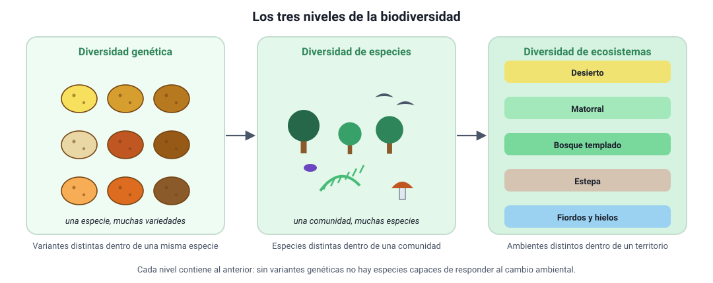
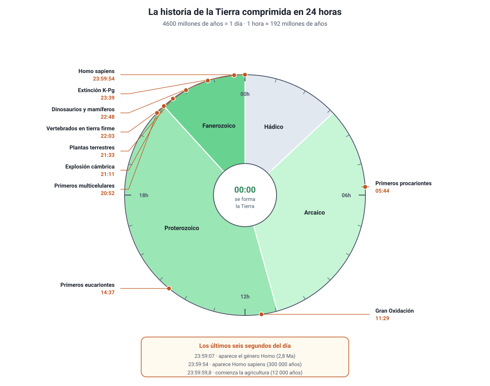
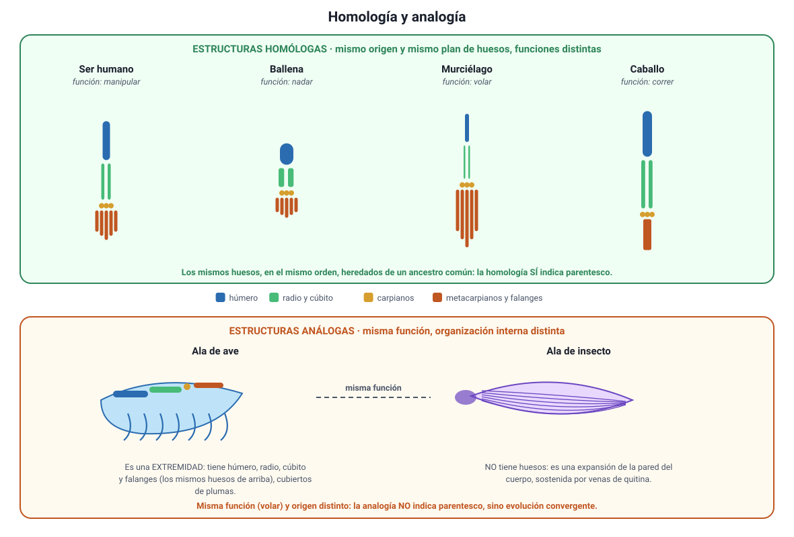
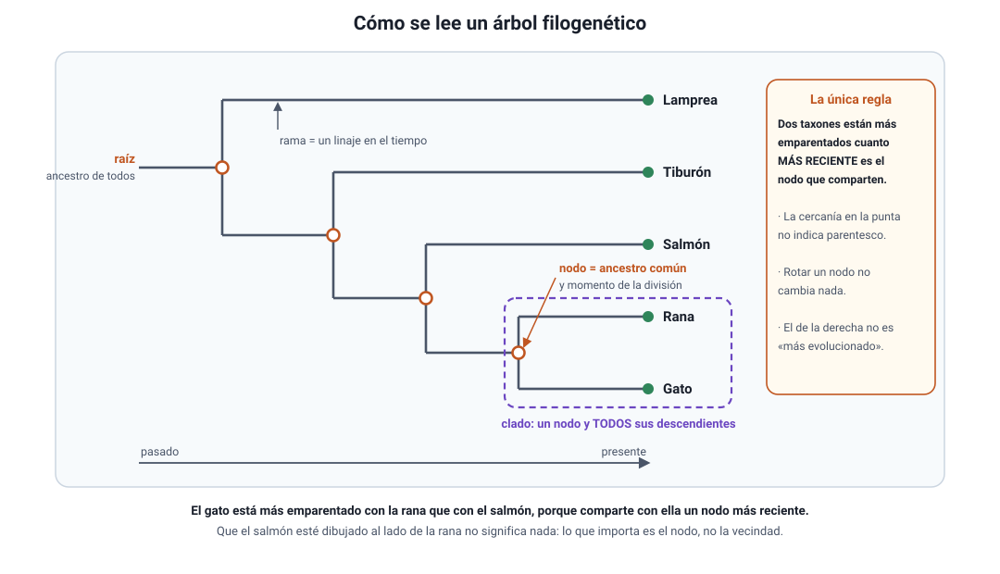
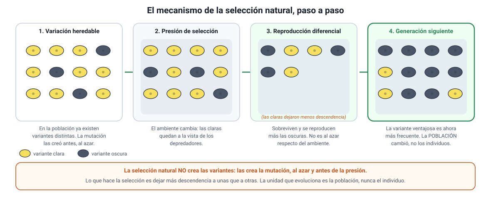
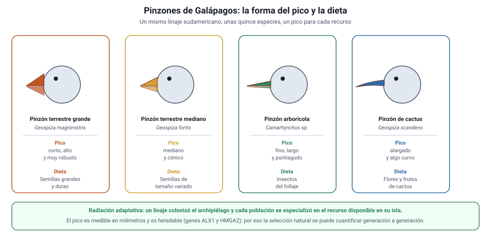

Capítulo 9: Evolución y biodiversidad
Área temática: Herencia y evolución
Todos los seres vivos de este planeta, desde una bacteria del intestino hasta un alerce de mil años, descienden de un mismo ancestro. Esa afirmación no es una creencia: es la conclusión a la que llegan, por separado, la paleontología, la anatomía comparada, la embriología, la biología molecular y la biogeografía. Este capítulo reconstruye ese razonamiento.
En las páginas que siguen vas a aprender qué es la biodiversidad y cómo se mide, cómo se fecha la historia de la Tierra y qué cabe en cada hora si la comprimimos en un día, cuáles son las evidencias de la evolución y qué permite concluir cada una, cómo se lee un árbol filogenético sin caer en los tres errores clásicos, qué propusieron Lamarck, Darwin y Wallace y en qué se diferencian sus mecanismos, y cómo se mide hoy la selección natural en poblaciones reales, con el caso de los pinzones de Galápagos seguido durante cuarenta años. Este capítulo cubre los conocimientos 3.4, 3.5 y 3.6 del temario oficial DEMRE 2027.
1. Conceptos claveIA:123
| Concepto | Definición breve |
|---|---|
| Evolución | Cambio en las características heredables de una población a lo largo de las generaciones. |
| Población | Conjunto de individuos de la misma especie que viven en un mismo lugar y se reproducen entre sí. |
| Especie | Grupo de poblaciones cuyos individuos pueden cruzarse entre sí y dejar descendencia fértil, y que están aislados reproductivamente de otros grupos. |
| Biodiversidad | Variedad de la vida en todos sus niveles: genes, especies y ecosistemas. |
| Especie endémica | Especie que vive de forma natural solo en un territorio determinado y en ningún otro lugar del mundo. |
| Especie nativa | Especie que habita de forma natural en un territorio, sin haber sido llevada allí por el ser humano. |
| Variabilidad genética | Diferencias en el ADN entre los individuos de una población; es la materia prima de la evolución. |
| Mutación | Cambio en la secuencia del ADN. Es el único mecanismo que crea variantes genéticas nuevas. |
| Adaptación | Característica heredable que aumenta la probabilidad de que un individuo sobreviva y se reproduzca en su ambiente. |
| Selección natural | Reproducción diferencial: los individuos con variantes heredables ventajosas dejan, en promedio, más descendencia. |
| Eficacia biológica (fitness) | Contribución de un individuo a la generación siguiente, medida como el número de descendientes que llegan a reproducirse. |
| Fósil | Resto o señal de un organismo del pasado conservado en las rocas o en el hielo, el ámbar o el sedimento. |
| Estructura homóloga | Estructura con el mismo origen embrionario y el mismo plan de organización en especies distintas, heredada de un ancestro común, aunque cumpla funciones diferentes. |
| Estructura análoga | Estructura con la misma función en especies distintas, pero de origen y organización interna diferentes: no viene de un ancestro común. |
| Evolución convergente | Aparición independiente de soluciones parecidas en linajes distintos sometidos a presiones ambientales similares. Produce estructuras análogas. |
| Estructura vestigial | Estructura reducida y sin su función original, heredada de un ancestro en el que sí la cumplía. |
| Ancestro común | Especie de la que descienden dos o más linajes. |
| Filogenia | Historia de parentesco evolutivo entre un grupo de especies. |
| Árbol filogenético | Diagrama ramificado que representa una filogenia: los nodos son ancestros comunes y las puntas, los taxones comparados. |
| Clado | Un ancestro común y todos sus descendientes. |
| Radiación adaptativa | Diversificación rápida de un linaje en muchas especies que ocupan modos de vida distintos, generalmente al colonizar un ambiente nuevo. |
| Especiación | Proceso por el que una población se divide y da origen a especies nuevas, al establecerse aislamiento reproductivo. |
| Deriva genética | Cambio al azar en la frecuencia de las variantes genéticas, importante sobre todo en poblaciones pequeñas. |
| Reloj molecular | Uso de la cantidad de diferencias acumuladas en el ADN o en una proteína para estimar hace cuánto se separaron dos linajes. |
2. BiodiversidadIA:45
La biodiversidad o diversidad biológica es la variedad de la vida. No es solo «cuántas especies hay»: el Convenio sobre la Diversidad Biológica (1992), que Chile ratificó, la define en tres niveles que se anidan uno dentro del otro.

a. Los tres nivelesIA:678
| Nivel | Qué varía | Ejemplo chileno |
|---|---|---|
| Diversidad genética | Las variantes del ADN dentro de una población o especie | Las decenas de variedades de papa cultivadas en Chiloé, todas de la especie Solanum tuberosum |
| Diversidad de especies | El número y la abundancia de especies de una comunidad | El bosque valdiviano, con coihue, ulmo, tepa, helechos, hongos e insectos que no aparecen en el desierto |
| Diversidad de ecosistemas | Los tipos de ambiente de un territorio, con sus condiciones y sus interacciones | El desierto de Atacama, el matorral mediterráneo, el bosque templado lluvioso, la estepa patagónica y los fiordos, en un mismo país |
Por qué importa el nivel genético. Es el nivel que sostiene a los otros dos. Una población con poca variabilidad genética puede estar completa y sana hoy, pero no tiene «repuestos»: si aparece un patógeno o cambia el clima, es probable que ningún individuo traiga la variante que permite sobrevivir. La variabilidad genética es, literalmente, la materia prima sobre la que puede actuar la selección natural (sección 7).
b. Cómo se mide la diversidad de especiesIA:91011
Para comparar dos lugares no basta con una impresión. Se usan dos medidas distintas, y confundirlas es un error frecuente:
- Riqueza de especies: el número de especies distintas presentes.
- Abundancia relativa: qué proporción del total representa cada especie.
| Sitio | Especies encontradas (n.º de individuos) | Riqueza | Abundancia |
|---|---|---|---|
| A | Especie 1 (97), especie 2 (1), especie 3 (1), especie 4 (1) | 4 | Muy desigual: una especie domina |
| B | Especie 1 (25), especie 2 (25), especie 3 (25), especie 4 (25) | 4 | Repartida de forma pareja |
Los dos sitios tienen la misma riqueza (4 especies), pero el sitio B es más diverso: si se toma un individuo al azar, es mucho más difícil predecir a qué especie pertenece. Los índices de diversidad (como el de Shannon o el de Simpson) resumen en un número estas dos cosas a la vez.
Error típico en la PAES. Cuando una tabla entrega el número de individuos por especie, «más individuos» no significa «más diversidad». Revisa siempre dos cosas: cuántas especies hay y cómo se reparten los individuos entre ellas. Un sitio con 500 individuos de una sola especie tiene riqueza 1.
c. Especies nativas, endémicas e introducidasIA:121314
| Categoría | Qué significa | Ejemplo |
|---|---|---|
| Nativa | Habita naturalmente en el territorio | El copihue (Lapageria rosea), el pudú (Pudu puda) |
| Endémica | Es nativa y solo existe en ese territorio | El picaflor de Juan Fernández (Sephanoides fernandensis), la ranita de Darwin (Rhinoderma darwinii) |
| Introducida (exótica) | Fue traída por el ser humano desde otro lugar | El conejo europeo, el visón americano, la zarzamora |
| Invasora | Introducida que se reproduce sin control y desplaza a las nativas | El castor en Tierra del Fuego, que inunda bosques al construir sus diques |
Toda especie endémica es nativa, pero no toda especie nativa es endémica: el copihue es nativo de Chile y también crece en zonas limítrofes de Argentina; la ranita de Darwin, en cambio, es endémica del bosque templado del sur de Chile y Argentina.
d. Chile: un territorio de islasIA:151617
Chile tiene unas 33 000 especies nativas descritas y cerca de un 25 % de ellas son endémicas, una proporción muy alta para un país continental. La razón es geográfica: Chile está rodeado de barreras que aíslan a sus poblaciones, igual que si fueran islas.
- El desierto de Atacama por el norte.
- La cordillera de los Andes por el este.
- El océano Pacífico por el oeste.
- Los hielos y el mar austral por el sur.
Una población aislada deja de intercambiar genes con las demás. Con el tiempo, la mutación, la deriva genética y la selección natural hacen que acumule diferencias propias hasta constituir una especie distinta (sección 7). El aislamiento es, entonces, una fábrica de endemismos: por eso Chile central, con su clima mediterráneo, está reconocido como uno de los hotspots o puntos calientes de biodiversidad del planeta, es decir, un lugar con muchísimas especies endémicas y, al mismo tiempo, con su hábitat original fuertemente reducido.
e. La biodiversidad es el resultado visible de la evoluciónIA:181920
Este es el hilo que une todo el capítulo. La biodiversidad actual no es un catálogo fijo: es la fotografía de un proceso que lleva miles de millones de años (sección 3), que dejó huellas comprobables (sección 4), que se puede reconstruir como un árbol de parentescos (sección 5) y que se explica por el mecanismo que propusieron Darwin y Wallace (secciones 6 a 8).
Extinción. La extinción es tan parte de la historia de la vida como el origen de nuevas especies: más del 99 % de las especies que han existido ya se extinguieron. La diferencia del momento actual es la velocidad: las extinciones ocurren hoy a un ritmo mucho mayor que el registrado en el promedio del registro fósil, y la causa es la actividad humana (pérdida de hábitat, especies invasoras, sobreexplotación, contaminación y cambio climático). En Chile, cerca de 950 especies tienen asignada una categoría de conservación por el Ministerio del Medio Ambiente.
3. La historia del planeta y la historia de la vida en 24 horasIA:2122
La Tierra se formó hace unos 4600 millones de años (Ma). Ese número es tan grande que no significa nada intuitivamente: por eso conviene comprimirlo en una escala que sí podamos imaginar.
a. Cómo se sabe la edad de las rocas y los fósilesIA:232425
Antes de mirar la escala, hay que entender de dónde salen las fechas. Se combinan dos tipos de datación:
| Método | En qué se basa | Qué entrega |
|---|---|---|
| Datación relativa (estratigrafía) | Principio de superposición: en una secuencia de estratos sin alterar, el estrato de abajo se depositó antes que el de arriba | El orden de los sucesos: qué es más antiguo que qué |
| Fósiles guía | Especies de vida geológica corta y distribución amplia | Correlacionar estratos de lugares distintos |
| Datación radiométrica | Desintegración de isótopos inestables a una tasa constante y conocida (su vida media) | Una edad numérica, en años |
Cada isótopo sirve en un rango distinto de tiempo, y elegir el adecuado es parte del diseño de la investigación:
| Isótopo | Vida media aproximada | Rango útil |
|---|---|---|
| Carbono-14 | 5730 años | Hasta unos 50 000 años. Sirve para restos orgánicos recientes |
| Potasio-40 → argón-40 | 1250 millones de años | Rocas volcánicas de millones de años |
| Uranio-238 → plomo-206 | 4470 millones de años | Las rocas más antiguas del planeta |
Error típico. El carbono-14 no sirve para datar un fósil de dinosaurio: después de unas diez vidas medias (≈ 57 000 años) queda tan poco 14C que no se puede medir. Un hueso de 66 millones de años se data indirectamente, fechando con potasio-argón las capas volcánicas que están inmediatamente debajo y encima del fósil.
b. La escala geológicaIA:262728
El tiempo geológico se divide en eones, que se subdividen en eras y estas en períodos. Los límites no son arbitrarios: casi todos coinciden con un cambio brusco en el registro fósil, muchas veces una extinción masiva.
| Eón | Era | Hito |
|---|---|---|
| Hádico (4600–4000 Ma) | — | Formación del planeta; sin registro fósil |
| Arcaico (4000–2500 Ma) | — | Primeras células procariontes; primeros estromatolitos |
| Proterozoico (2500–541 Ma) | — | Gran Oxidación; primeros eucariontes; primeros multicelulares |
| Fanerozoico (541 Ma–hoy) | Paleozoica (541–252 Ma) | Explosión cámbrica, plantas y vertebrados terrestres |
| Mesozoica (252–66 Ma) | Dinosaurios, primeras aves, primeras plantas con flor | |
| Cenozoica (66 Ma–hoy) | Diversificación de mamíferos y aves; aparición del ser humano |
c. La historia de la vida en 24 horasIA:293031
Comprimamos los 4600 Ma en un solo día: la Tierra se forma a las 00:00 y este instante es la medianoche siguiente. Cada hora del reloj equivale a unos 192 millones de años, y cada minuto, a unos 3,2 millones.

| Hito | Hace… | Hora del reloj |
|---|---|---|
| Se forma la Tierra | 4600 Ma | 00:00 |
| Primeros océanos líquidos | 4000 Ma | 03:08 |
| Primeros procariontes (estromatolitos de Australia) | 3500 Ma | 05:44 |
| La atmósfera se oxigena (Gran Oxidación) | 2400 Ma | 11:29 |
| Primeros eucariontes | 1800 Ma | 14:37 |
| Primeros organismos multicelulares | 600 Ma | 20:52 |
| Explosión cámbrica: aparecen casi todos los grandes grupos animales | 541 Ma | 21:11 |
| Primeras plantas terrestres | 470 Ma | 21:33 |
| Primeros vertebrados caminan en tierra firme | 375 Ma | 22:03 |
| Primeros dinosaurios y primeros mamíferos | 230 Ma | 22:48 |
| Se extinguen los dinosaurios no avianos (límite K-Pg) | 66 Ma | 23:39 |
| Aparece el género Homo | 2,8 Ma | 23:59:07 |
| Aparece Homo sapiens | 300 000 años | 23:59:54 |
| Comienza la agricultura | 12 000 años | 23:59:59,8 |
Tres lecturas que este reloj deja a la vista:
- La vida es antigua, pero la vida compleja es reciente. Durante casi dos tercios del día, la Tierra solo tuvo organismos unicelulares. Todo lo que se ve a simple vista cabe en las últimas tres horas.
- El oxígeno no estuvo siempre. La atmósfera se oxigenó recién a media mañana, y fue obra de organismos fotosintéticos. La vida no solo se adaptó al ambiente: lo transformó.
- La especie humana es un pestañeo. Homo sapiens aparece en los últimos seis segundos del día, y toda la historia escrita cabe en la última décima de segundo.
Error típico en la PAES. «Los primeros seres humanos convivieron con los dinosaurios» es falso por un margen enorme: entre la extinción de los dinosaurios no avianos (23:39 en el reloj) y la aparición del género Homo (23:59) pasaron unos 63 millones de años. En cambio, sí es correcto decir que convivimos con dinosaurios avianos: las aves son el linaje de dinosaurios que sobrevivió al límite K-Pg.
d. Las extinciones masivasIA:323334
El registro fósil muestra cinco episodios en los que desapareció una fracción enorme de las especies en un lapso geológicamente corto:
| Extinción | Hace | Rasgo distintivo |
|---|---|---|
| Fin del Ordovícico | 444 Ma | Glaciación y descenso del nivel del mar |
| Fin del Devónico | 372 Ma | Pérdida masiva de vida marina somera |
| Fin del Pérmico | 252 Ma | La mayor de todas: desaparece cerca del 80 % de las especies marinas |
| Fin del Triásico | 201 Ma | Deja el campo libre a los dinosaurios |
| Fin del Cretácico (K-Pg) | 66 Ma | Impacto de asteroide en Chicxulub y vulcanismo; se extinguen los dinosaurios no avianos |
Cada extinción masiva es también una oportunidad: al quedar ambientes disponibles, los linajes sobrevivientes se diversifican rápidamente. Los mamíferos existían desde hacía más de 130 millones de años, pero recién después del límite K-Pg ocuparon los modos de vida que habían sido de los dinosaurios.
e. El registro fósil de ChileIA:353637
Chile aporta piezas propias a esta historia, y son un contexto habitual de las preguntas de la PAES:
- Atacamatitan chilensis: titanosaurio del Cretácico, de hace unos 100 Ma, hallado cerca de Conchi Viejo en la Región de Antofagasta. Fue el primer dinosaurio no aviano descrito para Chile.
- Chilesaurus diegosuarezi: dinosaurio del Jurásico superior (150–146 Ma) de la Región de Aysén, encontrado en 2004 por Diego Suárez cuando tenía siete años. Su interés científico está en que combina rasgos de tres grandes grupos de dinosaurios, lo que obliga a revisar cómo se reconstruye su parentesco.
- El desierto de Atacama conserva fósiles marinos y de vertebrados en extraordinario estado por la ausencia de humedad, entre ellos el yacimiento de ballenas de Cerro Ballena, en Caldera.
Por qué el registro fósil está incompleto. Fosilizar es raro: exige que el organismo quede cubierto por sedimento rápidamente, en condiciones de poco oxígeno y sin que los restos sean destruidos. Por eso el registro favorece a los organismos con partes duras (conchas, huesos, dientes), a los que vivían en ambientes sedimentarios (mares someros, lagos, deltas) y a las especies abundantes y de amplia distribución. Un organismo de cuerpo blando que vivió en un bosque de montaña es casi invisible para la paleontología. Esa incompletitud no es un problema para la teoría evolutiva: es una limitación del método que los paleontólogos declaran y cuantifican.
4. Evidencias evolutivasIA:3839
La evolución no se «cree»: se infiere a partir de evidencia obtenida por métodos independientes entre sí. Esto es lo que la convierte en una teoría científica robusta: cinco líneas de investigación distintas —paleontología, anatomía, embriología, biología molecular y biogeografía— llegan al mismo árbol de parentescos sin haberse puesto de acuerdo.
Este es el conocimiento 3.4 del temario DEMRE 2027, y suele preguntarse pidiendo decidir qué evidencia apoya una hipótesis de parentesco, o qué dato habría que medir para ponerla a prueba.
a. El registro fósilIA:404142
Los fósiles son la única evidencia directa de organismos del pasado. Aportan tres cosas:
- Que hubo organismos distintos de los actuales, y que aparecen y desaparecen en un orden.
- Una secuencia coherente con el árbol: los fósiles de peces aparecen antes que los de anfibios, estos antes que los de reptiles, y los de mamíferos y aves después. Nunca se ha encontrado un mamífero en un estrato del Cámbrico.
- Formas transicionales, que combinan rasgos de dos grupos:
| Fósil | Edad | Rasgos que combina |
|---|---|---|
| Tiktaalik roseae | 375 Ma | Aletas con huesos de extremidad, cuello móvil y costillas de tetrápodo, junto con escamas y branquias de pez |
| Archaeopteryx | 150 Ma | Plumas y alas de ave, junto con dientes, garras en las alas y cola larga con vértebras, de dinosaurio terópodo |
| Pakicetus, Ambulocetus, Basilosaurus | 50–35 Ma | Serie que documenta el paso de mamíferos con cuatro patas terrestres a cetáceos acuáticos, con reducción progresiva de las extremidades posteriores |
Cuidado con el lenguaje. Un fósil transicional no es «mitad una cosa y mitad otra», ni el antepasado directo de una especie actual. Es una especie que existió por sí misma y que conserva una combinación de caracteres informativa sobre el orden en que se originaron esos caracteres. Tampoco existe el «eslabón perdido»: el registro fósil tiene infinitos vacíos, y cada nuevo hallazgo crea dos vacíos nuevos a sus costados.
b. Anatomía comparadaIA:434445

Estructuras homólogas. Comparten origen embrionario y plan de organización, aunque cumplan funciones distintas. El caso clásico es el miembro anterior de los tetrápodos: el brazo humano, la aleta de la ballena, el ala del murciélago y la pata del caballo tienen los mismos huesos (húmero, radio, cúbito, carpianos, metacarpianos y falanges), en el mismo orden y con las mismas conexiones, aunque sirvan para manipular, nadar, volar y correr. La explicación evolutiva es directa: todos heredaron el mismo plan de un ancestro común y cada linaje lo modificó. La homología es evidencia de parentesco.
Estructuras análogas. Comparten función, pero no origen. El ala de un ave y el ala de un insecto sirven las dos para volar, pero el ala del ave es una extremidad con huesos y plumas, y la del insecto es una expansión de la pared del cuerpo, sin huesos. Son producto de evolución convergente: dos linajes distintos sometidos a la misma exigencia ambiental llegaron a soluciones parecidas por caminos distintos. La analogía no es evidencia de parentesco.
| Homólogas | Análogas | |
|---|---|---|
| Origen embrionario | El mismo | Distinto |
| Plan de organización interna | El mismo | Distinto |
| Función | Puede ser distinta | La misma o parecida |
| Qué indica | Ancestro común (divergencia) | Presión ambiental parecida (convergencia) |
| Ejemplo | Brazo humano y aleta de ballena | Ala de ave y ala de insecto; aleta de tiburón y aleta de delfín |
Estructuras vestigiales. Son estructuras reducidas que perdieron su función original, pero que se mantienen porque se heredaron. Las ballenas no tienen patas traseras, pero conservan huesos pélvicos y restos de fémur internos; los humanos conservamos el cóccix (vértebras caudales fusionadas), los músculos auriculares que en otros mamíferos orientan la oreja y las muelas del juicio. En un modelo de organismos diseñados por separado, estas estructuras no tienen explicación; en un modelo de ascendencia común, son lo esperado.
El error que más se cobra en la PAES. Si dos especies comparten una estructura que cumple la misma función, la respuesta correcta no es «están emparentadas». Hay que preguntarse por el plan interno: si los huesos, tejidos y el origen embrionario coinciden, es homología (parentesco); si la función coincide pero la organización es distinta, es analogía (convergencia). Función parecida, por sí sola, no dice nada sobre parentesco.
c. Embriología comparadaIA:464748
Los embriones de los vertebrados pasan por etapas tempranas notablemente parecidas: todos presentan arcos faríngeos, un tubo neural dorsal, una cola y somitos, incluso los que no tendrán nada de eso en el adulto. En el pez, los arcos faríngeos se convierten en branquias; en el humano, en estructuras del oído medio, la mandíbula y la laringe. El desarrollo, entonces, no se rediseña de cero en cada linaje: se hereda un programa y se modifica su tramo final. Es el mismo argumento de la homología, visto durante la construcción del organismo.
d. Biología molecularIA:495051
Es hoy la evidencia más fina y la que la PAES pregunta con más frecuencia, porque permite cuantificar el parentesco.
- El código genético es prácticamente universal. El mismo codón especifica el mismo aminoácido en una bacteria, en un roble y en una persona. Esta coincidencia solo tiene sentido si todos los linajes heredaron el código de un ancestro común.
- Hay proteínas presentes en casi todos los organismos, porque cumplen funciones básicas. El citocromo c, de la cadena respiratoria, tiene 104 aminoácidos en los vertebrados. Su secuencia es idéntica entre el ser humano y el chimpancé, difiere en un aminoácido respecto del macaco rhesus, y las diferencias aumentan a medida que se compara con linajes más lejanos.
- Cuantas más diferencias, más antigua la separación. Esa es la idea del reloj molecular: si las mutaciones neutras se acumulan a una tasa aproximadamente constante, el número de diferencias entre dos secuencias es una medida del tiempo transcurrido desde su ancestro común.
| Especie comparada con el ser humano | Diferencias en el citocromo c (aminoácidos) |
|---|---|
| Chimpancé | 0 |
| Macaco rhesus | 1 |
| Caballo | 12 |
| Pollo | 13 |
| Atún | 21 |
| Levadura | 44 |
Por eso la respuesta «secuenciar» casi siempre gana. Cuando una pregunta plantea que un equipo quiere determinar cuál de varias especies conocidas está más emparentada con una especie recién descubierta, la variable que responde directamente es la secuencia de un gen o de una proteína compartida. Datos como el tamaño, el color, la actividad de una enzima o la cantidad de una reserva alimentaria dependen fuertemente del ambiente y pueden coincidir por convergencia: son el equivalente molecular de una analogía.
e. BiogeografíaIA:525354
La distribución geográfica de las especies sigue el patrón de la historia de los continentes y del aislamiento, no el de la simple disponibilidad de ambientes parecidos.
- Los marsupiales dominan en Australia, aislada desde hace decenas de millones de años, y no en África, que tiene ambientes equivalentes.
- Las especies de una isla oceánica se parecen sobre todo a las del continente más cercano, aunque el clima de la isla se parezca más al de otro lugar. Los pinzones de Galápagos se parecen a aves sudamericanas (sección 8).
- Los fósiles de linajes emparentados aparecen a ambos lados del Atlántico sur, en zonas que estuvieron unidas en el supercontinente Gondwana.
f. Cómo se combinan las cinco líneasIA:555657
| Evidencia | Qué se compara | Qué permite concluir |
|---|---|---|
| Registro fósil | Organismos del pasado y su posición en los estratos | El orden temporal de la aparición de los grupos y los caracteres |
| Anatomía comparada | Planes de organización de estructuras adultas | Parentesco (homología) o convergencia (analogía) |
| Embriología | Etapas del desarrollo | Herencia de un programa de desarrollo común |
| Biología molecular | Secuencias de ADN y de proteínas | Parentesco cuantificado y tiempo de divergencia |
| Biogeografía | Distribución geográfica y su historia | Efecto del aislamiento y de la deriva continental |
Ninguna de estas líneas basta por sí sola, y ahí está la fuerza del conjunto: que cinco métodos con supuestos y fuentes de error completamente distintos reconstruyan el mismo árbol es lo que hace que la explicación evolutiva sea la mejor disponible.
5. El árbol filogenéticoIA:585960
Un árbol filogenético es la hipótesis de parentesco entre un grupo de especies, dibujada como un diagrama ramificado. No es un adorno: es un modelo que se construye a partir de datos y que se puede poner a prueba, corregir o descartar cuando aparece evidencia nueva.
a. Cómo se leeIA:616263

| Parte | Qué representa |
|---|---|
| Puntas (taxones terminales) | Las especies o grupos que se están comparando, normalmente actuales |
| Nodo (punto de ramificación) | El ancestro común de todo lo que sale de él, y el momento en que ese linaje se dividió |
| Rama | Un linaje a lo largo del tiempo |
| Raíz | El ancestro común de todos los taxones del árbol |
| Clado | Un nodo y todos sus descendientes: el «grupo completo» |
| Grupo hermano | El linaje que comparte con otro su nodo más reciente |
La regla de lectura es una sola: dos taxones están más emparentados entre sí cuanto más reciente es el nodo que comparten. Todo lo demás del dibujo es convención.
b. Tres errores de lectura que la PAES sí cobraIA:646566
1. La cercanía en la punta no significa parentesco. Dos taxones pueden estar dibujados uno al lado del otro y compartir un nodo muy antiguo. Hay que seguir las ramas hacia atrás hasta el nodo común, no medir la distancia horizontal.
2. Rotar una rama no cambia la información. Un árbol es como un móvil colgante: se puede girar cualquier nodo y el árbol sigue diciendo exactamente lo mismo. Si dos dibujos parecen distintos, hay que comparar qué taxones comparten cada nodo, no el orden en que aparecen.
3. El de la derecha no es «el más evolucionado». No hay un extremo «avanzado». Todos los taxones terminales llevan exactamente el mismo tiempo evolucionando desde la raíz. Una bacteria actual no es «más primitiva» que un ser humano: es el resultado de los mismos 3500 millones de años de evolución.
c. Con qué datos se construyeIA:676869
Un árbol se construye a partir de caracteres compartidos que se heredaron de un ancestro común, es decir, homologías (sección 4). Los caracteres que importan son los derivados compartidos: novedades que aparecieron en un ancestro y que sus descendientes heredaron.
Ejemplo con una matriz de caracteres de cinco vertebrados (1 = presente, 0 = ausente):
| Carácter | Lamprea | Tiburón | Salmón | Rana | Gato |
|---|---|---|---|---|---|
| Columna vertebral | 1 | 1 | 1 | 1 | 1 |
| Mandíbulas | 0 | 1 | 1 | 1 | 1 |
| Esqueleto osificado | 0 | 0 | 1 | 1 | 1 |
| Cuatro extremidades | 0 | 0 | 0 | 1 | 1 |
| Pelo y glándulas mamarias | 0 | 0 | 0 | 0 | 1 |
Cada carácter nuevo aparece una sola vez y define un grupo mayor que contiene a todos los que lo heredaron: la columna vertebral agrupa a los cinco; las mandíbulas, a cuatro; el esqueleto osificado, a tres; las cuatro extremidades, a dos. El árbol que reproduce ese patrón con el menor número de cambios (criterio de parsimonia) es el que se propone como hipótesis. Con secuencias de ADN el principio es el mismo, solo que los caracteres son las posiciones de la secuencia y hay miles de ellos, lo que exige métodos estadísticos.
El grupo externo. Para enraizar el árbol se incluye un taxón que se sabe emparentado pero ajeno al grupo de interés (el outgroup). Sirve para decidir cuál estado de un carácter es el ancestral y cuál el derivado: si el grupo externo no tiene mandíbulas, entonces «sin mandíbulas» es el estado ancestral y «con mandíbulas» es la novedad. Sin grupo externo se puede saber quién se parece a quién, pero no en qué dirección corrió el tiempo.
d. Clado, y por qué «los peces» no es un cladoIA:707172
Un clado es un ancestro y todos sus descendientes. Los grupos que dejan fuera a algunos descendientes no son clados y la clasificación moderna trata de evitarlos.
- «Mamíferos» sí es un clado: incluye al ancestro común de los mamíferos y a todos sus descendientes.
- «Reptiles», en el uso tradicional, no lo es: excluye a las aves, que descienden del mismo ancestro. El clado completo es Reptilia incluyendo a las aves.
- «Peces» tampoco lo es: el ancestro común de todos los animales que llamamos peces es también el ancestro de los tetrápodos, es decir, de los anfibios, reptiles, aves y mamíferos. Dicho de forma incómoda pero correcta: dentro del clado que contiene a todos los peces, estamos también nosotros.
Cómo se pregunta. Un ítem típico entrega un árbol y pregunta cuál de dos especies está más emparentada con una tercera, o si un grupo marcado en el dibujo constituye un clado. La respuesta se obtiene siempre igual: ubicar el nodo común más reciente y comprobar si el grupo marcado incluye a todos los descendientes de su nodo.
6. La evolución antes de DarwinIA:7374
Este es el conocimiento 3.5 del temario DEMRE 2027 («aportes de Lamarck, Darwin y Wallace»). La PAES no pide fechas de memoria: pide distinguir los mecanismos que cada autor propuso y reconocer cuál de ellos explica un caso descrito en el enunciado.
a. El punto de partida: el fijismoIA:757677
Hasta fines del siglo XVIII, la idea dominante en Europa era el fijismo: las especies fueron creadas tal como son, en número fijo y sin cambiar. Dos aportes involuntarios prepararon el terreno para abandonarla:
- Carlos Linneo (1735) creó el sistema de clasificación jerárquica y la nomenclatura binomial (Homo sapiens). Linneo era fijista, pero su propia clasificación mostró algo revelador: las especies se agrupan de forma anidada, en grupos dentro de grupos. Ese patrón es, justamente, el que produce un árbol de ascendencia común.
- Georges Cuvier fundó la paleontología comparada y demostró que existieron especies que ya no están, es decir, que hubo extinciones. Lo explicó con el catastrofismo: series de catástrofes que arrasaban la fauna de una región, que luego era repoblada desde otras zonas. Aceptaba el cambio de la fauna en el tiempo, pero no la transformación de las especies.
b. La geología entrega el tiempoIA:787980
Para que cualquier mecanismo gradual pudiera funcionar, hacía falta un planeta antiguo. Eso lo aportaron James Hutton y, sobre todo, Charles Lyell con sus Principios de geología (1830–1833): la idea de que los procesos geológicos lentos que operan hoy (erosión, sedimentación, levantamiento) son los mismos que actuaron siempre, y que por acumulación explican las grandes formaciones. La consecuencia es el tiempo profundo. Darwin llevó el primer volumen de Lyell a bordo del Beagle y lo usó para interpretar lo que veía.
c. Lamarck: el primer mecanismo explícitoIA:818283
Jean-Baptiste Lamarck publicó en 1809 su Filosofía zoológica, donde sostuvo algo que en su época era una ruptura: las especies se transforman unas en otras a lo largo del tiempo (transformismo), y los organismos complejos provienen de otros más simples. Propuso dos mecanismos:
- Ley del uso y el desuso. Las exigencias del ambiente llevan a que un organismo use más ciertos órganos, que por eso se desarrollan, y deje de usar otros, que se atrofian.
- Herencia de los caracteres adquiridos. Las modificaciones así conseguidas durante la vida del individuo se transmiten a la descendencia.
Su ejemplo más citado es la jirafa: al estirar el cuello para alcanzar hojas altas, cada individuo alargaría su cuello y transmitiría ese cuello más largo a sus hijos.
Qué acertó y qué erró Lamarck. Acertó en lo grande: propuso que las especies cambian, que el cambio se relaciona con el ambiente y que hay un mecanismo natural detrás, no un acto sobrenatural. Erró en el mecanismo: el esfuerzo de un individuo no modifica la información genética de sus gametos. August Weismann lo puso a prueba a fines del siglo XIX cortando la cola a ratones durante varias generaciones; las crías siguieron naciendo con cola normal. Hoy se sabe por qué: lo que se hereda es el ADN de la línea germinal, y lo que le ocurre al cuerpo no se copia hacia ella.
d. Lamarck y Darwin frente al mismo casoIA:848586
| Explicación lamarckiana | Explicación darwiniana | |
|---|---|---|
| ¿Quién cambia? | El individuo, durante su vida | La población, a lo largo de las generaciones |
| ¿De dónde viene el rasgo? | Se adquiere por el uso, en respuesta a la necesidad | Ya existía como variación previa en la población |
| Papel del ambiente | Induce el cambio en el organismo | Selecciona entre las variantes que ya están |
| El cuello de la jirafa | Cada jirafa estiró su cuello y lo transmitió alargado | En la población había cuellos de distinto largo; las de cuello más largo alcanzaron más alimento, sobrevivieron y dejaron más descendencia, y su proporción aumentó generación tras generación |
El detector de lamarckismo en la PAES. Una alternativa es lamarckiana (y por lo tanto incorrecta) cuando dice que los individuos desarrollaron, adquirieron o generaron un rasgo porque lo necesitaban, y que después lo heredaron. Frases de alerta: «se adaptaron al frío desarrollando pelaje más grueso», «la especie generó resistencia al antibiótico para sobrevivir», «con el uso, el órgano se fortaleció y pasó a la descendencia». La formulación correcta siempre pone la variación antes de la presión: «en la población ya existían individuos con pelaje más grueso, y en el ambiente frío esos individuos dejaron más descendencia».
e. La pieza que faltaba: MalthusIA:878889
En 1798, el economista Thomas Malthus había observado que las poblaciones tienden a crecer de forma geométrica mientras los recursos crecen mucho más lentamente, de modo que gran parte de los individuos que nacen no llega a reproducirse. Darwin y Wallace, cada uno por su lado, leyeron a Malthus y extrajeron la misma consecuencia biológica: si nacen muchos más de los que pueden sobrevivir, entonces hay una criba; y si los individuos difieren de forma heredable, esa criba no es al azar. Ese es exactamente el argumento de la sección siguiente.
7. La teoría de la selección natural de Darwin y WallaceIA:909192
Este es el conocimiento 3.6 del temario DEMRE 2027 y el contenido más preguntado del capítulo.
a. Cómo llegaron a la misma ideaIA:939495
Charles Darwin viajó a bordo del Beagle entre 1831 y 1836. En Chile presenció el terremoto de Concepción de 1835, vio conchas marinas fósiles a miles de metros de altitud en los Andes y encontró bosques petrificados: evidencia directa de que el territorio se levanta, es decir, de que la Tierra cambia. En las islas Galápagos, en 1835, observó que cada isla tenía variedades propias de tortugas y de aves, todas parecidas entre sí y parecidas a las del continente sudamericano. Volvió a Inglaterra con el material y pasó más de veinte años desarrollando la explicación sin publicarla.
En 1858, Alfred Russel Wallace, que llevaba años recolectando en el archipiélago malayo, le envió desde la isla de Ternate un ensayo con la misma idea, obtenida de forma independiente. Lyell y Hooker organizaron una lectura conjunta de los trabajos de ambos en la Linnean Society de Londres el 1 de julio de 1858, publicada ese mismo año. Al año siguiente, en 1859, Darwin publicó El origen de las especies, con la evidencia acumulada durante dos décadas.
Por qué se habla de «teoría de Darwin-Wallace». Los dos formularon el mismo mecanismo por separado y ambos lo presentaron juntos en 1858. Darwin aportó la enorme masa de evidencia y el desarrollo del argumento; Wallace, una formulación independiente que confirmó que el razonamiento no dependía de un solo autor. En la PAES el mecanismo se cita con los dos nombres.
b. El argumento, paso a pasoIA:969798
La selección natural es una consecuencia lógica de cuatro observaciones. Si las cuatro se cumplen, el resultado necesariamente ocurre.

| Paso | Observación | Qué significa |
|---|---|---|
| 1. Variación | Los individuos de una población no son idénticos | Difieren en tamaño, color, resistencia, conducta… |
| 2. Herencia | Parte de esa variación es heredable | Proviene de diferencias en el ADN (mutación y recombinación), no del ambiente |
| 3. Superproducción | Nacen más individuos de los que el ambiente puede sostener | Hay competencia por alimento, espacio, luz y pareja |
| 4. Reproducción diferencial | La supervivencia y la reproducción no son al azar | Los individuos cuya variante les da ventaja en ese ambiente dejan, en promedio, más descendencia |
Consecuencia: como las variantes ventajosas se heredan, su frecuencia aumenta en la población generación tras generación. Eso es evolución por selección natural. La unidad que evoluciona es la población; el individuo no evoluciona.
c. Adaptación y eficacia biológicaIA:99100101
Una adaptación es una característica heredable que aumenta la probabilidad de sobrevivir y reproducirse en un ambiente dado. La medida de esa ventaja es la eficacia biológica (fitness): el número de descendientes que un individuo deja y que llegan a reproducirse.
La pregunta favorita de la PAES. Cuando un ítem describe un rasgo (una vocalización de alerta, una conducta de cuidado de las crías, un pelaje, un pico) y pregunta por qué se consideraría adaptativo, la respuesta correcta es siempre la que dice que el rasgo aumenta la oportunidad de sobrevivir y reproducirse. No basta con que el rasgo sea heredable (todos los rasgos evaluados lo son), ni con que resulte útil en un ambiente, ni con que aporte variabilidad: lo que define una adaptación es su efecto sobre el éxito reproductivo.
d. Cuatro malentendidos que hay que desarmarIA:102103104
1. La selección natural no crea las variantes. Las crea la mutación, al azar y antes de que exista la presión. La selección solo actúa sobre lo que ya está. Un antibiótico no genera bacterias resistentes: selecciona las que ya lo eran.
2. No tiene una meta ni «busca» mejorar. No existe un rasgo «más evolucionado» en abstracto: una variante ventajosa en un ambiente puede ser desventajosa en otro. Si el ambiente cambia, la dirección de la selección cambia (y hasta se invierte, como se verá en la sección 8).
3. No es «la supervivencia del más fuerte». Es la reproducción del más apto en ese ambiente, que puede ser el más pequeño, el mejor camuflado, el que tolera la sequía o el que cuida mejor a sus crías. Sobrevivir sin reproducirse no aporta nada a la generación siguiente.
4. El individuo no se adapta. Un individuo puede aclimatarse fisiológicamente (broncearse, ganar masa muscular, producir más glóbulos rojos en altura), pero eso no se hereda y no es evolución. La adaptación evolutiva ocurre en la población, entre generaciones.
e. Selección natural observable hoyIA:105106107
La selección natural no es un relato del pasado: se mide en poblaciones actuales.
| Caso | Presión de selección | Qué se observó |
|---|---|---|
| Polilla del abedul (Biston betularia) | Depredación por aves, sobre cortezas ennegrecidas por el hollín industrial en Inglaterra | La forma oscura (carbonaria), casi inexistente a mediados del siglo XIX, llegó a ser la gran mayoría en las zonas industriales; al reducirse la contaminación por las leyes de aire limpio, la forma clara volvió a predominar |
| Resistencia a antibióticos | Uso de antibióticos | Las bacterias portadoras de variantes resistentes sobreviven al tratamiento y se multiplican; la resistencia se propaga además entre bacterias por plásmidos. En 2019 se estimaron 1,27 millones de muertes atribuibles a infecciones resistentes |
| Resistencia a pesticidas | Aplicación repetida de un insecticida | Poblaciones de insectos que dejan de responder a la dosis habitual en pocas temporadas |
| Pinzones de Galápagos | Sequía y cambio en el tipo de semillas disponibles | Cambio medible del tamaño del pico entre una generación y la siguiente (sección 8) |
Por qué es tan buen ejemplo el antibiótico. Permite mostrar los cuatro pasos en una placa de cultivo: hay variación (algunas bacterias portan una mutación que altera la diana del fármaco), es heredable (está en el ADN), se producen millones de descendientes y la reproducción es diferencial (solo las resistentes crecen). Y deja clara la regla del punto 1: el antibiótico no induce la resistencia, la selecciona. De ahí la recomendación médica de completar el tratamiento y no usar antibióticos para infecciones virales.
f. De la selección natural a las nuevas especiesIA:108109110
La selección natural explica cómo cambia una población. Para que se formen especies distintas hace falta además que dos poblaciones dejen de intercambiar genes, es decir, que se establezca aislamiento reproductivo:
- Una barrera divide la población: un brazo de mar, una cordillera que se levanta, una glaciación, la colonización de una isla.
- Cada población queda sometida a presiones de selección propias y acumula además mutaciones y efectos de la deriva genética distintos.
- Si el aislamiento se prolonga, las diferencias llegan a impedir que los individuos de una población se reproduzcan con los de la otra: son especies distintas, aunque la barrera desaparezca.
Cuando un linaje coloniza un territorio con muchos modos de vida disponibles y se diversifica rápidamente en varias especies, se habla de radiación adaptativa. El caso de la sección siguiente es el ejemplo clásico.
g. Qué se le agregó a la teoría despuésIA:111112113
Darwin y Wallace no conocían las leyes de Mendel ni la estructura del ADN. Con la genética, la teoría se amplió a lo que se llama teoría sintética o neodarwinismo, que suma a la selección natural otros tres mecanismos de cambio evolutivo:
| Mecanismo | Qué hace |
|---|---|
| Mutación | Genera variantes nuevas. Es la única fuente original de variabilidad |
| Recombinación (entrecruzamiento y permutación en la meiosis) | Combina de formas nuevas las variantes existentes (capítulo 6) |
| Deriva genética | Cambia frecuencias al azar; su efecto es grande en poblaciones pequeñas y puede fijar variantes sin ninguna ventaja |
| Flujo génico (migración) | Traslada variantes entre poblaciones y reduce las diferencias entre ellas |
La selección natural sigue siendo el único de los cuatro que produce adaptación, porque es el único que no actúa al azar respecto del ambiente.
8. Los pinzones y la selección naturalIA:114115
Los pinzones de Galápagos son el ejemplo más completo de selección natural que existe, porque en ellos se puede seguir el proceso en dos escalas a la vez: la radiación de un linaje en millones de años y el cambio medible de una población de un año al siguiente.
a. Un ancestro, muchos picosIA:116117118
El archipiélago de Galápagos está a unos 1000 km de la costa de Ecuador y es de origen volcánico: emergió del océano sin vida. Todas las especies terrestres que hoy lo habitan llegaron desde el continente. Entre ellas llegó, hace algunos millones de años, una especie de ave granívora sudamericana.
A partir de ese único linaje se originaron alrededor de quince especies de las llamadas «pinzones de Darwin», repartidas entre las islas. Se parecen mucho en tamaño, color y conducta general, pero difieren claramente en una cosa: el pico, y con él, la dieta.

| Tipo de pico | Dieta | Ejemplo |
|---|---|---|
| Corto, alto y muy robusto | Semillas grandes y duras, que hay que quebrar | Pinzón terrestre grande (Geospiza magnirostris) |
| Mediano y cónico | Semillas de tamaño variado | Pinzón terrestre mediano (Geospiza fortis) |
| Pequeño y fino | Semillas pequeñas y blandas | Pinzón terrestre pequeño (Geospiza fuliginosa) |
| Fino, largo y puntiagudo | Insectos del follaje | Pinzones arborícolas (Camarhynchus) |
| Alargado y algo curvo | Flores y frutos de cactus | Pinzón de cactus (Geospiza scandens) |
Esta es una radiación adaptativa: un linaje que llega a un territorio con muchos modos de vida disponibles y sin competidores se diversifica rápidamente, especializándose cada población en un recurso distinto. El aislamiento entre islas aporta el paso 1 de la especiación (sección 7f) y la distinta oferta de alimento aporta las presiones de selección.
Por qué el pico es tan informativo. El pico es la herramienta con la que el ave consigue el alimento, de modo que su forma y su tamaño se traducen directamente en supervivencia. Además es medible con precisión (largo, ancho y profundidad, en milímetros) y es heredable: los hijos de padres de pico grande tienden a tener pico grande. Se conocen incluso los genes implicados: variantes del gen ALX1 se asocian a la forma del pico y variantes de HMGA2, a su tamaño. Es decir, en los pinzones están documentados los pasos 1 y 2 del mecanismo con datos moleculares, no por suposición.
b. El experimento natural de Daphne MajorIA:119120121
Desde 1973, Peter y Rosemary Grant midieron, anillaron y siguieron individualmente a los pinzones de Daphne Major, un islote pequeño del archipiélago, durante más de cuatro décadas. Ese seguimiento permitió capturar el proceso en directo.
La sequía de 1977. En 1976 la isla tenía semillas abundantes y de todos los tamaños. En 1977 prácticamente no llovió, las plantas produjeron muy pocas semillas y los pinzones consumieron primero las pequeñas y blandas, que son las más fáciles. Lo que quedó disponible fueron semillas grandes y duras.
Lo que ocurrió en la población de Geospiza fortis, el pinzón terrestre mediano:
- La población se desplomó, desde alrededor de 1400 individuos a unos pocos cientos en poco más de dos años.
- La mortalidad no fue al azar: sobrevivieron en mayor proporción las aves de cuerpo grande y pico profundo, las únicas capaces de quebrar las semillas duras que quedaban.
- La profundidad de pico más frecuente en la población pasó de unos 8,8 mm antes de la sequía a unos 10,3 mm entre las sobrevivientes.
- Como el tamaño del pico es heredable, la generación siguiente nació con picos en promedio más profundos que la de antes de la sequía.
Aquí están los cuatro pasos, con datos:
| Paso del mecanismo | Evidencia en Daphne Major |
|---|---|
| 1. Variación | La población tenía picos de profundidades distintas antes de la sequía |
| 2. Herencia | El tamaño del pico se transmite de padres a hijos (y se conocen los genes asociados) |
| 3. Superproducción / competencia | Faltó alimento para todos: la mayoría de la población murió |
| 4. Reproducción diferencial | Sobrevivieron y se reprodujeron preferentemente las de pico más profundo |
| Resultado | La distribución de la profundidad del pico se desplazó en la generación siguiente |
El punto que la PAES pregunta y que se responde mal. Durante la sequía ningún pinzón cambió su pico. Cada ave nació con el pico que tenía y murió con él. Lo que cambió fue la composición de la población: la proporción de individuos de pico grande aumentó porque los de pico pequeño dejaron menos descendencia. Si una alternativa dice que «las aves desarrollaron picos más grandes para poder comer las semillas duras», es lamarckismo (sección 6d) y es incorrecta.
c. Cuando el ambiente cambia, la selección cambia de direcciónIA:122123124
Esta es la parte más instructiva del estudio de los Grant, porque desmonta la idea de que la evolución «avanza» hacia un óptimo.
- El Niño de 1983. Llovió muchísimo, las plantas de semillas pequeñas y blandas se multiplicaron y pasaron a ser el recurso dominante. Ahora las aves de pico pequeño, más eficientes con esas semillas, tuvieron la ventaja, y el promedio de la población se desplazó en sentido contrario al de 1977.
- La sequía de 2003–2004. Poco antes se había establecido en Daphne Major el pinzón terrestre grande, G. magnirostris, un competidor mucho más eficaz con las semillas grandes. Cuando volvió a faltar el alimento, los G. fortis de pico grande quedaron compitiendo de frente con él y les fue peor: esta vez la selección favoreció a los G. fortis de pico más pequeño, que explotaban el recurso que el competidor no usaba. La presión de selección no vino del clima, sino de otra especie.
Tres conclusiones generales del caso.
- La evolución es medible. No hace falta esperar millones de años: en Daphne Major se detectó un cambio estadísticamente significativo entre una generación y la siguiente.
- No tiene dirección fija. La misma característica fue ventajosa en 1977 y desventajosa en 1983. «Adaptado» significa siempre adaptado a un ambiente determinado.
- La presión de selección puede ser biótica. El clima, los depredadores, los patógenos y los competidores son todos presiones de selección.
d. Cómo se convierte esto en una pregunta de PAESIA:125126127
Los ítems sobre este contenido casi nunca piden recordar el caso: piden trabajar con los datos. Las tareas habituales son cuatro:
- Leer un gráfico de distribución de un rasgo antes y después de un evento, y decidir en qué dirección se desplazó.
- Identificar la presión de selección que describe el enunciado (¿qué recurso faltó? ¿qué depredador apareció? ¿qué competidor llegó?).
- Elegir la explicación correcta entre una darwiniana y una lamarckiana disfrazada.
- Proponer el procedimiento para poner a prueba una hipótesis: qué medir, en cuántos individuos, antes y después, y con qué grupo de comparación.
Guion de resolución. Frente a un ítem de este tipo, responde en este orden: (i) ¿cuál es el rasgo heredable medido?; (ii) ¿cuál es la presión que cambió en el ambiente?; (iii) ¿qué variante tuvo más descendencia en esas condiciones?; (iv) por lo tanto, ¿en qué dirección se desplaza la población en la generación siguiente? Si el enunciado entrega una tabla o un gráfico, compara siempre el promedio o el valor más frecuente antes y después, no los valores extremos de un individuo.
Ejemplos PAES resueltos
Cuatro preguntas del estilo de la PAES sobre evolución y biodiversidad, resueltas con el guion DEMRE. Intenta responder antes de leer la resolución.
Ejemplo 1 · Habilidad: Procesar y analizar la evidencia
En una isla, una población de escarabajos presenta dos variantes de color, verde y parda. Un equipo midió durante tres años la frecuencia de cada variante y el porcentaje de suelo cubierto por vegetación verde, que disminuyó por una sequía prolongada.
| Año | Cobertura vegetal verde (%) | Escarabajos verdes (%) | Escarabajos pardos (%) |
|---|---|---|---|
| 1 | 78 | 71 | 29 |
| 2 | 41 | 52 | 48 |
| 3 | 16 | 27 | 73 |
Los escarabajos son depredados por aves que cazan guiándose por la vista. ¿Cuál de las siguientes conclusiones se desprende de los datos?
- A) Los escarabajos verdes cambiaron su color a pardo al reducirse la vegetación.
- B) La variante parda se volvió más frecuente porque el suelo descubierto la camufla mejor.
- C) La sequía provocó mutaciones que originaron la variante parda en la población.
- D) La disminución de la cobertura vegetal redujo el tamaño total de la población.
Resolución. Esta pregunta evalúa la habilidad de procesar y analizar la evidencia: identificar relaciones y patrones entre las variables de una tabla. La tarea consiste en relacionar el cambio de la cobertura vegetal con el cambio de las frecuencias y explicarlo con el mecanismo de la selección natural.
Al bajar la cobertura verde de 78 % a 16 %, la proporción de escarabajos verdes bajó de 71 % a 27 % y la de pardos subió de 29 % a 73 %. Ambas variantes ya estaban presentes en el año 1, de modo que la variante parda no apareció durante el estudio. Sobre un suelo cada vez más descubierto, los verdes quedan a la vista de las aves y los pardos pasan desapercibidos: los pardos sobreviven más, se reproducen más y su proporción aumenta. Clave: B.
- A es lamarckismo: ningún individuo cambia su color durante su vida. Relación inversa o inexistente.
- C invierte el orden de los hechos: la mutación que originó la variante parda es previa e independiente de la sequía, y la tabla ya la muestra en el año 1. Relación inversa o inexistente.
- D habla del número total de individuos, que la tabla no entrega: solo hay porcentajes. Variable equivocada.
Qué hay que saber y saber hacer: distinguir frecuencia relativa de número total y reconocer los cuatro pasos de la selección natural en un conjunto de datos. Dato para la PAES: una tabla de porcentajes nunca permite concluir nada sobre el tamaño de la población; si la pregunta menciona «aumentó la cantidad de individuos», revisa si te dieron números absolutos.
Ejemplo 2 · Habilidad: Planificar y conducir una investigación
Un equipo descubre una planta, la especie X, en un valle aislado de la cordillera. Quiere determinar cuál de cuatro especies conocidas (P, Q, R y S), que crecen en otra región, está más cercanamente emparentada con X.
¿Cuál de los siguientes procedimientos permite responder directamente esa pregunta?
- A) Comparar la forma y el tamaño de las hojas de X con las de P, Q, R y S.
- B) Comparar la secuencia de un mismo gen de X con la de P, Q, R y S.
- C) Comparar la tasa de fotosíntesis de X con la de P, Q, R y S en igualdad de luz.
- D) Comparar la altura alcanzada por X y por P, Q, R y S a los dos años de cultivo.
Resolución. Esta pregunta evalúa la habilidad de planificar y conducir una investigación: elegir el procedimiento que permite poner a prueba una hipótesis. La tarea consiste en decidir qué variable aporta información sobre parentesco y no sobre adaptación al ambiente.
El parentesco se mide comparando caracteres heredados de un ancestro común. Las secuencias de un mismo gen cumplen esa condición: cuantas menos diferencias haya entre dos secuencias, más reciente es el ancestro común (sección 4d). El procedimiento correcto es secuenciar el mismo gen en las cinco especies y contar las diferencias. Clave: B.
- A usa rasgos morfológicos que pueden coincidir por convergencia: dos especies no emparentadas sometidas al mismo clima pueden tener hojas parecidas. Variable equivocada.
- C mide un proceso fisiológico que depende fuertemente de las condiciones de cultivo, no de la historia del linaje. Variable equivocada.
- D mide una respuesta de crecimiento, también dependiente del ambiente. Variable equivocada.
Qué hay que saber y saber hacer: saber que homología es evidencia de parentesco y analogía no, y saber elegir entre variables la que responde a la pregunta planteada. Atajo para la PAES: cuando el enunciado pide parentesco, la alternativa que habla de secuencias de ADN, de ARN o de aminoácidos es casi siempre la correcta; las que hablan de forma, tamaño, color o rendimiento suelen ser distractores por convergencia.
Ejemplo 3 · Habilidad: Evaluar
Un grupo de estudiantes explica así el aumento de bacterias resistentes en un hospital:
«Al aplicar el antibiótico, las bacterias detectaron la amenaza y desarrollaron mecanismos de resistencia, que luego heredaron a su descendencia.»
¿Cuál es el principal error de esta explicación?
- A) Supone que las bacterias se reproducen sexualmente y no por división binaria.
- B) Supone que el antibiótico genera la resistencia, cuando esta ya existía en la población.
- C) Supone que la resistencia se hereda, cuando en realidad no está codificada en el ADN.
- D) Supone que el antibiótico elimina a todas las bacterias del cultivo, incluidas las resistentes.
Resolución. Esta pregunta evalúa la habilidad de evaluar: juzgar la calidad y la consistencia de una explicación. La tarea consiste en contrastar el relato con el mecanismo de la selección natural.
La explicación citada es lamarckiana: atribuye a los individuos la capacidad de generar un rasgo porque lo necesitan. El mecanismo correcto invierte el orden: las mutaciones que confieren resistencia ocurren al azar y antes de que aparezca el antibiótico; al aplicarlo, solo las bacterias que ya portaban esa variante sobreviven y se multiplican. El antibiótico no induce la resistencia: la selecciona. Clave: B.
- A introduce un asunto que no es el error de la explicación: el tipo de reproducción no cambia el problema de fondo. Verdadero pero irrelevante.
- C es falsa: la resistencia sí está codificada en el ADN (en el cromosoma bacteriano o en un plásmido) y por eso se hereda. Relación inversa o inexistente.
- D contradice el propio enunciado, que describe un aumento de bacterias resistentes. Sobre-alcance.
Qué hay que saber y saber hacer: reconocer el orden correcto de los hechos (variación → presión → reproducción diferencial) y detectar el lenguaje lamarckiano. Dato: esta distinción tiene una consecuencia práctica. Como el antibiótico solo selecciona, interrumpir el tratamiento antes de tiempo deja vivas a las bacterias menos sensibles y acelera la propagación de la resistencia.
Ejemplo 4 · Habilidad: Observar y plantear preguntas
Se estudia una población de aves granívoras de una isla. Tras un año de sequía extrema, en el que solo quedaron disponibles semillas grandes y duras, se midió la profundidad del pico de todos los individuos capturados:
| Profundidad del pico (mm) | Antes de la sequía (n.º de aves) | Después de la sequía (n.º de aves) |
|---|---|---|
| 7,5 – 8,4 | 128 | 9 |
| 8,5 – 9,4 | 210 | 31 |
| 9,5 – 10,4 | 96 | 58 |
| 10,5 – 11,4 | 34 | 42 |
¿Cuál de las siguientes preguntas de investigación es acorde con los datos presentados?
- A) ¿De qué manera la sequía modifica la profundidad del pico de cada ave adulta?
- B) ¿De qué manera la disponibilidad de semillas afecta la distribución de la profundidad del pico de la población?
- C) ¿De qué manera la profundidad del pico determina la cantidad de huevos que pone cada hembra?
- D) ¿De qué manera la sequía modifica la composición química de las semillas disponibles?
Resolución. Esta pregunta evalúa la habilidad de observar y plantear preguntas: formular la pregunta de investigación que corresponde a los datos obtenidos. La tarea consiste en reconocer qué variables fueron efectivamente medidas.
Lo que se midió son dos cosas: la profundidad del pico de los individuos y el momento (antes y después de la sequía), asociado a un cambio en las semillas disponibles. Los datos muestran que la población pasó de concentrarse en 8,5–9,4 mm a concentrarse en 9,5–10,4 mm y más: la distribución se desplazó hacia picos más profundos. La pregunta que corresponde relaciona esas dos variables a nivel poblacional. Clave: B.
- A supone que cada ave cambió su propio pico, lo que los datos no muestran y el mecanismo no permite. Relación inversa o inexistente.
- C introduce una variable, el número de huevos, que no fue medida. Sub-alcance.
- D se refiere a la composición química de las semillas, que tampoco fue medida. Variable equivocada.
Qué hay que saber y saber hacer: identificar las variables realmente registradas y formular la pregunta a la escala correcta, que en evolución es siempre la población. Dato: conviene calcular la tendencia antes de decidir. Antes de la sequía, el 72 % de las aves tenía picos de menos de 9,5 mm; después, solo el 29 %. Ese desplazamiento del conjunto, y no el cambio de ningún individuo, es lo que se llama evolución.
Evaluación formativa
Veinte preguntas sobre biodiversidad, evidencias de la evolución, filogenia y selección natural. Responde todas y luego revisa las explicaciones.
1. ¿Cuál de los siguientes es el nivel de biodiversidad que sostiene la capacidad de una población de responder a un cambio ambiental?
- La diversidad de ecosistemas del territorio.
- La diversidad de especies de la comunidad.
- La diversidad genética dentro de la población.
- La abundancia relativa de cada especie.
Respuesta correcta: C
La selección natural solo puede actuar sobre variantes que ya existen. Si una población no tiene variabilidad genética, ningún individuo portará la variante que permite sobrevivir al cambio. Los otros niveles describen la variedad entre especies o entre ambientes, no dentro de la población.
2. En el sitio P se cuentan 97 individuos de la especie 1 y 1 individuo de cada una de las especies 2, 3 y 4. En el sitio Q se cuentan 25 individuos de cada una de esas cuatro especies. ¿Qué se concluye correctamente?
- El sitio P tiene mayor riqueza de especies que el sitio Q.
- Ambos sitios tienen igual riqueza, pero Q es más diverso.
- El sitio Q tiene mayor riqueza de especies que el sitio P.
- Ambos sitios tienen igual diversidad, porque tienen igual riqueza.
Respuesta correcta: B
La riqueza es el número de especies: 4 en ambos sitios. Lo que difiere es la abundancia relativa, muy desigual en P y pareja en Q. Los índices de diversidad combinan riqueza y abundancia, y por eso Q resulta más diverso. A y C confunden abundancia con riqueza; D ignora la abundancia.
3. Una especie que habita naturalmente en Chile y que además no existe en ningún otro lugar del mundo se denomina
- endémica.
- nativa.
- introducida.
- invasora.
Respuesta correcta: A
Toda especie endémica es nativa, pero solo se llama endémica cuando su distribución natural se limita a ese territorio. «Nativa» por sí sola no exige exclusividad. Introducida e invasora describen especies traídas por el ser humano.
4. Si los 4600 millones de años de la Tierra se comprimen en 24 horas, los primeros organismos multicelulares aparecen cerca de las 20:52. ¿Qué se concluye de ese dato?
- Que la vida apareció en el planeta muy tarde en su historia.
- Que los organismos unicelulares se extinguieron antes de esa hora.
- Que la vida multicelular ocupa la mayor parte de la historia de la Tierra.
- Que durante la mayor parte de la historia la vida fue solo unicelular.
Respuesta correcta: D
Los procariontes aparecen cerca de las 05:44 y los multicelulares a las 20:52: hay unas quince horas de reloj, es decir, casi tres mil millones de años, de vida exclusivamente unicelular. A es falsa, porque la vida aparece temprano; B es falsa, porque los unicelulares siguen existiendo y son mayoría; C invierte la conclusión.
5. Un equipo necesita estimar la edad de un estrato volcánico de unos 80 millones de años. ¿Qué método de datación es adecuado?
- Carbono-14, por su vida media de 5730 años.
- Carbono-14, midiendo la materia orgánica de la roca.
- Potasio-argón, por su vida media de 1250 millones de años.
- Potasio-argón, midiendo el contenido de carbono de la roca.
Respuesta correcta: C
Un isótopo sirve para datar edades del orden de su vida media. Después de unas diez vidas medias del 14C (unos 57 000 años) ya no queda suficiente isótopo para medir, de modo que A y B quedan descartadas. D nombra el método correcto pero la medición equivocada: el potasio-argón mide potasio y argón, no carbono.
6. El brazo humano, la aleta de la ballena y el ala del murciélago tienen los mismos huesos dispuestos en el mismo orden, pero cumplen funciones distintas. Estas estructuras son
- análogas, y muestran evolución convergente.
- homólogas, y muestran ascendencia común.
- vestigiales, y muestran pérdida de función.
- análogas, y muestran ascendencia común.
Respuesta correcta: B
Lo que define la homología es compartir el origen embrionario y el plan de organización, aunque la función difiera. La analogía es lo contrario: misma función, organización distinta. Las estructuras vestigiales son las que perdieron su función original, como los huesos pélvicos de la ballena.
7. El ala de un ave y el ala de un insecto sirven las dos para volar, pero la primera es una extremidad con huesos y la segunda, una expansión de la pared del cuerpo. Esto permite concluir que
- llegaron a soluciones parecidas por caminos evolutivos independientes.
- descienden de un ancestro común que ya tenía alas funcionales.
- pertenecen al mismo clado, porque comparten la función de volar.
- una de las dos estructuras es vestigial y perdió su función original.
Respuesta correcta: A
Son estructuras análogas, producto de evolución convergente: dos linajes sometidos a la misma exigencia ambiental llegaron a soluciones parecidas sin heredarlas de un ancestro común. Compartir función no es evidencia de parentesco, por lo que B y C son incorrectas; D contradice el enunciado, ya que ambas alas son funcionales.
8. Los embriones de pez, de pollo y de ser humano presentan arcos faríngeos y cola en sus etapas tempranas. ¿Qué apoya esta observación?
- Que el ser humano atraviesa una etapa de pez durante su desarrollo.
- Que las tres especies tienen el mismo número de genes reguladores.
- Que las tres especies viven en ambientes acuáticos al inicio de su vida.
- Que las tres especies heredaron un mismo programa de desarrollo.
Respuesta correcta: D
Las semejanzas embrionarias indican que el desarrollo no se rediseña en cada linaje: se hereda un programa común y cada linaje modifica sus etapas finales. En el pez los arcos faríngeos forman branquias; en el ser humano, estructuras del oído medio y la laringe. A repite una interpretación antigua y errónea; B y C afirman cosas que la observación no permite concluir.
9. El citocromo c humano es idéntico al del chimpancé, difiere en 1 aminoácido del macaco rhesus, en 13 del pollo y en 44 de la levadura. ¿Qué se infiere de estos datos?
- Que el ser humano desciende directamente del chimpancé actual.
- Que el ancestro común con el chimpancé es más reciente que con el pollo.
- Que la levadura evoluciona más rápido que las demás especies comparadas.
- Que el citocromo c cumple funciones distintas en cada una de las especies.
Respuesta correcta: B
Las diferencias acumuladas en una misma proteína funcionan como un reloj molecular: a menos diferencias, más reciente el ancestro común. A confunde parentesco con descendencia directa: ambas especies descienden de un ancestro común que ya no existe. C no se deduce de los datos. D es incorrecta: el citocromo c se conserva justamente porque cumple la misma función en la cadena respiratoria.
10. En un árbol filogenético, la especie X comparte con la especie Y un nodo más reciente que el que comparte con la especie Z. ¿Qué se concluye?
- Que la especie X evolucionó a partir de la especie Y.
- Que la especie Z es más primitiva que las especies X e Y.
- Que las especies X e Y están más emparentadas entre sí.
- Que las especies X e Y se parecen más en su aspecto externo.
Respuesta correcta: C
La única regla de lectura de un árbol es que el parentesco lo determina la antigüedad del nodo compartido. A confunde parentesco con descendencia directa. B es incorrecta porque todos los taxones terminales llevan el mismo tiempo evolucionando. D no se deduce: dos especies emparentadas pueden ser muy distintas en apariencia.
11. ¿Por qué el grupo tradicional de «los reptiles», que excluye a las aves, no constituye un clado?
- Porque deja fuera a un grupo que desciende del mismo ancestro común.
- Porque reúne especies con planes corporales demasiado distintos entre sí.
- Porque incluye especies actuales junto con especies que ya se extinguieron.
- Porque sus integrantes habitan ambientes muy diferentes unos de otros.
Respuesta correcta: A
Un clado es un ancestro y todos sus descendientes. Como las aves descienden del mismo ancestro que los demás reptiles, excluirlas deja el grupo incompleto. Los criterios de las otras alternativas (parecido corporal, antigüedad o ambiente) no intervienen en la definición de clado.
12. ¿Cuál fue el aporte central de Lamarck a la biología, más allá del mecanismo que propuso?
- Demostrar que los caracteres adquiridos durante la vida se heredan.
- Establecer que la variación de una población es previa a la selección.
- Crear el sistema de clasificación jerárquica de los seres vivos.
- Proponer que las especies se transforman por causas naturales.
Respuesta correcta: D
Frente al fijismo dominante, Lamarck sostuvo que las especies cambian y que ese cambio tiene causas naturales. A es justamente el mecanismo que resultó incorrecto, refutado entre otros por los experimentos de Weismann. B corresponde a Darwin y Wallace, y C, a Linneo.
13. Una explicación sostiene que «los antílopes que corrían más desarrollaron patas más largas por el ejercicio y las heredaron a sus crías». ¿Por qué es incorrecta?
- Porque el largo de las patas no es una característica heredable.
- Porque el esfuerzo de un individuo no modifica el ADN de sus gametos.
- Porque la selección natural actúa sobre el individuo y no sobre la población.
- Porque las patas más largas no representan una ventaja para huir.
Respuesta correcta: B
La explicación es lamarckiana: lo que se hereda es la información genética de la línea germinal, y las modificaciones que el cuerpo adquiere durante la vida no se copian hacia ella. A es falsa, porque el largo de las patas sí tiene base genética. C invierte el enunciado correcto: la que evoluciona es la población. D contradice el contexto descrito.
14. ¿Cuál de los siguientes hechos es imprescindible para que la selección natural produzca un cambio evolutivo?
- Que todos los individuos de la población sobrevivan hasta reproducirse.
- Que el ambiente induzca en los individuos las variantes que necesitan.
- Que las diferencias entre los individuos se transmitan a la descendencia.
- Que la población esté aislada geográficamente de las demás poblaciones.
Respuesta correcta: C
Sin heredabilidad, la ventaja de un individuo muere con él y las frecuencias no cambian. A contradice el paso de superproducción y mortalidad diferencial. B es lamarckismo. D es una condición de la especiación, no de la selección natural, que opera igual dentro de una población continua.
15. En una especie de roedor, ciertos individuos emiten llamados de alerta que permiten reconocer a los miembros de su grupo. ¿Por qué ese rasgo podría considerarse adaptativo?
- Porque favorece su oportunidad de sobrevivir y reproducirse.
- Porque pueden transmitirlo a su descendencia por herencia.
- Porque les permite mantenerse activos en ambientes muy fríos.
- Porque les confiere una mayor variabilidad genética individual.
Respuesta correcta: A
Una adaptación se define por su efecto sobre el éxito reproductivo. B describe una condición necesaria para que el rasgo evolucione, pero por sí sola no lo hace adaptativo: todos los rasgos heredables se transmiten, sean ventajosos o no. C introduce una función que el enunciado no menciona y D confunde variabilidad, que es una propiedad de la población, con ventaja individual.
16. Tras aplicar repetidamente un mismo insecticida, una población de insectos deja de verse afectada por la dosis habitual. La explicación correcta es que
- el insecticida provocó en los insectos mutaciones que los hicieron resistentes.
- los insectos detectaron el producto y produjeron enzimas para degradarlo.
- los insectos se acostumbraron al producto tras exposiciones sucesivas.
- el insecticida eliminó a los sensibles y dejó reproducirse a los resistentes.
Respuesta correcta: D
Las variantes resistentes surgen por mutaciones al azar, antes e independientemente de la aplicación del producto. El insecticida no crea la resistencia: la selecciona, al eliminar a los individuos sensibles. A, B y C describen mecanismos lamarckianos o de aclimatación individual, que no se heredan.
17. Los pinzones de Galápagos descienden de una única especie llegada desde el continente y hoy ocupan modos de vida distintos según su pico. Este proceso se denomina
- evolución convergente.
- radiación adaptativa.
- deriva genética.
- flujo génico.
Respuesta correcta: B
La radiación adaptativa es la diversificación rápida de un linaje en varias especies que explotan recursos distintos, típica de la colonización de un archipiélago. La convergencia es lo opuesto: linajes distintos que se parecen. La deriva es cambio al azar y el flujo génico es el intercambio entre poblaciones, que aquí está justamente limitado por el aislamiento.
18. Tras la sequía de 1977 en Daphne Major, la profundidad promedio del pico de la población de Geospiza fortis aumentó. ¿Qué ocurrió durante ese proceso?
- Sobrevivieron más las aves que ya tenían el pico más profundo.
- Las aves engrosaron su pico al alimentarse de semillas más duras.
- Aparecieron mutaciones nuevas provocadas por la falta de agua.
- Las aves de pico pequeño migraron hacia otras islas del archipiélago.
Respuesta correcta: A
Ningún individuo modificó su pico: cada ave nació y murió con el que tenía. Lo que cambió fue la composición de la población, porque la mortalidad no fue al azar. B es lamarckismo, C invierte el orden entre mutación y presión de selección, y D introduce un proceso que el estudio no registró.
19. Durante El Niño de 1983 abundaron las semillas pequeñas y blandas, y el pico promedio de la misma población de pinzones disminuyó. ¿Qué muestra este resultado?
- Que la selección natural dejó de actuar sobre esa población.
- Que el tamaño del pico no es un rasgo heredable en esta especie.
- Que la dirección de la selección depende del ambiente de cada momento.
- Que la población revirtió al estado óptimo hacia el que evolucionaba.
Respuesta correcta: C
La misma característica fue ventajosa en 1977 y desventajosa en 1983: no existe un rasgo «mejor» en abstracto, sino adaptado a un ambiente determinado. A es falsa, porque la selección siguió actuando, solo que en sentido contrario. B contradice el propio resultado y D supone una meta evolutiva que no existe.
20. ¿Cuál de los siguientes mecanismos de la teoría sintética es el único que produce adaptación?
- La mutación, porque genera las variantes nuevas.
- La deriva genética, porque fija variantes en la población.
- El flujo génico, porque traslada variantes entre poblaciones.
- La selección natural, porque no actúa al azar respecto del ambiente.
Respuesta correcta: D
Los cuatro mecanismos cambian las frecuencias génicas, pero solo la selección natural lo hace en función de las consecuencias del rasgo en ese ambiente. La mutación ocurre al azar, la deriva fija variantes sin relación con su ventaja y el flujo génico depende de quién migra, no de qué es ventajoso.
Fuentes del capítulo
Consultadas el 24 de septiembre de 2026. El texto es de redacción propia y los seis diagramas son originales.
Documentos oficiales
- DEMRE (2026). Temario Regular – Pruebas Electivas – Ciencias. Admisión 2027, área «Herencia y evolución»: conocimientos 3.4 (evidencias de la evolución), 3.5 (aportes de Lamarck, Darwin y Wallace) y 3.6 (selección natural).
- DEMRE (2026). Prueba oficial PAES de Invierno, Ciencias – Biología, Admisión 2027: ítems sobre la conducta adaptativa del pingüino rey, el registro fósil de una cuenca glaciar, la comparación de secuencias para establecer parentesco y los rasgos adaptativos analizados desde la teoría de Darwin-Wallace. Se usaron para calibrar el enfoque y la dificultad, sin reproducirlos.
- Ministerio del Medio Ambiente. Inventario Nacional de Especies de Chile (cifras de especies nativas, endemismo y categorías de conservación). especies.mma.gob.cl
- Convenio sobre la Diversidad Biológica (1992), artículo 2: definición de diversidad biológica en sus tres niveles.
- Servicio Nacional de Geología y Minería. Dinosaurios chilenos, Plan Nacional de Geología. plannacionalgeologia.sernageomin.cl
Historia de la teoría
- Darwin, C. y Wallace, A. R. (1858). «On the Tendency of Species to form Varieties; and on the Perpetuation of Varieties and Species by Natural Means of Selection». Journal of the Proceedings of the Linnean Society: Zoology. Lectura conjunta del 1 de julio de 1858. The Linnean Society
- Darwin, C. (1859). On the Origin of Species by Means of Natural Selection. Londres: John Murray.
- Lamarck, J.-B. (1809). Philosophie zoologique: ley del uso y el desuso y herencia de los caracteres adquiridos.
- Malthus, T. (1798). An Essay on the Principle of Population.
Artículos y recursos
- Boag, P. T. y Grant, P. R. (1981). «Intense Natural Selection in a Population of Darwin's Finches (Geospizinae) in the Galápagos». Science, 214(4516). science.org
- Grant, P. R. y Grant, B. R. (2006). «Evolution of character displacement in Darwin's finches». Science, 313. Desplazamiento de caracteres tras la llegada de Geospiza magnirostris a Daphne Major.
- Lamichhaney, S. y otros (2015 y 2016). Genes ALX1 y HMGA2 asociados a la forma y al tamaño del pico en los pinzones de Darwin. Nature y Science.
- HHMI BioInteractive. Effects of Natural Selection on Finch Beak Size: conjunto de datos de la profundidad del pico antes y después de la sequía de 1977. biointeractive.org
- Cook, L. M. y otros (2012). «The peppered moth and industrial melanism: evolution of a natural selection case study». Heredity, 109. nature.com
- Universidad de California en Berkeley. Evidencias de la evolución: homologías celulares y moleculares, Understanding Evolution. evolution.berkeley.edu
- Instituto de Geología, UNAM. Estromatolitos: registro fósil más antiguo de comunidades microbianas. geologia.unam.mx
- Museo Nacional de Historia Natural de Chile. Dinosaurios del sur del mundo: Chilesaurus diegosuarezi, del Jurásico superior de Aysén, y Atacamatitan chilensis, titanosaurio del Cretácico de Antofagasta. mnhn.gob.cl
Preguntas de práctica (IA)
Estas 127 preguntas fueron creadas con inteligencia artificial a partir de los contenidos de esta sección; no son del libro. Los números verdes junto a cada título llevan a sus preguntas, y el botón «↩ Ver tema» de cada pregunta te devuelve a la materia que la explica.
Tema: 1. Conceptos clave
1.↩ Ver tema En un humedal se registran 60 sapos de una misma especie. De ellos, 41 presentan dorso moteado y 19 dorso liso; el patrón depende de un gen con dos variantes. Un año después, tras el ingreso de una garza depredadora, se cuentan 22 moteados y 3 lisos. ¿Qué afirmación describe correctamente lo observado en ese humedal? Procesar y analizar la evidencia Herencia y evolución
- Cada sapo de dorso liso adquirió un dorso moteado para camuflarse.
- La variabilidad genética de la población aumentó por la llegada de la garza.
- El número total de sapos de dorso moteado creció respecto del año anterior.
- La frecuencia del dorso liso bajó y la del moteado subió en la población.
Respuesta correcta: D
Habilidad evaluada. Esta pregunta evalúa la habilidad de procesar y analizar la evidencia, es decir, identificar relaciones y patrones a partir de los datos obtenidos. La tarea consiste en transformar los conteos en frecuencias relativas y describir el cambio.
Concepto del libro. Según «Conceptos clave», la evolución es el cambio de las características heredables de una población a lo largo de las generaciones, y se describe con frecuencias, no con conteos absolutos.
Desarrollo. En el primer registro los lisos son 19 de 60, es decir, un 32 %. En el segundo son 3 de 25, es decir, un 12 %. Los moteados pasan de 41/60 (68 %) a 22/25 (88 %). La proporción de moteados aumentó, aunque su número absoluto bajó de 41 a 22, porque murió gran parte de la población.
Por qué fallan las otras alternativas.
- A) (relación inversa o inexistente) Ningún individuo cambia su patrón de dorso durante la vida: el patrón depende del gen que heredó.
- B) (sobre-alcance) Al quedar una sola variante casi exclusiva, la variabilidad de la población disminuye, no aumenta.
- C) (variable equivocada) Usa el número absoluto, que bajó de 41 a 22, en lugar de la proporción, que es lo que aumentó.
Qué hay que saber y saber hacer. Hay que saber distinguir frecuencia relativa de número absoluto y saber calcular porcentajes a partir de conteos con totales distintos. Dato para la PAES: cuando los totales cambian entre dos mediciones, comparar números crudos lleva casi siempre a una conclusión equivocada.
Pregunta creada con IA a partir del contenido de esta sección.
2.↩ Ver tema Un divulgador escribe: «El guanaco y la llama pertenecen a la misma especie, porque ambos son camélidos sudamericanos de aspecto muy semejante y viven en el mismo altiplano». ¿Qué evidencia habría que exigirle para aceptar o rechazar su afirmación? Evaluar Herencia y evolución
- El grado de semejanza anatómica entre los adultos de ambos grupos.
- La coincidencia del rango altitudinal y del clima en que habitan ambos grupos.
- La capacidad de los cruces entre ambos grupos de dejar descendencia fértil.
- La similitud de la dieta y del comportamiento social observado en ambos grupos.
Respuesta correcta: C
Habilidad evaluada. Esta pregunta evalúa la habilidad de evaluar, es decir, juzgar la pertinencia y la suficiencia de la información usada para sostener una conclusión. La tarea consiste en reconocer qué dato define realmente el criterio invocado.
Concepto del libro. Según «Conceptos clave», una especie es un grupo de poblaciones cuyos individuos pueden cruzarse entre sí y dejar descendencia fértil, y que están aislados reproductivamente de otros grupos.
Desarrollo. El divulgador apoya su conclusión en el parecido y en el lugar donde viven, dos rasgos que ninguna definición de especie exige. El criterio biológico se basa en el aislamiento reproductivo, de modo que la evidencia decisiva es si los cruces entre ambos grupos producen descendencia fértil. Sin ese dato, la afirmación no puede aceptarse ni rechazarse.
Por qué fallan las otras alternativas.
- A) (verdadero pero irrelevante) La semejanza anatómica puede acompañar al parentesco, pero no define la pertenencia a una especie.
- B) (variable equivocada) Compartir hábitat no implica pertenecer a la misma especie: muchas especies distintas conviven.
- D) (verdadero pero irrelevante) Dieta y conducta pueden coincidir entre especies distintas que explotan el mismo recurso.
Qué hay que saber y saber hacer. Hay que saber la definición biológica de especie y saber distinguir una evidencia pertinente de una que solo es sugerente. Dato para la PAES: el parecido externo es mal indicador, porque hay especies distintas casi idénticas y una misma especie con variedades muy diferentes, como las razas de perro.
Pregunta creada con IA a partir del contenido de esta sección.
3.↩ Ver tema Un equipo sostiene que una variante que da resistencia a un hongo ya estaba presente en un cultivo de trigo antes de que el hongo llegara al campo. Dispone de semillas guardadas en un banco desde hace veinte años, anteriores a la llegada del hongo. ¿Qué procedimiento pone a prueba esa afirmación? Planificar y conducir una investigación Herencia y evolución
- Sembrar las semillas guardadas y medir cuántas plantas sobreviven a una sequía severa.
- Buscar la variante de resistencia en el ADN de las semillas guardadas del banco.
- Exponer al hongo las plantas actuales y contar cuántas se infectan.
- Comparar la altura de las plantas actuales con la de las plantas de hace veinte años.
Respuesta correcta: B
Habilidad evaluada. Esta pregunta evalúa la habilidad de planificar y conducir una investigación, es decir, elegir el procedimiento que permite poner a prueba una afirmación. La tarea consiste en identificar qué muestra y qué medición responden a la pregunta planteada.
Concepto del libro. Según «Conceptos clave», las variantes genéticas se originan por mutación, de forma independiente de la presión ambiental, y la selección natural solo actúa después sobre lo que ya existe.
Desarrollo. La afirmación se refiere a la presencia de la variante antes de la llegada del hongo. Las semillas del banco son material anterior a ese momento, de modo que buscar la variante en su ADN permite decidir directamente si ya estaba. Si aparece, la afirmación se sostiene; si no aparece en ninguna semilla, queda debilitada.
Por qué fallan las otras alternativas.
- A) (variable equivocada) Mide resistencia a la sequía, no la presencia de la variante asociada al hongo.
- C) (sub-alcance) Solo informa sobre la población actual, que es posterior a la llegada del hongo.
- D) (variable equivocada) La altura de las plantas no tiene relación con la variante de resistencia estudiada.
Qué hay que saber y saber hacer. Hay que saber que la mutación precede a la presión de selección y saber elegir una muestra que corresponda al momento sobre el que se afirma algo. Dato para la PAES: los bancos de semillas y las colecciones de museo funcionan como «fotografías» del pasado y permiten contrastar hipótesis evolutivas sin esperar generaciones.
Pregunta creada con IA a partir del contenido de esta sección.
Tema: 2. Biodiversidad
4.↩ Ver tema Una consultora ambiental entrega tres antecedentes de un mismo valle: se describieron 14 variedades locales de quínoa, se identificaron 320 especies de plantas y animales, y se reconocieron 5 ambientes distintos (río, bofedal, matorral, roquerío y pradera). ¿Qué representan en conjunto estos tres antecedentes? Procesar y analizar la evidencia Herencia y evolución
- Tres mediciones de un mismo nivel, con métodos distintos.
- Tres estimaciones de la riqueza de especies del valle, a escalas geográficas distintas.
- Tres formas de medir la abundancia relativa de los organismos que habitan el valle.
- Los tres niveles de biodiversidad: genético, de especies y de ecosistemas.
Respuesta correcta: D
Habilidad evaluada. Esta pregunta evalúa la habilidad de procesar y analizar la evidencia, es decir, organizar datos e identificar a qué categoría pertenece cada uno. La tarea consiste en clasificar tres registros según el nivel de biodiversidad que describen.
Concepto del libro. Según «Biodiversidad», el Convenio sobre la Diversidad Biológica define la diversidad biológica en tres niveles anidados: la variación genética dentro de una especie, el número y la abundancia de especies de una comunidad, y los tipos de ambiente de un territorio.
Desarrollo. Las 14 variedades de una misma especie cultivada corresponden a variación dentro de la especie, es decir, al nivel genético. Las 320 especies corresponden al nivel de especies. Los 5 ambientes distintos corresponden al nivel de ecosistemas. Cada antecedente mide un nivel diferente.
Por qué fallan las otras alternativas.
- A) (sub-alcance) Los tres registros cuentan unidades distintas, así que no miden el mismo nivel.
- B) (variable equivocada) Solo el segundo dato es riqueza de especies; los otros dos cuentan variedades y ambientes.
- C) (variable equivocada) La abundancia relativa exige el número de individuos por especie, que aquí no se entrega.
Qué hay que saber y saber hacer. Hay que saber los tres niveles de la biodiversidad y saber reconocer, en un dato concreto, si lo que varía son genes, especies o ambientes. Dato para la PAES: la clave está en la unidad contada. Si se cuentan variedades de una misma especie, el nivel es genético, aunque el número sea alto.
Pregunta creada con IA a partir del contenido de esta sección.
5.↩ Ver tema Una autoridad local afirma que basta con conservar un ejemplar de cada especie nativa en un zoológico para proteger la biodiversidad de la región. Desde el punto de vista biológico, ¿cuál es la principal debilidad de esa afirmación? Evaluar Herencia y evolución
- Ignora que las especies nativas requieren dietas más costosas que las introducidas.
- Ignora que las especies conservadas podrían escapar del recinto y volverse invasoras.
- Ignora la variación dentro de cada especie y la diversidad de ambientes.
- Ignora que el número de especies nativas es difícil de determinar.
Respuesta correcta: C
Habilidad evaluada. Esta pregunta evalúa la habilidad de evaluar, es decir, juzgar la calidad y la suficiencia de una propuesta a la luz de un concepto. La tarea consiste en contrastar la medida propuesta con la definición de biodiversidad.
Concepto del libro. Según «Biodiversidad», la diversidad biológica tiene tres niveles: genético, de especies y de ecosistemas, y el nivel genético es el que sostiene la capacidad de una población de responder a los cambios del ambiente.
Desarrollo. Un ejemplar por especie conserva, en el mejor de los casos, el nivel de especies, y solo parcialmente. Pierde la variabilidad genética, porque un individuo no representa las variantes de toda la población, y pierde por completo el nivel de ecosistemas, con sus interacciones. Por eso la medida no protege la biodiversidad regional.
Por qué fallan las otras alternativas.
- A) (verdadero pero irrelevante) El costo de mantención puede ser un problema práctico, pero no es el error conceptual.
- B) (verdadero pero irrelevante) El riesgo de escape es un asunto de manejo, ajeno a la definición de biodiversidad.
- D) (sub-alcance) La dificultad del inventario no explica por qué un ejemplar no conserva la biodiversidad.
Qué hay que saber y saber hacer. Hay que saber los tres niveles de la biodiversidad y saber aplicarlos para evaluar una medida de conservación. Dato para la PAES: una población pequeña y poco variable queda expuesta a la endogamia y a la deriva genética, de modo que su supervivencia a largo plazo es improbable aunque se la alimente y proteja.
Pregunta creada con IA a partir del contenido de esta sección.
Tema: a. Los tres niveles
6.↩ Ver tema Un equipo quiere saber si dos poblaciones de una misma especie de rana, separadas por una carretera construida hace cuarenta años, conservan la misma variabilidad genética. ¿Qué procedimiento responde a esa pregunta? Planificar y conducir una investigación Herencia y evolución
- Comparar el número de variantes de varios genes a ambos lados del camino.
- Contar cuántas ranas hay a cada lado de la carretera durante un año.
- Comparar el peso y el largo promedio de las ranas capturadas a cada lado del camino.
- Registrar cuántas especies de anfibios distintas habitan a cada lado de la carretera.
Respuesta correcta: A
Habilidad evaluada. Esta pregunta evalúa la habilidad de planificar y conducir una investigación, es decir, reconocer el procedimiento y las variables adecuadas para responder una pregunta. La tarea consiste en elegir la medición que corresponde al nivel de biodiversidad mencionado.
Concepto del libro. Según «Los tres niveles», la diversidad genética es la variación del ADN dentro de una población o especie, mientras que la diversidad de especies cuenta especies distintas de una comunidad.
Desarrollo. La pregunta se refiere a la variabilidad genética de una misma especie. Lo que hay que cuantificar, entonces, es cuántas variantes distintas de sus genes conserva cada población. Contar individuos, medir su tamaño o contar otras especies informa sobre otras cosas, pero no sobre la variación del ADN dentro de cada población.
Por qué fallan las otras alternativas.
- B) (variable equivocada) El número de individuos mide el tamaño poblacional, no la variación de su ADN.
- C) (variable equivocada) Peso y largo dependen en gran parte del alimento disponible, no solo de los genes.
- D) (variable equivocada) Contar especies mide diversidad de especies, un nivel distinto del preguntado.
Qué hay que saber y saber hacer. Hay que saber a qué nivel de biodiversidad se refiere una pregunta y saber elegir la variable que lo mide. Dato para la PAES: una barrera como una carretera reduce el flujo génico, de modo que con el tiempo cada población acumula variantes propias y suele perder parte de las que tenía en común.
Pregunta creada con IA a partir del contenido de esta sección.
7.↩ Ver tema En una feria campesina un agricultor muestra semillas de doce variedades de porotos, todas de la especie Phaseolus vulgaris, que su familia ha seleccionado por generaciones. ¿Qué pregunta de investigación se relaciona directamente con el nivel de biodiversidad que ilustra esta colección? Observar y plantear preguntas Herencia y evolución
- ¿Cuántas especies de leguminosas se cultivan actualmente en la zona del agricultor?
- ¿Qué variantes genéticas distinguen a las doce variedades de poroto conservadas?
- ¿Cuántos ambientes distintos existen en el valle donde se ubica la feria campesina?
- ¿Qué proporción de las plantas del valle corresponde a especies introducidas?
Respuesta correcta: B
Habilidad evaluada. Esta pregunta evalúa la habilidad de observar y plantear preguntas, es decir, formular la pregunta de investigación que corresponde a un fenómeno observado. La tarea consiste en reconocer el nivel de biodiversidad que ilustra la colección y formular la pregunta a esa escala.
Concepto del libro. Según «Los tres niveles», la diversidad genética es la variación dentro de una misma especie, y es el nivel que ilustra un conjunto de variedades cultivadas de una sola especie.
Desarrollo. Las doce variedades pertenecen todas a Phaseolus vulgaris: lo que varía no son las especies, sino las combinaciones de variantes genéticas dentro de una misma especie. Por lo tanto, la pregunta pertinente indaga qué diferencias genéticas distinguen a esas variedades entre sí.
Por qué fallan las otras alternativas.
- A) (variable equivocada) Cuenta especies distintas, es decir, indaga el nivel de especies y no el genético.
- C) (variable equivocada) Cuenta ambientes, es decir, corresponde al nivel de ecosistemas.
- D) (verdadero pero irrelevante) El origen nativo o introducido de las plantas no se relaciona con la colección mostrada.
Qué hay que saber y saber hacer. Hay que saber identificar el nivel de biodiversidad implicado y saber formular preguntas a la escala correcta. Dato para la PAES: las variedades tradicionales son un reservorio de variantes genéticas que los cultivos comerciales perdieron, y por eso se conservan en bancos de semillas como seguro frente a nuevas plagas.
Pregunta creada con IA a partir del contenido de esta sección.
8.↩ Ver tema Dos plantaciones de papa muestran el siguiente historial ante la llegada de un mismo hongo. La plantación M, con una sola variedad clonada, perdió el 96 % de sus plantas. La plantación N, con nueve variedades distintas, perdió el 38 %. Las condiciones de riego, suelo y clima fueron equivalentes. ¿Qué explica mejor la diferencia? Procesar y analizar la evidencia Herencia y evolución
- La plantación N recibió una carga de esporas del hongo mucho menor que la M.
- La plantación M tenía plantas más jóvenes y por eso fue vulnerable.
- La plantación N incluía variedades capaces de resistir al hongo.
- La plantación M desarrolló resistencia demasiado tarde para evitar la pérdida.
Respuesta correcta: C
Habilidad evaluada. Esta pregunta evalúa la habilidad de procesar y analizar la evidencia, es decir, inferir una explicación a partir de la comparación de dos casos. La tarea consiste en identificar cuál de las diferencias descritas explica el resultado.
Concepto del libro. Según «Los tres niveles», la diversidad genética es el nivel que sostiene a los otros dos: una población sin variabilidad no tiene individuos portadores de la variante que permite sobrevivir a un patógeno nuevo.
Desarrollo. El enunciado declara equivalentes el riego, el suelo y el clima, de modo que la única diferencia relevante que se informa es el número de variedades. En M, todas las plantas son clones y comparten la misma susceptibilidad, así que lo que afecta a una afecta a todas. En N, la variación entre las nueve variedades hace probable que algunas porten variantes resistentes.
Por qué fallan las otras alternativas.
- A) (sub-alcance) El enunciado no entrega dato alguno sobre la carga de esporas recibida por cada plantación.
- B) (sub-alcance) La edad de las plantas no figura entre los antecedentes entregados.
- D) (relación inversa o inexistente) Una plantación no desarrolla resistencia durante la infección: la resistencia se hereda.
Qué hay que saber y saber hacer. Hay que saber por qué el monocultivo clonal es frágil y saber usar las condiciones declaradas constantes para descartar explicaciones alternativas. Dato para la PAES: esta es la lógica de la Gran Hambruna irlandesa del siglo XIX, en que un tizón arrasó un cultivo de papa basado en muy pocas variedades.
Pregunta creada con IA a partir del contenido de esta sección.
Tema: b. Cómo se mide la diversidad de especies
9.↩ Ver tema En tres parcelas de bosque se cuentan aves con el mismo esfuerzo de muestreo. Parcela 1: 40, 38, 41 y 39 individuos de cuatro especies. Parcela 2: 150, 4, 3 y 1 individuos de cuatro especies. Parcela 3: 80 individuos de una sola especie. ¿Cuál es el orden correcto de diversidad, de mayor a menor? Procesar y analizar la evidencia Herencia y evolución
- Parcela 2, parcela 1 y parcela 3, por el número total de individuos contados.
- Parcela 3, parcela 1 y parcela 2, por la concentración de individuos por especie.
- Parcela 2, parcela 3 y parcela 1, por la dominancia de una especie.
- Parcela 1, parcela 2 y parcela 3, por su riqueza y su abundancia relativa.
Respuesta correcta: D
Habilidad evaluada. Esta pregunta evalúa la habilidad de procesar y analizar la evidencia, es decir, comparar conjuntos de datos aplicando un criterio definido. La tarea consiste en ordenar tres muestras combinando riqueza y abundancia relativa.
Concepto del libro. Según «Cómo se mide la diversidad de especies», la riqueza es el número de especies y la abundancia relativa es la proporción que aporta cada una; los índices de diversidad combinan ambas.
Desarrollo. Las parcelas 1 y 2 tienen la misma riqueza, cuatro especies, pero en la 2 una sola especie aporta el 94 % de los individuos, mientras que en la 1 las cuatro aportan proporciones casi iguales. Por eso la 1 es más diversa que la 2. La parcela 3 tiene riqueza 1, el mínimo posible, así que va al final.
Por qué fallan las otras alternativas.
- A) (variable equivocada) Usa el número total de individuos, que no es una medida de diversidad.
- B) (relación inversa o inexistente) Sitúa primero a la parcela con una sola especie, que es la menos diversa posible.
- C) (relación inversa o inexistente) Ordena por dominancia, de modo que premia justamente lo que reduce la diversidad.
Qué hay que saber y saber hacer. Hay que saber que la diversidad depende de dos cosas a la vez y saber aplicar ese criterio cuando la riqueza empata. Dato para la PAES: un atajo útil es preguntarse qué tan difícil es predecir la especie de un individuo tomado al azar; cuanto más difícil, más diversa es la muestra.
Pregunta creada con IA a partir del contenido de esta sección.
10.↩ Ver tema Un informe concluye: «El humedal está mejor conservado que el estero, porque en el humedal se capturaron 900 peces y en el estero solo 260». Ambos sitios se muestrearon con la misma red y durante el mismo tiempo. ¿Cuál es el principal reparo a esa conclusión? Evaluar Herencia y evolución
- El informe usa el número de individuos, que no dice cuántas especies hay.
- El informe compara sitios muestreados con el mismo esfuerzo, lo que invalida la comparación.
- El informe no indica la hora del día en que se realizó cada uno de los dos muestreos.
- El informe no distingue entre peces nativos y peces introducidos.
Respuesta correcta: A
Habilidad evaluada. Esta pregunta evalúa la habilidad de evaluar, es decir, juzgar si la evidencia presentada sostiene la conclusión. La tarea consiste en detectar qué medida se usó y qué medida haría falta.
Concepto del libro. Según «Cómo se mide la diversidad de especies», la diversidad combina riqueza, es decir, el número de especies, y abundancia relativa, es decir, cómo se reparten los individuos entre esas especies.
Desarrollo. El informe solo entrega el total de individuos capturados. Con ese dato, el humedal podría tener 900 peces de una sola especie y el estero, 260 repartidos entre diez especies; en ese caso la conclusión sería exactamente la contraria. Sin conocer cuántas especies hay y cómo se reparten, la comparación no se sostiene.
Por qué fallan las otras alternativas.
- B) (relación inversa o inexistente) Igualar el esfuerzo de muestreo es precisamente lo que hace comparables dos sitios.
- C) (verdadero pero irrelevante) La hora puede afectar la captura, pero no es el problema central de la conclusión.
- D) (verdadero pero irrelevante) El origen de las especies importa para la conservación, pero no corrige el uso de un total de individuos.
Qué hay que saber y saber hacer. Hay que saber qué medidas describen la diversidad y saber detectar cuándo una conclusión excede lo que los datos permiten. Dato para la PAES: igualar el esfuerzo de muestreo es un acierto del diseño, porque hace comparables los resultados; el problema aquí no es el diseño, sino la variable elegida.
Pregunta creada con IA a partir del contenido de esta sección.
11.↩ Ver tema Un curso quiere comparar la diversidad de insectos de dos praderas vecinas, una con manejo agrícola y otra sin intervención. ¿Cuál de los siguientes diseños permite una comparación válida? Planificar y conducir una investigación Herencia y evolución
- Muestrear la pradera intervenida en primavera y la no intervenida en pleno otoño.
- Muestrear ambas praderas el mismo día, con igual número de trampas y de horas.
- Muestrear la pradera no intervenida con el doble de trampas, por ser más extensa.
- Muestrear ambas praderas hasta completar cien insectos en cada una de las dos.
Respuesta correcta: B
Habilidad evaluada. Esta pregunta evalúa la habilidad de planificar y conducir una investigación, es decir, reconocer las variables que deben mantenerse controladas en un diseño comparativo. La tarea consiste en elegir el muestreo que aísla el efecto del manejo agrícola.
Concepto del libro. Según «Cómo se mide la diversidad de especies», para comparar dos sitios hay que registrar cuántas especies hay y cómo se reparten los individuos, y eso exige que el esfuerzo de muestreo sea equivalente.
Desarrollo. La variable que se quiere estudiar es el manejo agrícola. Todo lo demás —fecha, número de trampas, tiempo de exposición— debe mantenerse igual, porque si cambia también, no se podrá saber a qué atribuir la diferencia observada. El único diseño que cumple esa condición es el que iguala día, trampas y horas.
Por qué fallan las otras alternativas.
- A) (condición incompleta) Cambia la estación junto con el manejo, de modo que ambos efectos quedan confundidos.
- C) (condición incompleta) Al duplicar las trampas en un sitio, el esfuerzo deja de ser comparable entre praderas.
- D) (variable equivocada) Fija el número de individuos en vez del esfuerzo, lo que altera el tiempo de muestreo de cada sitio.
Qué hay que saber y saber hacer. Hay que saber distinguir variable independiente, dependiente y controlada, y saber por qué el esfuerzo de muestreo debe igualarse. Dato para la PAES: muestrear hasta completar un número fijo de individuos parece justo, pero deforma la comparación, porque en el sitio más pobre se termina muestreando mucho más tiempo.
Pregunta creada con IA a partir del contenido de esta sección.
Tema: c. Especies nativas, endémicas e introducidas
12.↩ Ver tema Una ficha registra cuatro especies de un parque: la especie J habita naturalmente en Chile y en Argentina; la K solo existe naturalmente en la isla del parque; la L fue traída por colonos y se mantiene en jardines; la M fue traída por colonos, se reproduce sin control y desplaza a la K. ¿Cuál es la clasificación correcta? Procesar y analizar la evidencia Herencia y evolución
- J endémica, K nativa, L invasora y M introducida.
- J nativa, K endémica, L introducida y M invasora.
- J nativa, K introducida, L endémica y M invasora.
- J invasora, K endémica, L nativa y M introducida.
Respuesta correcta: B
Habilidad evaluada. Esta pregunta evalúa la habilidad de procesar y analizar la evidencia, es decir, aplicar un sistema de categorías a un conjunto de casos descritos. La tarea consiste en asignar a cada especie la categoría que corresponde a su descripción.
Concepto del libro. Según «Especies nativas, endémicas e introducidas», una especie nativa habita naturalmente el territorio, una endémica es nativa y exclusiva de él, una introducida fue traída por el ser humano y una invasora es una introducida que se expande y desplaza a las nativas.
Desarrollo. J habita naturalmente dos países, así que es nativa pero no exclusiva: nativa. K existe solo en la isla: endémica. L fue traída y se mantiene contenida: introducida. M fue traída, se expande sin control y desplaza a otra especie: invasora.
Por qué fallan las otras alternativas.
- A) (atribución cruzada) Invierte J con K y L con M, asignando a cada una la categoría de otra.
- C) (atribución cruzada) Llama introducida a la especie exclusiva de la isla y endémica a una traída por colonos.
- D) (atribución cruzada) Llama invasora a una especie nativa y nativa a una traída por el ser humano.
Qué hay que saber y saber hacer. Hay que saber las cuatro categorías y saber que no son excluyentes por completo: toda endémica es nativa y toda invasora es introducida. Dato para la PAES: el rasgo que convierte a una introducida en invasora no es su origen, sino su efecto, es decir, que se expande y desplaza a las especies del lugar.
Pregunta creada con IA a partir del contenido de esta sección.
13.↩ Ver tema Un equipo sospecha que una planta abundante en un valle chileno es en realidad endémica de ese valle y no una especie de amplia distribución. ¿Qué evidencia permitiría sostener esa hipótesis? Planificar y conducir una investigación Herencia y evolución
- Comprobar que la planta es muy abundante en todo el valle.
- Comprobar que la planta resiste bien las heladas propias del clima del valle.
- Comprobar que la planta es usada tradicionalmente por las comunidades del valle.
- Comprobar que la planta no figura en registros de otras localidades.
Respuesta correcta: D
Habilidad evaluada. Esta pregunta evalúa la habilidad de planificar y conducir una investigación, es decir, identificar la evidencia que permite poner a prueba una hipótesis. La tarea consiste en traducir la definición de endemismo en un dato verificable.
Concepto del libro. Según «Especies nativas, endémicas e introducidas», una especie endémica es la que vive de forma natural solo en un territorio determinado y en ningún otro lugar.
Desarrollo. La definición de endemismo es una afirmación sobre la distribución: exclusividad. Por lo tanto, la evidencia pertinente es negativa y proviene de revisar herbarios, colecciones y bases de datos de otras regiones para comprobar que la planta no ha sido registrada fuera del valle. Abundancia, resistencia al clima y uso cultural no informan sobre exclusividad.
Por qué fallan las otras alternativas.
- A) (variable equivocada) La abundancia local no dice nada sobre si la especie existe además en otros lugares.
- B) (verdadero pero irrelevante) Tolerar el clima local es esperable en cualquier especie del valle, sea endémica o no.
- C) (verdadero pero irrelevante) El uso tradicional es un dato cultural, no un dato sobre la distribución de la especie.
Qué hay que saber y saber hacer. Hay que saber que el endemismo es un criterio geográfico y saber que se comprueba revisando registros de otras localidades. Dato para la PAES: el endemismo depende de la escala declarada. Una especie puede ser endémica de Chile y no de la Región de Coquimbo, así que el territorio debe especificarse siempre.
Pregunta creada con IA a partir del contenido de esta sección.
14.↩ Ver tema Ante la expansión del castor en Tierra del Fuego, un vecino propone: «Si el castor lleva más de setenta años en la isla, ya debe considerarse una especie nativa del lugar». ¿Qué objeción corresponde hacer a esa propuesta? Evaluar Herencia y evolución
- El castor todavía no alcanza a reproducirse en las condiciones climáticas de la isla.
- El castor no puede clasificarse porque su población aún no ha sido cuantificada.
- El tiempo transcurrido no cambia el hecho de que fue el ser humano quien lo trajo.
- El tiempo transcurrido es insuficiente, pues se requieren al menos cien años.
Respuesta correcta: C
Habilidad evaluada. Esta pregunta evalúa la habilidad de evaluar, es decir, juzgar la consistencia de un argumento frente a una definición. La tarea consiste en revisar si el criterio invocado forma parte de la categoría discutida.
Concepto del libro. Según «Especies nativas, endémicas e introducidas», una especie nativa habita naturalmente un territorio, sin haber sido llevada allí por el ser humano; una introducida es la que fue llevada, y una invasora es la introducida que se expande y desplaza a las nativas.
Desarrollo. La categoría depende del origen de la presencia, no de su antigüedad. El castor fue llevado a Tierra del Fuego por el ser humano, de modo que sigue siendo introducido, y como se expande y transforma el bosque al construir diques, es además invasor. Ningún plazo convierte una introducción en un hecho natural.
Por qué fallan las otras alternativas.
- A) (relación inversa o inexistente) Contradice el propio enunciado: el castor se expande justamente porque se reproduce bien.
- B) (verdadero pero irrelevante) La clasificación no exige conocer el tamaño de la población, sino el modo de llegada.
- D) (sub-alcance) Inventa un plazo que no forma parte de ninguna definición: no existe tal umbral.
Qué hay que saber y saber hacer. Hay que saber que la clasificación depende del modo en que la especie llegó y saber detectar criterios inventados dentro de un argumento. Dato para la PAES: en los ecosistemas subantárticos el castor no tiene depredadores naturales, y esa ausencia explica en buena parte su expansión.
Pregunta creada con IA a partir del contenido de esta sección.
Tema: d. Chile: un territorio de islas
15.↩ Ver tema Chile continental está limitado por el desierto de Atacama, la cordillera de los Andes, el océano Pacífico y los hielos australes, y presenta cerca de un 25 % de endemismo entre sus especies descritas. ¿Qué relación entre ambos hechos es correcta? Procesar y analizar la evidencia Herencia y evolución
- Las barreras aumentan el número de especies que ingresan desde países vecinos.
- Las barreras limitan el intercambio de genes, y ese aislamiento favorece el endemismo.
- El endemismo se explica por la extensión latitudinal y no por el aislamiento del territorio.
- El endemismo obligó a las especies a generar barreras para evitar mezclarse.
Respuesta correcta: B
Habilidad evaluada. Esta pregunta evalúa la habilidad de procesar y analizar la evidencia, es decir, establecer relaciones de causa y efecto entre dos hechos. La tarea consiste en vincular la geografía del territorio con la proporción de especies exclusivas.
Concepto del libro. Según «Chile: un territorio de islas», una población aislada deja de intercambiar genes con las demás y, con el tiempo, la mutación, la deriva genética y la selección natural la hacen acumular diferencias propias hasta constituir una especie distinta.
Desarrollo. Las cuatro barreras impiden o dificultan el paso de organismos hacia y desde el territorio. Al interrumpirse el flujo génico, cada población sigue su propio camino evolutivo, y las especies que se originan quedan restringidas a ese territorio: son endémicas. El aislamiento es, entonces, la causa, y el endemismo, la consecuencia.
Por qué fallan las otras alternativas.
- A) (relación inversa o inexistente) Una barrera reduce el ingreso de especies, no lo aumenta.
- C) (sub-alcance) La extensión latitudinal aporta variedad de climas, pero no explica la exclusividad de las especies.
- D) (relación inversa o inexistente) Invierte la causalidad: las barreras son geográficas y preexisten, no las generan las especies.
Qué hay que saber y saber hacer. Hay que saber qué es el flujo génico y saber explicar el endemismo como consecuencia del aislamiento. Dato para la PAES: por eso las islas oceánicas tienen porcentajes de endemismo aún mayores; en el archipiélago Juan Fernández buena parte de las plantas no existe en ningún otro lugar.
Pregunta creada con IA a partir del contenido de esta sección.
16.↩ Ver tema Un grupo observa que dos poblaciones de un lagarto, separadas por un cordón montañoso surgido hace un millón de años, presentan diferencias notorias en el patrón de manchas y en el tamaño de las escamas. ¿Qué pregunta de investigación se desprende de esta observación? Observar y plantear preguntas Herencia y evolución
- ¿Qué diferencias genéticas acumularon ambas poblaciones al separarse?
- ¿Qué temperatura corporal alcanzan los lagartos al mediodía?
- ¿Cuántos depredadores de lagartos habitan actualmente en cada una de las laderas?
- ¿Qué altitud máxima alcanza el cordón montañoso que separa a las dos poblaciones?
Respuesta correcta: A
Habilidad evaluada. Esta pregunta evalúa la habilidad de observar y plantear preguntas, es decir, formular una pregunta investigable a partir de un fenómeno observado. La tarea consiste en identificar qué relación sugieren los datos descritos.
Concepto del libro. Según «Chile: un territorio de islas», cuando una barrera separa dos poblaciones, cada una acumula mutaciones y efectos de la deriva y de la selección de forma independiente, y así aparecen diferencias heredables entre ellas.
Desarrollo. La observación combina dos hechos: una separación antigua y diferencias visibles en rasgos heredables. La pregunta que conecta ambos indaga cuánta divergencia genética acumularon las poblaciones desde que dejaron de intercambiar genes. Las otras preguntas son legítimas, pero no se desprenden de lo observado.
Por qué fallan las otras alternativas.
- B) (variable equivocada) Indaga una variable fisiológica que no fue observada ni se relaciona con la separación.
- C) (verdadero pero irrelevante) El número de depredadores es un dato ecológico ajeno a las diferencias descritas.
- D) (verdadero pero irrelevante) La altitud del cordón es un dato geográfico, no una pregunta sobre los lagartos.
Qué hay que saber y saber hacer. Hay que saber relacionar aislamiento con divergencia y saber formular una pregunta que vincule las variables efectivamente observadas. Dato para la PAES: un buen control de esta pregunta es comparar también dos poblaciones no separadas de la misma especie, para saber cuánta diferencia es esperable sin barrera de por medio.
Pregunta creada con IA a partir del contenido de esta sección.
17.↩ Ver tema Para decidir si una zona debe declararse prioritaria para la conservación por su alto endemismo, un equipo debe recolectar información. ¿Cuál de los siguientes conjuntos de datos corresponde a esa decisión? Planificar y conducir una investigación Herencia y evolución
- El número total de individuos y su tasa anual de crecimiento.
- La superficie de la zona y la cantidad de personas que la visitan cada temporada.
- La temperatura y la precipitación medias registradas en la zona durante diez años.
- El número de especies de la zona y el porcentaje de ellas que es exclusivo.
Respuesta correcta: D
Habilidad evaluada. Esta pregunta evalúa la habilidad de planificar y conducir una investigación, es decir, decidir qué datos deben recogerse para responder una pregunta. La tarea consiste en traducir el criterio de endemismo en variables medibles.
Concepto del libro. Según «Chile: un territorio de islas», un punto caliente o hotspot de biodiversidad se define por concentrar muchas especies endémicas, es decir, exclusivas del lugar, en un hábitat original fuertemente reducido.
Desarrollo. El criterio nombrado en la pregunta es el endemismo. Para evaluarlo hacen falta dos cifras: cuántas especies hay en la zona y qué proporción de ellas no existe fuera de ella. Con esas dos variables se puede comparar la zona con otras y fundamentar la decisión; sin la segunda, solo se sabe cuántas especies hay.
Por qué fallan las otras alternativas.
- A) (variable equivocada) Describe la demografía de las poblaciones, no la exclusividad de las especies.
- B) (verdadero pero irrelevante) Superficie y visitantes importan para el manejo, pero no miden endemismo.
- C) (variable equivocada) Los datos climáticos caracterizan el ambiente, no la distribución de las especies.
Qué hay que saber y saber hacer. Hay que saber qué mide el endemismo y saber seleccionar variables pertinentes a un criterio declarado. Dato para la PAES: los criterios de hotspot exigen además que el hábitat original esté muy reducido, porque la prioridad combina el valor biológico del lugar con la urgencia de la amenaza.
Pregunta creada con IA a partir del contenido de esta sección.
Tema: e. La biodiversidad es el resultado visible de la evolución
18.↩ Ver tema Un texto escolar afirma: «La biodiversidad actual es el catálogo definitivo de los seres vivos del planeta, porque todas las especies que pueden existir ya existen». ¿Qué error contiene esta afirmación? Evaluar Herencia y evolución
- Desconoce que el número de especies descritas supera con creces al de especies reales.
- Desconoce que las especies extintas siguen formando parte de la biodiversidad actual.
- Desconoce que la biodiversidad cambia, con extinciones y especies nuevas.
- Desconoce que la biodiversidad solo considera a las especies de gran tamaño corporal.
Respuesta correcta: C
Habilidad evaluada. Esta pregunta evalúa la habilidad de evaluar, es decir, juzgar la consistencia de una afirmación frente al conocimiento disponible. La tarea consiste en identificar el supuesto erróneo que sostiene la frase.
Concepto del libro. Según «La biodiversidad es el resultado visible de la evolución», la biodiversidad actual no es un catálogo fijo, sino la fotografía de un proceso: más del 99 % de las especies que han existido se extinguieron, y siguen originándose especies nuevas.
Desarrollo. La afirmación supone que el conjunto de especies es cerrado y estable. El registro fósil muestra lo contrario: la composición cambia continuamente, por extinción y por especiación. Por eso la biodiversidad de hoy es un estado momentáneo, no un catálogo definitivo.
Por qué fallan las otras alternativas.
- A) (relación inversa o inexistente) Ocurre lo contrario: se estima que quedan muchas más especies por describir que descritas.
- B) (sub-alcance) La biodiversidad actual se refiere a las especies vivas hoy, no a las ya extintas.
- D) (relación inversa o inexistente) La biodiversidad incluye a todos los organismos, y la mayoría son microscópicos.
Qué hay que saber y saber hacer. Hay que saber que extinción y especiación son procesos permanentes y saber detectar supuestos implícitos en un texto. Dato para la PAES: lo distintivo del momento actual no es que existan extinciones, sino su velocidad, muy superior al promedio del registro fósil y atribuible a la actividad humana.
Pregunta creada con IA a partir del contenido de esta sección.
19.↩ Ver tema Un estudio compara la tasa de extinción registrada en el promedio del registro fósil con la estimada para los últimos siglos, y obtiene que la segunda es varios órdenes de magnitud mayor. ¿Qué conclusión se desprende de este resultado? Procesar y analizar la evidencia Herencia y evolución
- Que la extinción es un fenómeno reciente, ausente en la historia previa de la vida.
- Que la pérdida actual de especies ocurre a una velocidad inusual.
- Que el registro fósil sobrestima la cantidad de especies que existieron en el pasado.
- Que las especies actuales resisten mejor los cambios que las especies del pasado.
Respuesta correcta: B
Habilidad evaluada. Esta pregunta evalúa la habilidad de procesar y analizar la evidencia, es decir, interpretar una comparación cuantitativa y extraer de ella la conclusión que corresponde. La tarea consiste en precisar qué se compara y qué se concluye.
Concepto del libro. Según «La biodiversidad es el resultado visible de la evolución», la extinción es parte normal de la historia de la vida; lo distintivo del momento actual es la velocidad a la que ocurre.
Desarrollo. El estudio compara dos tasas, no dos totales. Lo que cambia es el ritmo: las extinciones actuales ocurren mucho más rápido que el promedio del registro fósil. La conclusión correcta se refiere entonces a la velocidad, sin negar que la extinción haya existido siempre.
Por qué fallan las otras alternativas.
- A) (sobre-alcance) Concluye que la extinción es reciente, cuando el propio estudio la mide en el registro fósil.
- C) (sub-alcance) El estudio no evalúa la calidad ni la completitud del registro fósil.
- D) (relación inversa o inexistente) Una tasa de extinción mayor indica lo contrario de una mayor resistencia.
Qué hay que saber y saber hacer. Hay que saber interpretar una tasa, que es una cantidad por unidad de tiempo, y saber limitar la conclusión a lo que la comparación permite. Dato para la PAES: este mismo criterio se aplica a los cambios climáticos; lo que alarma no es que el clima cambie, sino la rapidez con que lo hace.
Pregunta creada con IA a partir del contenido de esta sección.
20.↩ Ver tema Un equipo debe presentar a una comunidad la idea de que la biodiversidad de su valle es el resultado de un proceso histórico y no un conjunto fijo de especies. ¿Qué recurso comunica mejor esa idea? Comunicar Herencia y evolución
- Una línea de tiempo con la llegada, la diversificación y la extinción.
- Un listado alfabético de todas las especies registradas en el valle hasta la fecha.
- Un mapa con la ubicación exacta de cada especie observada dentro del valle.
- Un gráfico de barras con el número de individuos contados por cada especie.
Respuesta correcta: A
Habilidad evaluada. Esta pregunta evalúa la habilidad de comunicar, es decir, elegir la representación que transmite con fidelidad una idea científica a un público determinado. La tarea consiste en decidir qué recurso muestra el carácter histórico del fenómeno.
Concepto del libro. Según «La biodiversidad es el resultado visible de la evolución», la biodiversidad actual es la fotografía de un proceso que lleva miles de millones de años, con origen de especies nuevas y extinción de otras.
Desarrollo. La idea que hay que comunicar es que el conjunto de especies cambia en el tiempo. Un listado, un mapa y un gráfico de abundancias describen bien el estado actual, pero lo presentan como algo estático. Una línea de tiempo, en cambio, hace visible la sucesión de llegadas, diversificaciones y extinciones, que es exactamente el proceso.
Por qué fallan las otras alternativas.
- B) (variable equivocada) Un listado muestra el estado actual y no incorpora la dimensión temporal.
- C) (variable equivocada) Un mapa representa la distribución en el espacio, no el cambio en el tiempo.
- D) (variable equivocada) Un gráfico de abundancias describe la composición de hoy, sin mostrar su historia.
Qué hay que saber y saber hacer. Hay que saber qué representa cada tipo de gráfico y saber elegir el que corresponde al mensaje. Dato para la PAES: cuando lo que se quiere mostrar es un cambio, la representación debe incluir el tiempo en alguno de sus ejes; si no lo incluye, la idea de proceso se pierde.
Pregunta creada con IA a partir del contenido de esta sección.
Tema: 3. La historia del planeta y la historia de la vida en 24 horas
21.↩ Ver tema Un docente propone representar los 4600 millones de años de la Tierra en una cinta de 46 metros, donde cada metro equivale a 100 millones de años. ¿Qué longitud de cinta ocuparían los últimos 66 millones de años, transcurridos desde la extinción de los dinosaurios no avianos? Procesar y analizar la evidencia Herencia y evolución
- 0,66 metros
- 1,43 metros
- 6,60 metros
- 14,30 metros
Respuesta correcta: A
Habilidad evaluada. Esta pregunta evalúa la habilidad de procesar y analizar la evidencia, es decir, aplicar una relación cuantitativa a un caso concreto. La tarea consiste en convertir un intervalo de tiempo geológico a la escala propuesta.
Concepto del libro. Según «La historia del planeta y la historia de la vida en 24 horas», comprimir el tiempo geológico en una escala manejable exige mantener constante la razón entre unidades: aquí, 1 metro por cada 100 millones de años.
Desarrollo. Si 100 millones de años equivalen a 1 metro, entonces 66 millones de años equivalen a 66 ÷ 100 = 0,66 metros, es decir, 66 centímetros de los 46 metros totales. Conviene comprobar el orden de magnitud: 66 Ma es poco más del 1 % de 4600 Ma, y 0,66 m es poco más del 1 % de 46 m.
Por qué fallan las otras alternativas.
- B) (error de cálculo típico) Resulta de dividir 66 entre 46 en lugar de aplicar la escala indicada.
- C) (error de cálculo típico) Corresponde a usar 10 millones de años por metro, diez veces la escala dada.
- D) (error de cálculo típico) Combina los dos errores anteriores y sitúa el resultado en un orden de magnitud imposible.
Qué hay que saber y saber hacer. Hay que saber aplicar una escala como proporción directa y saber verificar el resultado con un porcentaje aproximado. Dato para la PAES: la comprobación por porcentaje descarta de inmediato los errores de factor diez, que son los más frecuentes en este tipo de conversión.
Pregunta creada con IA a partir del contenido de esta sección.
22.↩ Ver tema Al explicar el reloj de 24 horas de la historia de la Tierra, una estudiante concluye: «Como el ser humano aparece en los últimos segundos, entonces la especie humana evolucionó mucho más rápido que las demás». ¿Qué objeción corresponde hacer a esa conclusión? Evaluar Herencia y evolución
- El reloj está mal construido, porque la Tierra tiene más de 4600 millones de años.
- El reloj indica cuándo apareció cada linaje, no con qué rapidez evolucionó.
- El reloj no incluye a los organismos unicelulares, que son los más antiguos.
- El reloj supone que el tiempo geológico transcurrió a un ritmo variable.
Respuesta correcta: B
Habilidad evaluada. Esta pregunta evalúa la habilidad de evaluar, es decir, juzgar si una conclusión se sigue de la evidencia presentada. La tarea consiste en distinguir qué informa la representación y qué no.
Concepto del libro. Según «La historia del planeta y la historia de la vida en 24 horas», el reloj ubica los hitos en el tiempo: dice cuándo apareció cada grupo, no a qué velocidad cambió ninguno de ellos.
Desarrollo. Que un linaje aparezca tarde solo significa que su origen es reciente. Todos los linajes actuales, incluidas las bacterias, llevan evolucionando desde el origen de la vida, de modo que el tiempo transcurrido es el mismo para todos. Para comparar velocidades de cambio haría falta otra medida, como la tasa de sustituciones en el ADN.
Por qué fallan las otras alternativas.
- A) (sub-alcance) La edad de 4600 millones de años es la aceptada; el problema no está en la escala.
- C) (relación inversa o inexistente) El reloj sí incluye a los procariontes, que aparecen cerca de las 05:44.
- D) (relación inversa o inexistente) El reloj supone justamente lo contrario: una escala de tiempo uniforme.
Qué hay que saber y saber hacer. Hay que saber qué variable representa cada eje de una representación y saber rechazar conclusiones sobre variables no representadas. Dato para la PAES: la misma confusión aparece al leer árboles filogenéticos, donde un linaje que se ramificó hace poco no es «más nuevo» en cuanto a tiempo de evolución acumulado.
Pregunta creada con IA a partir del contenido de esta sección.
Tema: a. Cómo se sabe la edad de las rocas y los fósiles
23.↩ Ver tema Un equipo encuentra un fósil de molusco en un estrato sedimentario, entre dos capas de ceniza volcánica sin alterar. Quiere estimar su edad numérica y sabe que el fósil tiene entre 5 y 50 millones de años. ¿Qué procedimiento corresponde aplicar? Planificar y conducir una investigación Herencia y evolución
- Datar con potasio-argón las dos capas de ceniza y acotar la edad entre ambas.
- Datar el fósil con carbono-14 y corregir el resultado con la profundidad del estrato.
- Datar con carbono-14 las dos capas de ceniza y promediar los valores obtenidos.
- Estimar la edad contando los estratos que hay sobre el fósil y multiplicando por mil.
Respuesta correcta: A
Habilidad evaluada. Esta pregunta evalúa la habilidad de planificar y conducir una investigación, es decir, seleccionar el método y la muestra adecuados para obtener un dato. La tarea consiste en elegir el isótopo y el material que permiten fechar el hallazgo.
Concepto del libro. Según «Cómo se sabe la edad de las rocas y los fósiles», el carbono-14 sirve hasta unos 50 000 años y el potasio-argón, para rocas volcánicas de millones de años; además, el principio de superposición indica que un estrato es más antiguo que el que tiene encima.
Desarrollo. El rango declarado, de 5 a 50 millones de años, excede por completo el alcance del carbono-14, así que ese isótopo queda descartado. El potasio-argón sí cubre ese rango, pero requiere roca volcánica, que aquí aportan las dos capas de ceniza. Fechándolas se obtiene un intervalo: el fósil es más joven que la capa inferior y más antiguo que la superior.
Por qué fallan las otras alternativas.
- B) (variable equivocada) El carbono-14 no alcanza a medir millones de años, y la profundidad no es una edad.
- C) (variable equivocada) Aplica un isótopo fuera de su rango útil sobre el material correcto.
- D) (error de cálculo típico) Supone que cada estrato tarda mil años en formarse, lo que no tiene fundamento.
Qué hay que saber y saber hacer. Hay que saber elegir el isótopo según el rango de edad y saber combinar datación radiométrica con datación relativa. Dato para la PAES: casi nunca se data el fósil mismo, porque el material original suele haber sido reemplazado por minerales durante la fosilización.
Pregunta creada con IA a partir del contenido de esta sección.
24.↩ Ver tema Una muestra orgánica conserva la octava parte del carbono-14 que tenía cuando el organismo murió. La vida media del carbono-14 es de 5730 años. ¿Cuál es la edad aproximada de la muestra? Procesar y analizar la evidencia Herencia y evolución
- 5730 años
- 17 190 años
- 11 460 años
- 45 840 años
Respuesta correcta: B
Habilidad evaluada. Esta pregunta evalúa la habilidad de procesar y analizar la evidencia, es decir, aplicar una relación conocida a un dato numérico. La tarea consiste en traducir una fracción remanente en un número de vidas medias.
Concepto del libro. Según «Cómo se sabe la edad de las rocas y los fósiles», en cada vida media la cantidad de isótopo inestable se reduce a la mitad, de modo que la fracción remanente es 1/2 elevado al número de vidas medias transcurridas.
Desarrollo. Queda 1/8 del carbono-14 inicial. Como 1/8 = (1/2)³, transcurrieron exactamente tres vidas medias. Multiplicando, 3 × 5730 = 17 190 años. Conviene seguir la secuencia: tras una vida media queda 1/2, tras dos queda 1/4 y tras tres, 1/8.
Por qué fallan las otras alternativas.
- A) (error de cálculo típico) Corresponde a una sola vida media, es decir, a que quedara la mitad del isótopo.
- C) (error de cálculo típico) Corresponde a dos vidas medias, es decir, a que quedara un cuarto del isótopo.
- D) (error de cálculo típico) Resulta de multiplicar por ocho la vida media, confundiendo la fracción con un factor.
Qué hay que saber y saber hacer. Hay que saber que la desintegración es exponencial y saber contar vidas medias a partir de la fracción remanente. Dato para la PAES: después de unas diez vidas medias queda menos de una milésima del isótopo, y por eso el carbono-14 deja de ser útil más allá de unos 50 000 años.
Pregunta creada con IA a partir del contenido de esta sección.
25.↩ Ver tema En un corte de camino se observan cuatro estratos horizontales no plegados ni invertidos. El estrato 1 está en la base y el 4, en la superficie. Un informe afirma que el fósil del estrato 3 es más antiguo que el del estrato 2. ¿Cómo debe juzgarse esa afirmación? Evaluar Herencia y evolución
- Correcta, porque los fósiles más profundos corresponden siempre a organismos más simples.
- Correcta, porque la posición de un fósil no permite deducir su antigüedad relativa.
- Incorrecta, porque la antigüedad solo puede establecerse mediante datación radiométrica.
- Incorrecta, porque el estrato 3 se depositó después que el 2 y por eso es más reciente.
Respuesta correcta: D
Habilidad evaluada. Esta pregunta evalúa la habilidad de evaluar, es decir, juzgar una afirmación a la luz de un principio establecido. La tarea consiste en aplicar el principio de superposición a una secuencia descrita.
Concepto del libro. Según «Cómo se sabe la edad de las rocas y los fósiles», el principio de superposición establece que, en una secuencia de estratos sin alterar, el estrato inferior se depositó antes que el superior.
Desarrollo. El enunciado declara que los estratos no están plegados ni invertidos, de modo que el principio se aplica sin reservas. El estrato 2 está por debajo del 3, así que se depositó antes: su fósil es el más antiguo de los dos. La afirmación del informe invierte el orden y por eso es incorrecta.
Por qué fallan las otras alternativas.
- A) (sobre-alcance) Afirma una regla que no existe: la profundidad no implica simplicidad del organismo.
- B) (relación inversa o inexistente) Niega el principio de superposición, que precisamente permite deducir edades relativas.
- C) (sobre-alcance) La datación radiométrica entrega edades numéricas, pero la antigüedad relativa se obtiene de la posición.
Qué hay que saber y saber hacer. Hay que saber el principio de superposición y saber verificar primero si la secuencia está alterada. Dato para la PAES: cuando el enunciado no garantiza que los estratos estén en posición original, el principio no puede aplicarse, porque los movimientos tectónicos pueden invertir una secuencia completa.
Pregunta creada con IA a partir del contenido de esta sección.
Tema: b. La escala geológica
26.↩ Ver tema Un equipo revisa una columna estratigráfica y observa que, en un nivel determinado, desaparecen de golpe numerosos grupos de fósiles y, poco por encima, aparecen grupos nuevos que antes eran escasos. ¿Qué representa habitualmente un nivel con estas características? Procesar y analizar la evidencia Herencia y evolución
- Un cambio en la técnica de muestreo empleada por el equipo de investigación.
- Un límite de la escala geológica, asociado a una extinción masiva.
- Un tramo de sedimentación especialmente lenta dentro de la columna estudiada.
- Un error de correlación entre columnas estratigráficas de localidades distintas.
Respuesta correcta: B
Habilidad evaluada. Esta pregunta evalúa la habilidad de procesar y analizar la evidencia, es decir, interpretar un patrón observado en un conjunto de datos. La tarea consiste en relacionar un cambio brusco en el registro fósil con la estructura de la escala geológica.
Concepto del libro. Según «La escala geológica», los límites entre eones, eras y períodos no son arbitrarios: casi todos coinciden con un cambio brusco en el registro fósil, muchas veces una extinción masiva.
Desarrollo. El patrón descrito combina dos hechos: desaparición simultánea de muchos grupos y diversificación posterior de otros que estaban poco representados. Eso es justamente lo que ocurre tras una extinción masiva, cuando quedan ambientes disponibles y los linajes sobrevivientes se expanden. Por eso los límites de la escala se sitúan en niveles así.
Por qué fallan las otras alternativas.
- A) (verdadero pero irrelevante) Un cambio de técnica podría alterar el registro, pero no explica la diversificación posterior.
- C) (variable equivocada) Una sedimentación lenta comprime el registro, pero no elimina grupos ni promueve otros.
- D) (sub-alcance) El patrón se observa dentro de una misma columna, sin necesidad de correlacionar localidades.
Qué hay que saber y saber hacer. Hay que saber cómo se definen los límites de la escala geológica y saber leer un patrón de aparición y desaparición de fósiles. Dato para la PAES: el límite K-Pg, de hace 66 millones de años, es el ejemplo clásico, con la desaparición de los dinosaurios no avianos y la posterior diversificación de los mamíferos.
Pregunta creada con IA a partir del contenido de esta sección.
27.↩ Ver tema El eón Fanerozoico, que abarca desde hace 541 millones de años hasta hoy, se subdivide en tres eras, mientras que los eones anteriores, que cubren casi 4000 millones de años, tienen muchas menos subdivisiones. ¿Qué pregunta de investigación plantea esta asimetría? Observar y plantear preguntas Herencia y evolución
- ¿Por qué el Fanerozoico permite reconocer más divisiones que el eón anterior?
- ¿Cuántos minerales distintos se han identificado en las rocas de cada uno de los eones?
- ¿Qué temperatura media tenía la superficie terrestre durante cada una de las tres eras?
- ¿Cuántos investigadores trabajan actualmente en cada período de la escala geológica?
Respuesta correcta: A
Habilidad evaluada. Esta pregunta evalúa la habilidad de observar y plantear preguntas, es decir, formular una pregunta investigable a partir de un patrón observado. La tarea consiste en identificar qué relación sugiere la asimetría descrita.
Concepto del libro. Según «La escala geológica», las divisiones se establecen a partir de cambios en el registro fósil, de modo que la cantidad de divisiones depende de cuánta información fósil hay disponible.
Desarrollo. La asimetría observada relaciona dos variables: la duración de cada eón y el número de divisiones reconocidas. Como las divisiones se definen por cambios en los fósiles, y el Fanerozoico concentra los organismos con partes duras y de gran tamaño, la pregunta pertinente indaga por qué su registro permite reconocer más divisiones.
Por qué fallan las otras alternativas.
- B) (variable equivocada) Indaga la composición mineral, que no es el criterio con que se divide la escala.
- C) (verdadero pero irrelevante) La temperatura es un dato paleoclimático legítimo, pero no explica el número de divisiones.
- D) (verdadero pero irrelevante) El número de investigadores es un dato sociológico, ajeno al registro geológico.
Qué hay que saber y saber hacer. Hay que saber cuál es el criterio que fija los límites de la escala y saber formular preguntas que conecten las variables observadas. Dato para la PAES: el nombre Fanerozoico significa «vida visible», justamente porque en él aparecen los fósiles fácilmente reconocibles a simple vista.
Pregunta creada con IA a partir del contenido de esta sección.
28.↩ Ver tema Dos equipos trabajan en afloramientos separados por 400 kilómetros y necesitan saber si dos estratos, uno en cada localidad, se depositaron en el mismo intervalo de tiempo. ¿Qué evidencia permite establecer esa correspondencia? Planificar y conducir una investigación Herencia y evolución
- El espesor de cada estrato, medido con precisión en ambos afloramientos.
- El color y la textura del sedimento observados en cada uno de los estratos.
- La presencia en ambos estratos de un mismo fósil guía de distribución amplia.
- La cantidad de fósiles por metro cuadrado contada en cada uno de los estratos.
Respuesta correcta: C
Habilidad evaluada. Esta pregunta evalúa la habilidad de planificar y conducir una investigación, es decir, elegir la evidencia que permite responder una pregunta concreta. La tarea consiste en seleccionar el criterio que permite correlacionar estratos distantes.
Concepto del libro. Según «La escala geológica» y el apartado sobre datación, los fósiles guía son especies de vida geológica corta y distribución amplia, y por eso sirven para correlacionar estratos de lugares distintos.
Desarrollo. Para afirmar que dos estratos son contemporáneos hace falta un marcador que solo haya existido en un intervalo acotado de tiempo y que a la vez haya estado presente en zonas amplias. Eso es exactamente un fósil guía: si aparece en ambos estratos, ambos se depositaron mientras esa especie existía.
Por qué fallan las otras alternativas.
- A) (variable equivocada) El espesor depende de la velocidad de sedimentación local, que varía entre sitios.
- B) (variable equivocada) Color y textura dependen del ambiente de depósito y se repiten en épocas distintas.
- D) (variable equivocada) La densidad de fósiles depende de las condiciones locales de conservación.
Qué hay que saber y saber hacer. Hay que saber qué condiciones debe cumplir un fósil guía y saber distinguir criterios temporales de criterios descriptivos. Dato para la PAES: las cenizas volcánicas cumplen una función parecida, porque una erupción cubre una gran superficie en un lapso brevísimo y deja una capa fechable.
Pregunta creada con IA a partir del contenido de esta sección.
Tema: c. La historia de la vida en 24 horas
29.↩ Ver tema En el reloj de 24 horas, los primeros procariontes aparecen a las 05:44 y los primeros eucariontes a las 14:37. Sabiendo que una hora del reloj equivale a unos 192 millones de años, ¿qué orden de magnitud de tiempo transcurrió entre ambos hitos? Procesar y analizar la evidencia Herencia y evolución
- Cerca de 1700 millones de años
- Cerca de 170 millones de años
- Cerca de 500 millones de años
- Cerca de 3500 millones de años
Respuesta correcta: A
Habilidad evaluada. Esta pregunta evalúa la habilidad de procesar y analizar la evidencia, es decir, operar con datos expresados en una escala y traducirlos a otra. La tarea consiste en calcular un intervalo en el reloj y convertirlo a millones de años.
Concepto del libro. Según «La historia de la vida en 24 horas», los 4600 millones de años se comprimen en un día, de modo que cada hora del reloj equivale a unos 192 millones de años.
Desarrollo. Entre las 05:44 y las 14:37 transcurren 8 horas y 53 minutos, es decir, cerca de 8,9 horas. Multiplicando, 8,9 × 192 ≈ 1709 millones de años. El valor más cercano es 1700 millones de años. Se puede verificar con las edades reales: 3500 − 1800 = 1700 millones de años.
Por qué fallan las otras alternativas.
- B) (error de cálculo típico) Corresponde a interpretar el intervalo como si fuera menos de una hora de reloj.
- C) (error de cálculo típico) Resulta de usar los minutos de diferencia en lugar de las horas completas.
- D) (error de cálculo típico) Corresponde a la edad de los primeros procariontes, no al intervalo entre ambos hitos.
Qué hay que saber y saber hacer. Hay que saber convertir entre una escala comprimida y el tiempo real y saber comprobar el resultado por un camino independiente. Dato para la PAES: el paso de procarionte a eucarionte tomó más tiempo que todo lo transcurrido desde entonces, lo que da una idea de lo excepcional que fue esa transición.
Pregunta creada con IA a partir del contenido de esta sección.
30.↩ Ver tema Un programa de televisión muestra a un grupo de humanos primitivos huyendo de un dinosaurio no aviano. Considerando la escala temporal de la historia de la vida, ¿cuál es el error de esa escena? Evaluar Herencia y evolución
- Los dinosaurios no avianos y los primeros humanos habitaron continentes distintos entre sí.
- Los dinosaurios no avianos eran exclusivamente acuáticos y no podían perseguir a un humano.
- Los dinosaurios no avianos se extinguieron millones de años antes que el género Homo.
- Los primeros humanos aparecieron antes que los dinosaurios no avianos del período Cretácico.
Respuesta correcta: C
Habilidad evaluada. Esta pregunta evalúa la habilidad de evaluar, es decir, juzgar la consistencia de una representación frente a la evidencia disponible. La tarea consiste en comparar dos momentos de la escala temporal.
Concepto del libro. Según «La historia de la vida en 24 horas», los dinosaurios no avianos se extinguen hace 66 millones de años, en el límite K-Pg, y el género Homo aparece hace unos 2,8 millones de años.
Desarrollo. Entre ambos hitos median unos 63 millones de años, es decir, unos veinte minutos del reloj de 24 horas. La escena junta dos grupos separados por un lapso enorme. Sí sería correcto mostrar a humanos junto a dinosaurios avianos, porque las aves son el linaje de dinosaurios que sobrevivió a esa extinción.
Por qué fallan las otras alternativas.
- A) (variable equivocada) Sitúa el problema en el espacio cuando el error es temporal.
- B) (relación inversa o inexistente) Los dinosaurios no avianos eran fundamentalmente terrestres, de modo que el dato es falso.
- D) (anacronismo) Invierte el orden real: los dinosaurios del Cretácico preceden al género Homo por decenas de millones de años.
Qué hay que saber y saber hacer. Hay que saber ubicar los grandes hitos en la escala temporal y saber calcular la distancia entre dos de ellos. Dato para la PAES: entre el Tyrannosaurus y el Stegosaurus hay más tiempo que entre el Tyrannosaurus y nosotros, lo que muestra lo comprimida que suele quedar la era mesozoica en la imaginación.
Pregunta creada con IA a partir del contenido de esta sección.
31.↩ Ver tema Un equipo quiere poner a prueba la hipótesis de que la atmósfera terrestre carecía de oxígeno libre antes de hace 2400 millones de años. ¿Qué evidencia geológica permitiría contrastarla? Planificar y conducir una investigación Herencia y evolución
- La cantidad de fósiles de organismos multicelulares hallados en rocas de esa antigüedad.
- La proporción de hierro oxidado en rocas anteriores y posteriores a esa edad.
- El espesor total de los sedimentos acumulados durante ese intervalo de tiempo.
- La temperatura media estimada de los océanos durante ese mismo intervalo.
Respuesta correcta: B
Habilidad evaluada. Esta pregunta evalúa la habilidad de planificar y conducir una investigación, es decir, identificar el indicador que permite contrastar una hipótesis. La tarea consiste en traducir una afirmación sobre la atmósfera del pasado en una medición posible hoy.
Concepto del libro. Según «La historia de la vida en 24 horas», la atmósfera se oxigenó a partir de hace unos 2400 millones de años como consecuencia de la fotosíntesis oxigénica, en el episodio conocido como Gran Oxidación.
Desarrollo. El oxígeno libre deja una huella química: oxida el hierro disuelto y precipita minerales de hierro oxidado. Comparar la proporción de esos minerales en rocas anteriores y posteriores a la fecha propuesta permite decidir si hubo o no oxígeno libre. Las otras opciones miden variables que no informan sobre la composición atmosférica.
Por qué fallan las otras alternativas.
- A) (anacronismo) Los multicelulares aparecen mucho después, de modo que no hay tales fósiles en esas rocas.
- C) (variable equivocada) El espesor de sedimento depende de la tasa de depósito, no del oxígeno atmosférico.
- D) (variable equivocada) La temperatura oceánica es una variable climática que no mide la presencia de oxígeno.
Qué hay que saber y saber hacer. Hay que saber que las condiciones del pasado se infieren de indicadores indirectos y saber elegir el indicador pertinente. Dato para la PAES: las formaciones de hierro bandeado son precisamente ese registro y se depositaron de forma masiva en torno a la Gran Oxidación.
Pregunta creada con IA a partir del contenido de esta sección.
Tema: d. Las extinciones masivas
32.↩ Ver tema Un informe señala que el grupo de los mamíferos ya estaba presente en el registro fósil mucho antes del límite K-Pg, con formas de pequeño tamaño, y que solo en los estratos posteriores a ese límite aparecen mamíferos de tamaños y modos de vida muy variados. ¿Qué explica mejor este patrón? Procesar y analizar la evidencia Herencia y evolución
- El impacto del asteroide provocó en los mamíferos mutaciones que los diversificaron.
- La extinción de los dinosaurios no avianos dejó ambientes disponibles.
- Los mamíferos aparecieron recién después del límite K-Pg, junto con las primeras aves.
- El clima posterior al impacto fue el único favorable para la vida de los mamíferos.
Respuesta correcta: B
Habilidad evaluada. Esta pregunta evalúa la habilidad de procesar y analizar la evidencia, es decir, explicar un patrón temporal a partir de un mecanismo conocido. La tarea consiste en relacionar una extinción con la diversificación posterior de otro grupo.
Concepto del libro. Según «Las extinciones masivas», cada extinción masiva deja ambientes disponibles, y los linajes sobrevivientes se diversifican rápidamente para ocuparlos.
Desarrollo. Los mamíferos ya existían y ya tenían variabilidad, pero convivían con dinosaurios que ocupaban la mayoría de los modos de vida de gran tamaño. Al desaparecer estos, los recursos y los espacios quedaron disponibles, y las poblaciones de mamíferos que los explotaron dejaron más descendencia. La diversificación siguió a la oportunidad, no a un cambio interno del grupo.
Por qué fallan las otras alternativas.
- A) (relación inversa o inexistente) El impacto no dirige mutaciones: las mutaciones ocurren al azar y son previas.
- C) (anacronismo) Contradice el enunciado, que sitúa a los mamíferos mucho antes del límite K-Pg.
- D) (sobre-alcance) Los mamíferos ya vivían en los climas anteriores, de modo que no eran desfavorables.
Qué hay que saber y saber hacer. Hay que saber que una extinción masiva reorganiza los ambientes disponibles y saber que la diversificación depende de la oportunidad ecológica. Dato para la PAES: el mismo patrón se observa tras la extinción del final del Triásico, que precedió al dominio de los dinosaurios.
Pregunta creada con IA a partir del contenido de esta sección.
33.↩ Ver tema Para evaluar si un episodio de extinción masiva fue global y no solo regional, un equipo debe diseñar su muestreo. ¿Qué diseño responde a esa pregunta? Planificar y conducir una investigación Herencia y evolución
- Muestrear con gran detalle una única columna estratigráfica muy bien conservada.
- Muestrear estratos de edades muy distintas dentro de una misma cuenca sedimentaria.
- Muestrear solo los estratos que ya contienen fósiles de los grupos que se extinguieron.
- Muestrear columnas estratigráficas de la misma edad en varios continentes y océanos.
Respuesta correcta: D
Habilidad evaluada. Esta pregunta evalúa la habilidad de planificar y conducir una investigación, es decir, diseñar un muestreo acorde con la pregunta planteada. La tarea consiste en decidir qué cobertura geográfica exige la afirmación que se quiere poner a prueba.
Concepto del libro. Según «Las extinciones masivas», estos episodios se definen por la desaparición de una fracción enorme de las especies en un lapso geológicamente corto y a escala planetaria.
Desarrollo. La afirmación que se evalúa es de alcance global. Para sostenerla o refutarla hay que comprobar que el mismo patrón aparece en localidades muy distantes y en ambientes distintos. Muestrear una sola columna, por muy detallada que sea, solo informa sobre esa localidad, así que no permite distinguir un evento global de uno regional.
Por qué fallan las otras alternativas.
- A) (sub-alcance) Una sola localidad no permite distinguir un evento global de uno regional.
- B) (variable equivocada) Cambia la edad en vez de la ubicación, que es lo que la pregunta exige comparar.
- C) (condición incompleta) Seleccionar de antemano los estratos con esos fósiles introduce un sesgo que asegura el resultado.
Qué hay que saber y saber hacer. Hay que saber que el alcance de la conclusión determina el alcance del muestreo y saber detectar sesgos de selección. Dato para la PAES: muestrear únicamente los estratos donde ya se sabe que hay fósiles de los grupos extintos garantiza encontrar el patrón buscado, y por eso es un sesgo grave.
Pregunta creada con IA a partir del contenido de esta sección.
34.↩ Ver tema Un equipo registra en una cuenca que, hace 18 mil años, existían praderas y doce especies de mamíferos de gran tamaño; hace 14 mil años aparecen restos humanos junto a esos mamíferos; hace 11 mil años el ambiente es boscoso y todos los mamíferos grandes están extintos. ¿Qué objetivo de investigación es acorde con estos registros? Observar y plantear preguntas Herencia y evolución
- Describir la dieta que tenían los mamíferos de gran tamaño de la cuenca estudiada.
- Explicar cómo los seres humanos poblaron el continente americano desde el norte.
- Proponer las causas de la extinción de los mamíferos grandes de esa cuenca.
- Comparar la anatomía de los mamíferos extintos con la de los mamíferos actuales.
Respuesta correcta: C
Habilidad evaluada. Esta pregunta evalúa la habilidad de observar y plantear preguntas, es decir, formular el objetivo que corresponde a los datos obtenidos. La tarea consiste en reconocer qué variables se registraron y qué relación permiten explorar.
Concepto del libro. Según «Las extinciones masivas» y el apartado sobre el registro fósil, una secuencia de estratos fechados permite establecer el orden de los sucesos y proponer relaciones entre ellos.
Desarrollo. Los registros entregan tres cosas ordenadas en el tiempo: el ambiente, la presencia humana y la desaparición de los mamíferos grandes. Con esos elementos se puede proponer qué causó la extinción, que es lo que cambia a lo largo de la secuencia. Los demás objetivos exigirían datos que no se recogieron, como la dieta, la ruta de poblamiento o la anatomía comparada.
Por qué fallan las otras alternativas.
- A) (sub-alcance) La dieta no fue registrada entre los antecedentes entregados.
- B) (sobre-alcance) Los datos provienen de una sola cuenca y no permiten reconstruir el poblamiento continental.
- D) (variable equivocada) No se entregan datos anatómicos ni de los mamíferos actuales de la zona.
Qué hay que saber y saber hacer. Hay que saber identificar las variables efectivamente registradas y saber formular un objetivo que se apoye en ellas. Dato para la PAES: un objetivo bien formulado usa un verbo acorde con el alcance de los datos; «proponer causas» es prudente cuando la evidencia es correlacional y no experimental.
Pregunta creada con IA a partir del contenido de esta sección.
Tema: e. El registro fósil de Chile
35.↩ Ver tema Un aficionado sostiene que la ausencia de fósiles de un grupo de anfibios en un bosque de montaña demuestra que ese grupo nunca habitó allí. ¿Qué objeción corresponde hacer a su razonamiento? Evaluar Herencia y evolución
- La fosilización ocurre en todos los ambientes por igual, de modo que la muestra es suficiente.
- La fosilización es poco probable y depende del ambiente, así que la ausencia no prueba nada.
- Los anfibios tienen esqueleto óseo, por lo que fosilizan con más facilidad que otros grupos.
- La ausencia de fósiles solo puede evaluarse si se dispone de una datación radiométrica.
Respuesta correcta: B
Habilidad evaluada. Esta pregunta evalúa la habilidad de evaluar, es decir, juzgar si una conclusión está respaldada por la evidencia. La tarea consiste en revisar el supuesto que sostiene un argumento basado en una ausencia.
Concepto del libro. Según «El registro fósil de Chile», fosilizar es raro: exige sepultamiento rápido por sedimento, poco oxígeno y ausencia de destrucción posterior, y el registro favorece a los organismos con partes duras que vivían en ambientes sedimentarios.
Desarrollo. Un bosque de montaña es un ambiente erosivo, con poca sedimentación y mucha actividad descomponedora: casi no conserva restos. Por eso la ausencia de fósiles allí es lo esperable aunque el grupo haya sido abundante. Concluir que nunca habitó el lugar confunde «no hay evidencia» con «hay evidencia de ausencia».
Por qué fallan las otras alternativas.
- A) (relación inversa o inexistente) La fosilización no es uniforme: depende fuertemente del ambiente de depósito.
- C) (verdadero pero irrelevante) Tener huesos ayuda, pero no compensa un ambiente que no conserva restos.
- D) (sub-alcance) La datación sirve para fechar lo hallado, no para interpretar una ausencia.
Qué hay que saber y saber hacer. Hay que saber qué condiciones favorecen la fosilización y saber que el registro fósil es incompleto de manera sistemática, no aleatoria. Dato para la PAES: esa incompletitud no debilita la teoría evolutiva, porque los paleontólogos la declaran y la cuantifican al estimar qué fracción de la fauna original quedó registrada.
Pregunta creada con IA a partir del contenido de esta sección.
36.↩ Ver tema El dinosaurio chileno Chilesaurus diegosuarezi combina rasgos que hasta su hallazgo se consideraban propios de tres grupos distintos de dinosaurios. ¿Qué consecuencia tiene un hallazgo de este tipo para el trabajo científico? Procesar y analizar la evidencia Herencia y evolución
- Obliga a revisar la hipótesis de parentesco de esos grupos de dinosaurios.
- Invalida el uso del registro fósil como evidencia del proceso evolutivo.
- Demuestra que los tres grupos de dinosaurios pertenecían a una sola especie.
- Confirma que los rasgos anatómicos no sirven para reconstruir parentescos.
Respuesta correcta: A
Habilidad evaluada. Esta pregunta evalúa la habilidad de procesar y analizar la evidencia, es decir, extraer las consecuencias de un dato nuevo sobre un modelo existente. La tarea consiste en decidir qué se modifica cuando aparece evidencia que no encaja.
Concepto del libro. Según «El registro fósil de Chile», un árbol de parentesco es una hipótesis que se construye con los caracteres disponibles y que se revisa cuando aparece evidencia nueva.
Desarrollo. Una combinación inesperada de caracteres significa que la distribución supuesta de esos rasgos entre los linajes era incorrecta o incompleta. Lo que corresponde, entonces, es reanalizar la matriz de caracteres y proponer un árbol que explique la nueva combinación con el menor número de cambios. El hallazgo corrige el modelo, no destruye el método.
Por qué fallan las otras alternativas.
- B) (sobre-alcance) Un fósil que no encaja pone a prueba una hipótesis particular, no el valor del registro fósil.
- C) (sobre-alcance) Compartir algunos rasgos no convierte a tres grupos en una sola especie.
- D) (sobre-alcance) Los caracteres anatómicos siguen siendo útiles; lo que se revisa es cómo se interpretan.
Qué hay que saber y saber hacer. Hay que saber que las filogenias son hipótesis revisables y saber que una anomalía obliga a reanalizar, no a descartar el marco completo. Dato para la PAES: esta capacidad de corregirse ante evidencia nueva es justamente lo que distingue a una teoría científica de una creencia.
Pregunta creada con IA a partir del contenido de esta sección.
37.↩ Ver tema Un equipo planifica una prospección de fósiles de vertebrados marinos en el norte de Chile y debe elegir dónde excavar. ¿Qué criterio aumenta la probabilidad de hallazgo? Planificar y conducir una investigación Herencia y evolución
- Excavar en rocas volcánicas recientes, porque conservan mejor la materia orgánica.
- Excavar en laderas con vegetación densa, porque protegen los restos de la erosión.
- Excavar en suelos agrícolas profundos, porque acumulan sedimento continuamente.
- Excavar en rocas sedimentarias marinas de la edad en que vivió el grupo buscado.
Respuesta correcta: D
Habilidad evaluada. Esta pregunta evalúa la habilidad de planificar y conducir una investigación, es decir, tomar decisiones de diseño fundamentadas antes de recoger datos. La tarea consiste en aplicar lo que se sabe sobre fosilización para elegir el sitio.
Concepto del libro. Según «El registro fósil de Chile», el registro favorece a los organismos con partes duras que vivieron en ambientes sedimentarios, porque allí el sepultamiento rápido y la baja disponibilidad de oxígeno permiten la conservación.
Desarrollo. Buscar vertebrados marinos exige rocas que se hayan formado en el mar, y buscarlos de una época determinada exige que esas rocas tengan la edad correspondiente. Ambas condiciones se cumplen en rocas sedimentarias marinas de esa edad. Las rocas volcánicas se forman a temperaturas que destruyen los restos, y los suelos agrícolas o las laderas con vegetación no conservan fósiles antiguos.
Por qué fallan las otras alternativas.
- A) (relación inversa o inexistente) Las rocas volcánicas se forman a temperaturas que destruyen los restos orgánicos.
- B) (relación inversa o inexistente) La vegetación densa oculta los afloramientos y favorece la descomposición de los restos.
- C) (variable equivocada) Los suelos agrícolas son recientes y están removidos, así que no conservan fósiles antiguos.
Qué hay que saber y saber hacer. Hay que saber qué tipo de roca conserva fósiles y saber cruzar el criterio de ambiente con el de edad. Dato para la PAES: el desierto de Atacama es especialmente productivo porque, además de tener rocas marinas antiguas, su aridez extrema y su escasa vegetación dejan los afloramientos a la vista.
Pregunta creada con IA a partir del contenido de esta sección.
Tema: 4. Evidencias evolutivas
38.↩ Ver tema Cinco disciplinas distintas —paleontología, anatomía comparada, embriología, biología molecular y biogeografía— reconstruyen de forma independiente el mismo orden de parentesco para un grupo de vertebrados. ¿Por qué ese acuerdo fortalece la conclusión? Evaluar Herencia y evolución
- Porque cada disciplina tiene supuestos y errores distintos entre sí.
- Porque las cinco disciplinas emplean los mismos instrumentos y protocolos de medición.
- Porque el número de disciplinas involucradas determina la validez de una conclusión.
- Porque las cinco disciplinas fueron desarrolladas por los mismos investigadores.
Respuesta correcta: A
Habilidad evaluada. Esta pregunta evalúa la habilidad de evaluar, es decir, juzgar la solidez de una conclusión a partir de la calidad de la evidencia que la sostiene. La tarea consiste en explicar por qué la convergencia de métodos independientes tiene valor.
Concepto del libro. Según «Evidencias evolutivas», la fuerza de la explicación evolutiva está en que líneas de investigación con supuestos y errores distintos reconstruyen el mismo árbol sin haberse puesto de acuerdo.
Desarrollo. Si dos métodos comparten supuestos, un supuesto equivocado los desvía a ambos en la misma dirección y su acuerdo no aporta nada. En cambio, cuando los métodos son independientes, un error de uno no arrastra al otro, de modo que coincidir por azar resulta muy improbable. Esa independencia, y no el número de disciplinas, es lo que hace robusta la conclusión.
Por qué fallan las otras alternativas.
- B) (relación inversa o inexistente) Usar los mismos instrumentos eliminaría la independencia, que es justamente lo valioso.
- C) (sobre-alcance) Lo decisivo no es cuántas disciplinas coinciden, sino que sean independientes entre sí.
- D) (verdadero pero irrelevante) La autoría de las disciplinas no incide en la validez de sus resultados.
Qué hay que saber y saber hacer. Hay que saber qué significa que dos evidencias sean independientes y saber por qué eso aumenta la confianza en una conclusión. Dato para la PAES: el mismo criterio se usa en medicina, donde un diagnóstico se considera más seguro si lo confirman pruebas basadas en principios físicos distintos.
Pregunta creada con IA a partir del contenido de esta sección.
39.↩ Ver tema Un estudiante observa que en los estratos más antiguos de una secuencia marina aparecen solo fósiles de peces, en los intermedios se suman anfibios y reptiles, y en los más recientes aparecen además mamíferos y aves. ¿Qué pregunta investigable plantea esta observación? Observar y plantear preguntas Herencia y evolución
- ¿Qué proporción de los fósiles hallados corresponde a organismos de gran tamaño?
- ¿Qué tipo de sedimento resulta más adecuado para conservar restos de vertebrados?
- ¿En qué orden aparecieron en el registro los grandes grupos de vertebrados?
- ¿Cuántos ejemplares de cada especie se conservaron en cada uno de los estratos?
Respuesta correcta: C
Habilidad evaluada. Esta pregunta evalúa la habilidad de observar y plantear preguntas, es decir, formular la pregunta investigable que corresponde al patrón observado. La tarea consiste en reconocer qué relación muestran los datos.
Concepto del libro. Según «Evidencias evolutivas», el registro fósil aporta una secuencia coherente con el árbol de parentescos: los grupos aparecen en un orden determinado y nunca en cualquier estrato.
Desarrollo. Lo que el estudiante observó es una sucesión: qué grupos aparecen y en qué nivel. La pregunta que se desprende indaga justamente ese orden de aparición. Las demás preguntas son legítimas en paleontología, pero se refieren a variables que la observación descrita no aborda.
Por qué fallan las otras alternativas.
- A) (variable equivocada) Indaga el tamaño de los organismos, que no es lo que la observación registra.
- B) (variable equivocada) Se refiere a las condiciones de fosilización, no al orden de aparición de los grupos.
- D) (variable equivocada) Indaga abundancias, mientras que lo observado es la presencia o ausencia de grupos.
Qué hay que saber y saber hacer. Hay que saber leer un patrón de aparición en una columna estratigráfica y saber formular la pregunta a la escala de lo observado. Dato para la PAES: este orden es una predicción arriesgada de la teoría evolutiva, porque bastaría un mamífero en un estrato del Cámbrico para refutarla, y nunca se ha encontrado.
Pregunta creada con IA a partir del contenido de esta sección.
Tema: a. El registro fósil
40.↩ Ver tema El fósil Tiktaalik roseae, de unos 375 millones de años, presenta escamas y branquias junto con un cuello móvil, costillas robustas y aletas con huesos comparables a los de una extremidad. ¿Qué permite concluir esta combinación de caracteres? Procesar y analizar la evidencia Herencia y evolución
- Que informa sobre el orden en que se originaron esos caracteres.
- Que es el antepasado directo de todos los anfibios que existen actualmente.
- Que los caracteres de tetrápodo y los de pez aparecieron de forma simultánea.
- Que se trata de un organismo intermedio incapaz de sobrevivir por sí mismo.
Respuesta correcta: A
Habilidad evaluada. Esta pregunta evalúa la habilidad de procesar y analizar la evidencia, es decir, extraer de un conjunto de observaciones la conclusión que efectivamente se sigue. La tarea consiste en interpretar correctamente qué informa una forma transicional.
Concepto del libro. Según «El registro fósil», una forma transicional no es mitad de un grupo y mitad de otro, ni el antepasado directo de una especie actual: es una especie que existió por sí misma y cuya combinación de caracteres informa sobre el orden en que estos se originaron.
Desarrollo. Tiktaalik conserva caracteres de pez y presenta ya varios caracteres de tetrápodo. Eso muestra que esos caracteres no aparecieron todos a la vez, sino en un orden que el fósil permite reconstruir: el cuello móvil y el esqueleto de la aleta antes de la pérdida de escamas y branquias.
Por qué fallan las otras alternativas.
- B) (sobre-alcance) Un fósil transicional documenta un momento del linaje, pero no se prueba que sea antepasado directo.
- C) (relación inversa o inexistente) La combinación muestra precisamente que los caracteres aparecieron de forma escalonada.
- D) (relación inversa o inexistente) Fue una especie viable, adaptada a su ambiente, y no un organismo incompleto.
Qué hay que saber y saber hacer. Hay que saber qué es una forma transicional y saber limitar la conclusión a lo que el fósil permite afirmar. Dato para la PAES: el hallazgo de Tiktaalik fue una predicción cumplida, porque se buscó deliberadamente en rocas de la edad y el ambiente en que debía estar, y allí apareció.
Pregunta creada con IA a partir del contenido de esta sección.
41.↩ Ver tema Un comentarista afirma: «Mientras no se encuentre el eslabón perdido entre dos grupos, la relación de parentesco entre ellos no puede aceptarse». ¿Qué objeción de fondo tiene este planteamiento? Evaluar Herencia y evolución
- El parentesco entre grupos solo puede establecerse a partir de fósiles completos.
- Los fósiles transicionales fueron hallados para todos los grupos de vertebrados.
- La relación de parentesco entre dos grupos no puede ponerse a prueba con evidencia.
- El registro fósil es necesariamente incompleto y cada hallazgo abre nuevos vacíos.
Respuesta correcta: D
Habilidad evaluada. Esta pregunta evalúa la habilidad de evaluar, es decir, juzgar la pertinencia de un criterio exigido a una explicación científica. La tarea consiste en analizar si la exigencia planteada puede satisfacerse alguna vez.
Concepto del libro. Según «El registro fósil», no existe el eslabón perdido: el registro tiene vacíos en todas partes y cada nuevo hallazgo crea dos vacíos nuevos a sus costados.
Desarrollo. La exigencia es imposible de satisfacer por construcción: al encontrar un fósil entre A y B, quedan de inmediato dos intervalos sin cubrir, y así indefinidamente. Además, el parentesco se establece combinando varias líneas de evidencia, de modo que no depende de un único hallazgo. El criterio propuesto no es riguroso: es inalcanzable.
Por qué fallan las otras alternativas.
- A) (sobre-alcance) El parentesco se establece con varias líneas de evidencia, no solo con fósiles completos.
- B) (sobre-alcance) Existen muchas formas transicionales conocidas, pero no para todos los grupos.
- C) (relación inversa o inexistente) El parentesco sí se pone a prueba, por ejemplo comparando secuencias de ADN.
Qué hay que saber y saber hacer. Hay que saber por qué el registro fósil es incompleto y saber identificar exigencias que ninguna evidencia podría cumplir. Dato para la PAES: una exigencia que ningún resultado posible podría satisfacer no es una prueba científica, porque no permite que la hipótesis se ponga realmente a prueba.
Pregunta creada con IA a partir del contenido de esta sección.
42.↩ Ver tema Un equipo predice que debería existir un fósil con caracteres intermedios entre dos grupos que, según el reloj molecular, se separaron hace unos 50 millones de años. ¿Dónde conviene buscarlo? Planificar y conducir una investigación Herencia y evolución
- En rocas de cualquier edad, siempre que sean de origen sedimentario marino.
- En rocas de unos 200 millones de años, para asegurar que el fósil sea más antiguo.
- En rocas sedimentarias de unos 50 millones de años y del ambiente que habitaban.
- En depósitos actuales, donde la conservación de los restos es notoriamente mejor.
Respuesta correcta: C
Habilidad evaluada. Esta pregunta evalúa la habilidad de planificar y conducir una investigación, es decir, derivar de una hipótesis una predicción contrastable y diseñar cómo ponerla a prueba. La tarea consiste en definir dónde buscar la evidencia predicha.
Concepto del libro. Según «El registro fósil», los fósiles aparecen en rocas sedimentarias y su posición en la secuencia corresponde a la época en que vivió el organismo.
Desarrollo. La hipótesis fija dos coordenadas: una edad, dada por el reloj molecular, y un ambiente, dado por la forma de vida esperada. Buscar en rocas sedimentarias de esa edad y de ese ambiente convierte la hipótesis en una predicción que puede fallar, y por lo tanto en una verdadera prueba.
Por qué fallan las otras alternativas.
- A) (condición incompleta) Acierta con el tipo de roca, pero ignora la edad, que es la mitad de la predicción.
- B) (anacronismo) Sitúa la búsqueda en una época muy anterior a la separación estimada de los linajes.
- D) (anacronismo) Los depósitos actuales no contienen organismos de hace 50 millones de años.
Qué hay que saber y saber hacer. Hay que saber combinar la estimación molecular con el criterio geológico y saber diseñar una búsqueda que pueda arrojar un resultado negativo. Dato para la PAES: buscar en rocas mucho más antiguas garantiza no encontrar nada informativo, porque en esa época el linaje aún no se había separado.
Pregunta creada con IA a partir del contenido de esta sección.
Tema: b. Anatomía comparada
43.↩ Ver tema Se comparan cuatro estructuras de locomoción. La aleta del delfín y la aleta del tiburón tienen forma externa similar, pero la primera contiene húmero, radio, cúbito y falanges, y la segunda, radios cartilaginosos. ¿Qué se concluye de esta comparación? Procesar y analizar la evidencia Herencia y evolución
- Son estructuras homólogas, porque ambas permiten desplazarse con eficiencia en el agua.
- Son estructuras vestigiales, porque ambas perdieron parte de su función original.
- Son estructuras análogas, porque su semejanza externa responde a una exigencia común.
- Son estructuras homólogas, porque ambas derivan de un mismo ancestro acuático.
Respuesta correcta: C
Habilidad evaluada. Esta pregunta evalúa la habilidad de procesar y analizar la evidencia, es decir, clasificar observaciones aplicando un criterio definido. La tarea consiste en decidir el tipo de semejanza a partir de la organización interna.
Concepto del libro. Según «Anatomía comparada», son homólogas las estructuras que comparten origen embrionario y plan de organización, y análogas las que comparten función pero tienen organización interna distinta, producto de evolución convergente.
Desarrollo. La forma externa coincide, pero el interior no: una tiene los huesos del miembro de los tetrápodos y la otra, radios cartilaginosos sin esa disposición. Como el criterio decisivo es la organización interna y no la función, se trata de estructuras análogas, resultado de que ambos linajes enfrentaron la misma exigencia de nadar.
Por qué fallan las otras alternativas.
- A) (variable equivocada) Usa la función como criterio, cuando la homología se define por el plan interno.
- B) (relación inversa o inexistente) Ninguna de las dos estructuras perdió su función: ambas son plenamente funcionales.
- D) (sobre-alcance) Que ambos linajes vivan en el agua no implica que la aleta provenga de una estructura común.
Qué hay que saber y saber hacer. Hay que saber el criterio que distingue homología de analogía y saber aplicarlo mirando el interior y no la apariencia. Dato para la PAES: la aleta del delfín sí es homóloga del brazo humano, porque tiene los mismos huesos; la comparación depende siempre de qué par de estructuras se contrasta.
Pregunta creada con IA a partir del contenido de esta sección.
44.↩ Ver tema Un equipo debe decidir si el apéndice alargado del ala de un grupo de aves y la estructura alargada del ala de un grupo de murciélagos son homólogas o análogas. ¿Qué evidencia permite decidirlo? Planificar y conducir una investigación Herencia y evolución
- El origen embrionario y los huesos de cada una de las estructuras.
- El tiempo que cada grupo puede permanecer en vuelo sin posarse en una rama.
- La velocidad máxima que alcanza cada grupo en condiciones de vuelo horizontal.
- La superficie total del ala de cada grupo, medida en ejemplares adultos y sanos.
Respuesta correcta: A
Habilidad evaluada. Esta pregunta evalúa la habilidad de planificar y conducir una investigación, es decir, elegir la evidencia que permite decidir entre dos hipótesis. La tarea consiste en identificar la variable que distingue homología de analogía.
Concepto del libro. Según «Anatomía comparada», la homología se establece por el origen embrionario y el plan de organización interna, no por la función ni por el rendimiento de la estructura.
Desarrollo. Las cuatro opciones describen mediciones posibles, pero solo una responde a la pregunta. Tiempo de vuelo, velocidad y superficie alar miden desempeño, y el desempeño puede coincidir por convergencia. Comparar el origen embrionario y los huesos que componen cada estructura permite decidir si comparten plan heredado o no.
Por qué fallan las otras alternativas.
- B) (variable equivocada) Mide desempeño en vuelo, que no informa sobre el origen de la estructura.
- C) (variable equivocada) La velocidad depende de la forma y del tamaño, y puede coincidir por convergencia.
- D) (variable equivocada) La superficie alar es una medida de forma externa, no de organización interna.
Qué hay que saber y saber hacer. Hay que saber qué evidencia distingue homología de analogía y saber descartar variables de rendimiento. Dato para la PAES: el ala del ave y la del murciélago son homólogas como extremidad anterior, pero la superficie que sostiene el vuelo no lo es, porque en una son plumas y en la otra, una membrana de piel.
Pregunta creada con IA a partir del contenido de esta sección.
45.↩ Ver tema Un texto sostiene: «El cóccix humano y los huesos pélvicos de las ballenas no tienen ninguna función, lo que demuestra que la evolución produce estructuras inútiles». ¿Qué corresponde objetar a esta interpretación? Evaluar Herencia y evolución
- Una estructura vestigial no existe realmente y su presencia se debe a errores de descripción.
- Una estructura vestigial perdió su función original, pero puede conservar otras funciones.
- Las estructuras vestigiales demuestran que los organismos fueron diseñados por separado.
- Las estructuras vestigiales aparecen solo en especies que se encuentran en extinción.
Respuesta correcta: B
Habilidad evaluada. Esta pregunta evalúa la habilidad de evaluar, es decir, juzgar la precisión de una afirmación frente a la definición correcta de un concepto. La tarea consiste en corregir el supuesto que sostiene la interpretación.
Concepto del libro. Según «Anatomía comparada», una estructura vestigial es una estructura reducida que perdió su función original y que se mantiene porque se heredó de un ancestro en el que sí la cumplía.
Desarrollo. La definición habla de pérdida de la función original, no de ausencia total de función. El cóccix, por ejemplo, sirve de inserción a músculos y ligamentos del piso pélvico. Lo que las estructuras vestigiales evidencian no es inutilidad, sino herencia: su presencia solo se explica si provienen de un ancestro en que eran funcionales.
Por qué fallan las otras alternativas.
- A) (relación inversa o inexistente) Las estructuras vestigiales están bien documentadas anatómicamente en muchas especies.
- C) (relación inversa o inexistente) En un modelo de diseño independiente, una estructura heredada y reducida no tendría explicación.
- D) (sobre-alcance) Aparecen en especies abundantes y en plena expansión, sin relación con el riesgo de extinción.
Qué hay que saber y saber hacer. Hay que saber la definición precisa de estructura vestigial y saber distinguir pérdida de la función original de ausencia de toda función. Dato para la PAES: los huesos pélvicos de los cetáceos participan hoy en la sujeción de músculos reproductivos, así que son vestigiales respecto de la locomoción y no respecto de todo.
Pregunta creada con IA a partir del contenido de esta sección.
Tema: c. Embriología comparada
46.↩ Ver tema En los embriones tempranos de pez, tortuga, pollo y ser humano se observan arcos faríngeos. En el adulto, esas estructuras originan branquias en el pez y parte del oído medio, la mandíbula y la laringe en el ser humano. ¿Qué se concluye? Procesar y analizar la evidencia Herencia y evolución
- Que el embrión humano atraviesa una etapa adulta propia de los peces actuales.
- Que los arcos faríngeos cumplen la misma función en las cuatro especies comparadas.
- Que el mismo conjunto de estructuras embrionarias dio origen a órganos distintos.
- Que las cuatro especies comparten el mismo número total de genes reguladores.
Respuesta correcta: C
Habilidad evaluada. Esta pregunta evalúa la habilidad de procesar y analizar la evidencia, es decir, comparar observaciones y formular la inferencia que se sigue de ellas. La tarea consiste en relacionar una estructura embrionaria común con destinos adultos distintos.
Concepto del libro. Según «Embriología comparada», el desarrollo no se rediseña en cada linaje: se hereda un programa común y cada linaje modifica el tramo final, de modo que una misma estructura embrionaria origina órganos diferentes.
Desarrollo. El dato entregado tiene dos partes: una estructura compartida en el embrión y destinos distintos en el adulto. La conclusión que las une es que el punto de partida del desarrollo es el mismo y lo que cambia es el proceso posterior. Eso es exactamente lo que se espera si las cuatro especies heredaron el mismo programa de desarrollo.
Por qué fallan las otras alternativas.
- A) (relación inversa o inexistente) Repite una idea antigua y errónea: el embrión no atraviesa etapas adultas de otras especies.
- B) (relación inversa o inexistente) El propio enunciado indica que originan órganos y funciones distintas en el adulto.
- D) (sub-alcance) El número de genes reguladores no se entrega ni se deduce de la observación descrita.
Qué hay que saber y saber hacer. Hay que saber qué es una homología del desarrollo y saber describirla sin caer en la idea de que un embrión repite formas adultas de otras especies. Dato para la PAES: la formulación correcta es que los embriones tempranos se parecen entre sí, no que el embrión humano pase por etapas de pez o de reptil adultos.
Pregunta creada con IA a partir del contenido de esta sección.
47.↩ Ver tema Un laboratorio quiere poner a prueba la hipótesis de que dos especies de vertebrados comparten el programa de desarrollo de las extremidades. ¿Qué procedimiento aporta evidencia directa sobre esa hipótesis? Planificar y conducir una investigación Herencia y evolución
- Comparar la longitud final de las extremidades de los adultos de ambas especies.
- Comparar el número de crías que cada especie produce en un mismo período anual.
- Comparar la resistencia mecánica de los huesos de las extremidades ya formadas.
- Comparar los genes que se expresan en el esbozo de la extremidad.
Respuesta correcta: D
Habilidad evaluada. Esta pregunta evalúa la habilidad de planificar y conducir una investigación, es decir, elegir la medición que pone a prueba directamente una hipótesis. La tarea consiste en decidir qué hay que observar y en qué momento del desarrollo.
Concepto del libro. Según «Embriología comparada», la semejanza del desarrollo se explica porque se hereda un programa común, y ese programa se expresa como un conjunto de genes activos en momentos y lugares determinados del embrión.
Desarrollo. La hipótesis se refiere al programa de desarrollo, no al resultado final. Por eso la observación debe hacerse durante el desarrollo y sobre la estructura implicada: comparar qué genes se expresan en el esbozo de la extremidad y en qué orden. Medir el adulto informa sobre el producto, que puede diferir aunque el programa sea el mismo.
Por qué fallan las otras alternativas.
- A) (variable equivocada) Mide el resultado adulto, que puede diferir aunque el programa sea compartido.
- B) (variable equivocada) La cantidad de crías es un dato reproductivo, ajeno al programa de desarrollo.
- C) (variable equivocada) La resistencia del hueso depende del uso y de la dieta, no del programa embrionario.
Qué hay que saber y saber hacer. Hay que saber que una hipótesis sobre el desarrollo se contrasta durante el desarrollo y saber elegir la variable correspondiente. Dato para la PAES: los genes Hox, que ordenan el eje del cuerpo y de las extremidades, están presentes y funcionan de forma equivalente en grupos animales muy distantes.
Pregunta creada con IA a partir del contenido de esta sección.
48.↩ Ver tema Un divulgador escribe que «el desarrollo embrionario repite, paso a paso, la historia evolutiva completa de la especie». ¿Qué corresponde objetar a esta formulación? Evaluar Herencia y evolución
- Que el embrión no reproduce las formas adultas de sus ancestros, sino etapas del desarrollo.
- Que el desarrollo embrionario de los vertebrados no presenta ninguna semejanza entre especies.
- Que la embriología comparada no aporta evidencia sobre las relaciones de parentesco.
- Que los embriones de especies emparentadas se diferencian desde la primera división celular.
Respuesta correcta: A
Habilidad evaluada. Esta pregunta evalúa la habilidad de evaluar, es decir, juzgar la precisión de una afirmación divulgativa frente al conocimiento actual. La tarea consiste en corregir una formulación sin descartar el fenómeno que describe.
Concepto del libro. Según «Embriología comparada», las semejanzas ocurren entre las etapas tempranas del desarrollo de distintas especies, porque todas heredaron un mismo programa cuyo tramo final se modificó en cada linaje.
Desarrollo. La formulación citada afirma algo más fuerte y falso: que el embrión pasa por los adultos de sus ancestros. Lo que se observa es distinto: los embriones tempranos de vertebrados se parecen entre sí y luego divergen. Corregir la afirmación no obliga a negar la semejanza embrionaria, que está bien documentada.
Por qué fallan las otras alternativas.
- B) (sobre-alcance) Niega un hecho observable: los embriones tempranos de vertebrados sí se parecen.
- C) (sobre-alcance) La embriología comparada es una de las cinco líneas de evidencia reconocidas.
- D) (relación inversa o inexistente) Las diferencias se acentúan en etapas tardías, no desde la primera división.
Qué hay que saber y saber hacer. Hay que saber qué afirma exactamente la embriología comparada y saber corregir una exageración sin caer en la negación del fenómeno. Dato para la PAES: en las alternativas suele haber dos errores simétricos, el que exagera y el que niega; la respuesta correcta casi siempre es la formulación precisa que queda en medio.
Pregunta creada con IA a partir del contenido de esta sección.
Tema: d. Biología molecular
49.↩ Ver tema Se comparan las diferencias en una misma proteína entre la especie W y otras cuatro: con X difiere en 2 aminoácidos, con Y en 9, con Z en 24 y con V en 41. ¿Con cuál de ellas comparte W el ancestro común más reciente? Procesar y analizar la evidencia Herencia y evolución
- La especie X, que difiere en 2 aminoácidos.
- La especie V, que difiere en 41 aminoácidos.
- La especie Z, que difiere en 24 aminoácidos.
- La especie Y, que difiere en 9 aminoácidos.
Respuesta correcta: A
Habilidad evaluada. Esta pregunta evalúa la habilidad de procesar y analizar la evidencia, es decir, ordenar datos cuantitativos y extraer la inferencia correspondiente. La tarea consiste en traducir un número de diferencias en una relación de parentesco.
Concepto del libro. Según «Biología molecular», las mutaciones neutras se acumulan a una tasa aproximadamente constante, de modo que el número de diferencias entre dos secuencias es una medida del tiempo transcurrido desde su ancestro común.
Desarrollo. Cuantas menos diferencias, menos tiempo transcurrió desde la separación. La secuencia de valores es 2, 9, 24 y 41, y el mínimo corresponde a la especie X. Por lo tanto, W y X comparten el ancestro común más reciente, y V es la más distante de las cuatro.
Por qué fallan las otras alternativas.
- B) (relación inversa o inexistente) Invierte el criterio: 41 diferencias indican la separación más antigua, no la más reciente.
- C) (relación inversa o inexistente) Con 24 diferencias, Z es el segundo linaje más distante de W.
- D) (error de cálculo típico) Elige el segundo valor más bajo en lugar del mínimo de la serie.
Qué hay que saber y saber hacer. Hay que saber la lógica del reloj molecular y saber que la relación entre diferencias y antigüedad es directa. Dato para la PAES: conviene comparar siempre la misma proteína o el mismo gen, porque cada uno acumula cambios a su propio ritmo y mezclarlos invalida la comparación.
Pregunta creada con IA a partir del contenido de esta sección.
50.↩ Ver tema Un equipo halla en el altiplano un roedor que no logra clasificar y debe determinar cuál de tres géneros conocidos es su pariente más cercano. Dispone de ejemplares de los tres géneros. ¿Qué procedimiento responde directamente a esa pregunta? Planificar y conducir una investigación Herencia y evolución
- Medir el largo del cuerpo y de la cola en ejemplares adultos de los cuatro grupos.
- Registrar el tipo de madriguera que construye cada uno de los cuatro grupos.
- Comparar la dieta y el horario de actividad de los cuatro grupos durante un año.
- Secuenciar un mismo gen en los cuatro grupos y contar las diferencias entre ellos.
Respuesta correcta: D
Habilidad evaluada. Esta pregunta evalúa la habilidad de planificar y conducir una investigación, es decir, seleccionar el procedimiento que responde a la pregunta con la menor ambigüedad. La tarea consiste en elegir una variable que refleje historia evolutiva y no adaptación local.
Concepto del libro. Según «Biología molecular», la comparación de secuencias permite cuantificar el parentesco, mientras que los rasgos morfológicos, ecológicos o conductuales pueden coincidir por convergencia.
Desarrollo. Los tres primeros procedimientos miden características que dependen fuertemente del ambiente: dos roedores no emparentados que viven en el mismo altiplano pueden tener tamaños, madrigueras y horarios semejantes. Secuenciar un mismo gen en los cuatro grupos entrega un dato heredado, y el menor número de diferencias indica el pariente más cercano.
Por qué fallan las otras alternativas.
- A) (variable equivocada) El tamaño corporal responde al ambiente y puede coincidir por convergencia.
- B) (variable equivocada) El tipo de madriguera depende del suelo y del clima del lugar.
- C) (variable equivocada) Dieta y horario de actividad reflejan el modo de vida, no la historia del linaje.
Qué hay que saber y saber hacer. Hay que saber que la evidencia molecular cuantifica el parentesco y saber descartar variables sensibles al ambiente. Dato para la PAES: cuando la pregunta usa la expresión «más cercanamente emparentado», la alternativa que menciona secuencias de ADN, de ARN o de aminoácidos suele ser la clave.
Pregunta creada con IA a partir del contenido de esta sección.
51.↩ Ver tema Un estudiante afirma: «Como el código genético es prácticamente el mismo en bacterias, plantas y animales, entonces todos estos organismos deben tener un metabolismo idéntico». ¿Qué corresponde objetar? Evaluar Herencia y evolución
- Que el código genético en realidad es distinto en cada uno de los tres grupos mencionados.
- Que el código genético no se hereda y por eso no informa sobre el parentesco.
- Que el código relaciona codones con aminoácidos, no rutas metabólicas.
- Que las bacterias carecen de código genético, porque no poseen núcleo definido.
Respuesta correcta: C
Habilidad evaluada. Esta pregunta evalúa la habilidad de evaluar, es decir, juzgar si una conclusión se sigue de la premisa invocada. La tarea consiste en precisar qué información aporta realmente la universalidad del código genético.
Concepto del libro. Según «Biología molecular», el código genético es prácticamente universal: el mismo codón especifica el mismo aminoácido en una bacteria, en un roble y en una persona, lo que se explica si todos los linajes lo heredaron de un ancestro común.
Desarrollo. El código es una regla de traducción, no un inventario de reacciones. Compartirlo indica herencia común, pero no dice nada sobre qué proteínas fabrica cada organismo ni sobre qué rutas metabólicas usa. De hecho, los tres grupos mencionados tienen metabolismos muy distintos pese a compartir el código.
Por qué fallan las otras alternativas.
- A) (relación inversa o inexistente) Contradice el hecho invocado: el código es prácticamente el mismo en los tres grupos.
- B) (relación inversa o inexistente) El código se hereda y es justamente por eso que su universalidad resulta informativa.
- D) (relación inversa o inexistente) Las bacterias sí tienen código genético; carecer de núcleo no lo impide.
Qué hay que saber y saber hacer. Hay que saber qué es exactamente el código genético y saber limitar la conclusión a lo que la premisa permite. Dato para la PAES: esta universalidad tiene una aplicación práctica enorme, porque permite que una bacteria fabrique insulina humana a partir del gen humano insertado en ella.
Pregunta creada con IA a partir del contenido de esta sección.
Tema: e. Biogeografía
52.↩ Ver tema En una isla volcánica surgida en el océano hace tres millones de años, las especies de aves terrestres se parecen más a las del continente situado a 900 km que a las de otra isla de clima casi idéntico ubicada a 6000 km. ¿Qué explica mejor este patrón? Procesar y analizar la evidencia Herencia y evolución
- Las aves de la isla descienden de colonizadores llegados desde el continente cercano.
- Las aves de la isla se adaptaron al clima y por eso se parecen a las del continente.
- Las aves de ambas islas se originaron de forma independiente en cada uno de los lugares.
- Las aves de la isla lejana migraron hacia el continente cercano y luego regresaron.
Respuesta correcta: A
Habilidad evaluada. Esta pregunta evalúa la habilidad de procesar y analizar la evidencia, es decir, elegir entre explicaciones alternativas la que mejor da cuenta del patrón observado. La tarea consiste en decidir si pesa más el clima o la distancia.
Concepto del libro. Según «Biogeografía», las especies de una isla oceánica se parecen sobre todo a las del continente más cercano, aunque el clima de la isla se asemeje más al de otro lugar.
Desarrollo. El enunciado presenta dos candidatos: clima e historia de colonización. Si el clima fuera determinante, las aves se parecerían a las de la isla de clima casi idéntico, y no ocurre. Si lo determinante es de dónde llegaron los colonizadores, el parecido debe seguir la distancia, y eso es lo que muestran los datos.
Por qué fallan las otras alternativas.
- B) (relación inversa o inexistente) Si el clima explicara el parecido, se parecerían a las de la isla de clima casi idéntico.
- C) (sobre-alcance) Un origen independiente no explicaría un parecido tan marcado con un continente en particular.
- D) (sobre-alcance) Propone un trayecto de ida y vuelta que ninguna evidencia del enunciado respalda.
Qué hay que saber y saber hacer. Hay que saber el patrón biogeográfico de las islas oceánicas y saber contrastar dos explicaciones usando los datos disponibles. Dato para la PAES: una isla volcánica emerge sin vida, así que toda su biota terrestre llegó desde fuera; ese hecho por sí solo ya orienta la respuesta.
Pregunta creada con IA a partir del contenido de esta sección.
53.↩ Ver tema Un equipo observa que fósiles de un mismo grupo de reptiles terrestres del Triásico aparecen tanto en el sur de África como en el sur de América del Sur, separados hoy por miles de kilómetros de océano. ¿Qué pregunta investigable se desprende de esta observación? Observar y plantear preguntas Herencia y evolución
- ¿Cuántos ejemplares de ese grupo de reptiles se conservan en cada uno de los museos?
- ¿Qué temperatura media tenía el océano Atlántico durante el período Triásico?
- ¿Qué dieta específica tenía ese grupo de reptiles terrestres durante el Triásico?
- ¿Estuvieron unidas ambas regiones durante el período en que vivió ese grupo?
Respuesta correcta: D
Habilidad evaluada. Esta pregunta evalúa la habilidad de observar y plantear preguntas, es decir, formular la pregunta investigable que corresponde al fenómeno observado. La tarea consiste en identificar la incógnita que explica la distribución hallada.
Concepto del libro. Según «Biogeografía», la distribución de las especies sigue la historia de los continentes y del aislamiento, y los fósiles de linajes emparentados aparecen a ambos lados del Atlántico sur en zonas que estuvieron unidas.
Desarrollo. Un reptil terrestre no cruza un océano. Si sus fósiles aparecen en dos continentes hoy separados, la explicación más razonable es que esas tierras estuvieron unidas cuando el grupo vivía. La pregunta que se desprende indaga precisamente eso, y puede contrastarse con evidencia geológica independiente.
Por qué fallan las otras alternativas.
- A) (verdadero pero irrelevante) El número de ejemplares en museos es un dato de colección, no una explicación del patrón.
- B) (variable equivocada) La temperatura del océano no explica la presencia de reptiles terrestres en ambos continentes.
- C) (verdadero pero irrelevante) La dieta es una pregunta legítima, pero no aborda la distribución observada.
Qué hay que saber y saber hacer. Hay que saber relacionar distribución fósil con deriva continental y saber formular una pregunta que pueda responderse con evidencia de otra disciplina. Dato para la PAES: este tipo de coincidencia fue uno de los argumentos que sostuvieron la hipótesis de la deriva continental antes de que se conociera su mecanismo.
Pregunta creada con IA a partir del contenido de esta sección.
54.↩ Ver tema Alguien sostiene que la presencia de marsupiales en Australia y su ausencia en África se explica porque «solo Australia ofrece los ambientes que los marsupiales necesitan». ¿Qué evidencia debilita esa explicación? Evaluar Herencia y evolución
- Los marsupiales australianos presentan una gran variedad de tamaños corporales.
- Los marsupiales se reproducen mediante una gestación notoriamente breve.
- África tiene ambientes equivalentes ocupados por mamíferos placentarios.
- África posee una superficie total considerablemente mayor que la de Australia.
Respuesta correcta: C
Habilidad evaluada. Esta pregunta evalúa la habilidad de evaluar, es decir, identificar la evidencia que pone a prueba una explicación. La tarea consiste en encontrar el dato que contradice el supuesto invocado.
Concepto del libro. Según «Biogeografía», la distribución sigue el patrón del aislamiento y de la historia de los continentes, y no la simple disponibilidad de ambientes parecidos.
Desarrollo. La explicación propuesta afirma que el ambiente determina la presencia del grupo. Si en África existen ambientes equivalentes, ocupados además por mamíferos placentarios que cumplen modos de vida semejantes, entonces la ausencia de marsupiales no puede atribuirse a la falta de ambiente adecuado. Lo que sí la explica es la historia: Australia quedó aislada y su fauna siguió un camino propio.
Por qué fallan las otras alternativas.
- A) (verdadero pero irrelevante) La variedad de tamaños describe al grupo, pero no evalúa la explicación propuesta.
- B) (verdadero pero irrelevante) El tipo de gestación caracteriza al grupo y no dice nada sobre su distribución.
- D) (verdadero pero irrelevante) La superficie de cada continente no explica la ausencia de un grupo completo.
Qué hay que saber y saber hacer. Hay que saber distinguir explicaciones ecológicas de explicaciones históricas y saber elegir el dato que refuta un supuesto. Dato para la PAES: en Australia evolucionaron marsupiales que se parecen mucho a placentarios de otros continentes, como el extinto lobo marsupial, lo que es un caso claro de convergencia.
Pregunta creada con IA a partir del contenido de esta sección.
Tema: f. Cómo se combinan las cinco líneas
55.↩ Ver tema Un equipo debe establecer el orden temporal en que aparecieron tres caracteres anatómicos dentro de un linaje. ¿Qué línea de evidencia responde directamente a esa pregunta? Planificar y conducir una investigación Herencia y evolución
- La biogeografía, comparando la distribución actual de las especies del linaje.
- El registro fósil, comparando en qué estratos aparece por primera vez cada carácter.
- La embriología, comparando la duración total del desarrollo de cada una de las especies.
- La anatomía comparada, midiendo el tamaño de cada carácter en las especies actuales.
Respuesta correcta: B
Habilidad evaluada. Esta pregunta evalúa la habilidad de planificar y conducir una investigación, es decir, elegir la fuente de evidencia adecuada al tipo de pregunta planteada. La tarea consiste en identificar cuál de las cinco líneas informa sobre el tiempo.
Concepto del libro. Según «Cómo se combinan las cinco líneas», el registro fósil es la línea que aporta el orden temporal de la aparición de los grupos y de los caracteres; las demás informan sobre parentesco, desarrollo o efecto del aislamiento.
Desarrollo. La pregunta es explícitamente temporal: en qué orden aparecieron tres caracteres. Solo el registro fósil sitúa cada carácter en un estrato y, por lo tanto, en una fecha. Las otras líneas permiten reconstruir parentescos y procesos, pero no fechan por sí solas la aparición de un rasgo.
Por qué fallan las otras alternativas.
- A) (variable equivocada) La biogeografía informa sobre el efecto del aislamiento, no sobre el orden temporal.
- C) (variable equivocada) La duración del desarrollo no indica cuándo se originó un carácter en el linaje.
- D) (variable equivocada) Medir caracteres en especies actuales no entrega información sobre su antigüedad.
Qué hay que saber y saber hacer. Hay que saber qué aporta cada línea de evidencia y saber elegir la que corresponde a la pregunta. Dato para la PAES: una filogenia molecular puede indicar en qué rama se originó un carácter, pero necesita fósiles fechados para transformar ese orden relativo en fechas concretas.
Pregunta creada con IA a partir del contenido de esta sección.
56.↩ Ver tema Un informe reúne cuatro resultados sobre un mismo grupo: los fósiles aparecen en un orden determinado, las extremidades comparten los mismos huesos, las secuencias de un gen difieren poco entre dos especies y ambas habitan continentes que estuvieron unidos. ¿Qué aporta en conjunto esta combinación? Procesar y analizar la evidencia Herencia y evolución
- Muestra que líneas independientes convergen en una misma reconstrucción.
- Muestra que las cinco líneas de evidencia miden en realidad una misma variable.
- Muestra que basta una de estas líneas para reconstruir con seguridad un parentesco.
- Muestra que la evidencia molecular contradice lo que indica el registro fósil.
Respuesta correcta: A
Habilidad evaluada. Esta pregunta evalúa la habilidad de procesar y analizar la evidencia, es decir, integrar resultados de distinto tipo y describir lo que aportan en conjunto. La tarea consiste en reconocer el valor de la convergencia de métodos.
Concepto del libro. Según «Cómo se combinan las cinco líneas», ninguna línea basta por sí sola y la fuerza del conjunto está en que métodos con supuestos y errores distintos reconstruyen el mismo árbol.
Desarrollo. Los cuatro resultados provienen de disciplinas distintas y apuntan en la misma dirección: un orden temporal coherente, una homología anatómica, una cercanía molecular y una explicación geográfica compatible. Eso es convergencia de evidencia independiente, que es precisamente lo que hace sólida la reconstrucción.
Por qué fallan las otras alternativas.
- B) (sobre-alcance) Cada línea mide variables distintas; esa diversidad es lo que las hace independientes.
- C) (sobre-alcance) Una sola línea puede inducir a error, y por eso se busca la convergencia de varias.
- D) (relación inversa o inexistente) El informe describe resultados coherentes entre sí, no una contradicción.
Qué hay que saber y saber hacer. Hay que saber qué aporta cada línea y saber describir el efecto de combinarlas. Dato para la PAES: cuando dos líneas discrepan, la discrepancia no se oculta: se investiga, y con frecuencia revela fenómenos interesantes, como una convergencia morfológica marcada o una transferencia de genes.
Pregunta creada con IA a partir del contenido de esta sección.
57.↩ Ver tema Un equipo debe presentar en un congreso escolar las evidencias de la evolución de un grupo de mamíferos acuáticos. ¿Qué organización de la presentación comunica con mayor fidelidad el razonamiento científico? Comunicar Herencia y evolución
- Presentar solo la línea de evidencia que arrojó el resultado más llamativo del estudio.
- Presentar las conclusiones finales sin mencionar de qué evidencia fueron obtenidas.
- Presentar las evidencias ordenadas según la antigüedad de su fecha de publicación.
- Presentar cada línea de evidencia, lo que aporta cada una y cómo coinciden entre sí.
Respuesta correcta: D
Habilidad evaluada. Esta pregunta evalúa la habilidad de comunicar, es decir, organizar y transmitir información científica de modo que el destinatario pueda seguir el razonamiento. La tarea consiste en elegir la estructura que refleja cómo se construyó la conclusión.
Concepto del libro. Según «Cómo se combinan las cinco líneas», la conclusión evolutiva se sostiene en que varias líneas independientes coinciden, de modo que mostrar esa coincidencia es parte esencial del argumento.
Desarrollo. Si se presenta una sola línea, el público no puede evaluar la solidez del conjunto. Si se presentan solo las conclusiones, no puede evaluar nada. Ordenar por fecha de publicación agrega un criterio ajeno al argumento. Exponer cada línea, lo que aporta y cómo coincide con las demás reproduce el razonamiento efectivamente seguido.
Por qué fallan las otras alternativas.
- A) (condición incompleta) Una sola línea no permite mostrar la convergencia, que es el núcleo del argumento.
- B) (sub-alcance) Sin la evidencia, el público no puede evaluar ni seguir el razonamiento.
- C) (variable equivocada) La fecha de publicación es un criterio bibliográfico, ajeno a la lógica del argumento.
Qué hay que saber y saber hacer. Hay que saber que comunicar ciencia incluye explicitar la evidencia y saber estructurar una exposición en torno al argumento. Dato para la PAES: un buen criterio es que el público debería poder señalar qué resultado haría cambiar la conclusión; si no puede, la presentación no mostró la evidencia.
Pregunta creada con IA a partir del contenido de esta sección.
Tema: 5. El árbol filogenético
58.↩ Ver tema Un equipo publica un árbol filogenético para un grupo de plantas y, tres años después, otro equipo propone un árbol distinto tras incorporar secuencias de genes adicionales. Un lector concluye que la filogenia «no es científica, porque cambia». ¿Qué corresponde objetar? Evaluar Herencia y evolución
- Que los dos árboles publicados deben ser necesariamente equivalentes entre sí.
- Que solo el primer árbol publicado tiene validez, por haber aparecido antes.
- Que un árbol filogenético no puede modificarse una vez que ha sido publicado.
- Que un árbol es una hipótesis y revisarla ante evidencia nueva es normal.
Respuesta correcta: D
Habilidad evaluada. Esta pregunta evalúa la habilidad de evaluar, es decir, juzgar un criterio aplicado al conocimiento científico. La tarea consiste en analizar qué significa que un modelo se modifique.
Concepto del libro. Según «El árbol filogenético», un árbol es la hipótesis de parentesco entre un grupo de especies: se construye a partir de datos y se puede poner a prueba, corregir o descartar cuando aparece evidencia nueva.
Desarrollo. Que una hipótesis cambie al incorporar más datos no la debilita como conocimiento científico; al contrario, muestra que está sujeta a evidencia. Lo que sería sospechoso es un modelo que no cambiara nunca, porque significaría que ningún dato podría ponerlo a prueba.
Por qué fallan las otras alternativas.
- A) (sobre-alcance) Árboles construidos con conjuntos de datos distintos no tienen por qué coincidir.
- B) (relación inversa o inexistente) La prioridad en la publicación no determina cuál hipótesis se ajusta mejor a los datos.
- C) (relación inversa o inexistente) Modificar una hipótesis ante evidencia nueva es precisamente lo que se espera.
Qué hay que saber y saber hacer. Hay que saber que una filogenia es una hipótesis revisable y saber distinguir corrección por evidencia de arbitrariedad. Dato para la PAES: lo importante es qué parte del árbol cambió. Las ramas profundas suelen ser estables y las discrepancias se concentran en nodos sostenidos por poca evidencia.
Pregunta creada con IA a partir del contenido de esta sección.
59.↩ Ver tema En un árbol filogenético de cinco especies, la especie D y la especie E salen del mismo nodo, situado más cerca del presente que cualquier otro del árbol. ¿Qué describe correctamente esa relación? Procesar y analizar la evidencia Herencia y evolución
- D desciende directamente de E, porque ambas comparten el mismo nodo terminal.
- D y E son grupos hermanos y comparten el ancestro común más reciente.
- D y E constituyen la raíz del árbol, por estar más próximas al presente.
- D y E son las especies más antiguas de las cinco comparadas en el árbol.
Respuesta correcta: B
Habilidad evaluada. Esta pregunta evalúa la habilidad de procesar y analizar la evidencia, es decir, leer correctamente la información contenida en una representación. La tarea consiste en traducir la posición de un nodo en una relación de parentesco.
Concepto del libro. Según «Cómo se lee», el nodo representa el ancestro común de todo lo que sale de él, el grupo hermano es el linaje que comparte con otro su nodo más reciente y la raíz es el ancestro común de todos los taxones del árbol.
Desarrollo. Que D y E salgan de un mismo nodo significa que descienden de un mismo ancestro y que ese ancestro no dio origen a ninguna otra de las especies del árbol: son grupos hermanos. Que ese nodo sea el más cercano al presente significa que se separaron después que cualquier otro par, es decir, son las dos especies más emparentadas del conjunto.
Por qué fallan las otras alternativas.
- A) (relación inversa o inexistente) Dos taxones terminales actuales no descienden uno del otro, sino de un ancestro común.
- C) (variable equivocada) La raíz es el nodo más antiguo del árbol, no el más cercano al presente.
- D) (relación inversa o inexistente) Todos los taxones terminales son igualmente actuales; el nodo reciente indica separación reciente.
Qué hay que saber y saber hacer. Hay que saber identificar nodos, raíz y grupos hermanos y saber que el parentesco se lee por la antigüedad del nodo compartido. Dato para la PAES: dos especies actuales nunca descienden una de la otra en un árbol de este tipo; ambas descienden de un ancestro común que ya no existe.
Pregunta creada con IA a partir del contenido de esta sección.
60.↩ Ver tema Un equipo advierte que dos grupos de plantas de familias distintas presentan hojas carnosas y espinas, y que ambos habitan zonas áridas de continentes separados. ¿Qué pregunta investigable permite decidir si esa semejanza indica parentesco? Observar y plantear preguntas Herencia y evolución
- ¿Comparten ambos grupos un nodo reciente al comparar secuencias de un mismo gen?
- ¿Qué cantidad de agua almacena cada grupo de plantas durante la estación seca?
- ¿Qué antigüedad tienen las zonas áridas que habita cada uno de los dos grupos?
- ¿Qué superficie ocupa actualmente cada uno de los dos grupos en su continente?
Respuesta correcta: A
Habilidad evaluada. Esta pregunta evalúa la habilidad de observar y plantear preguntas, es decir, formular la pregunta investigable que permite decidir entre dos interpretaciones de una observación. La tarea consiste en identificar qué dato distinguiría parentesco de convergencia.
Concepto del libro. Según «El árbol filogenético» y «Anatomía comparada», dos taxones están más emparentados cuanto más reciente es el nodo que comparten, y la semejanza funcional puede deberse a convergencia y no a herencia.
Desarrollo. La observación admite dos lecturas: que los grupos sean parientes cercanos o que hayan llegado por separado a la misma solución frente a la aridez. Lo que decide entre ambas es la posición de los grupos en un árbol construido con secuencias, porque un nodo compartido reciente indicaría parentesco y uno antiguo, convergencia.
Por qué fallan las otras alternativas.
- B) (variable equivocada) El almacenamiento de agua mide desempeño frente a la aridez, no parentesco.
- C) (verdadero pero irrelevante) La antigüedad de las zonas áridas informa sobre el ambiente, no sobre los linajes.
- D) (variable equivocada) La superficie ocupada es un dato de distribución actual, sin valor filogenético.
Qué hay que saber y saber hacer. Hay que saber que la semejanza funcional no basta para afirmar parentesco y saber formular la pregunta que lo resuelve. Dato para la PAES: cactus americanos y euforbias africanas son el ejemplo clásico de este patrón, y las secuencias muestran que su parecido es convergencia.
Pregunta creada con IA a partir del contenido de esta sección.
Tema: a. Cómo se lee
61.↩ Ver tema Un árbol muestra, de izquierda a derecha, los taxones P, Q, R y S. El nodo que une a R con S es el más reciente; luego se une Q a ese grupo, y por último P, en la raíz. ¿Cuál es la relación correcta? Procesar y analizar la evidencia Herencia y evolución
- S está más emparentado con R que con Q, por compartir un nodo reciente.
- Q está más emparentado con P que con R, por estar dibujado junto a él.
- R está más emparentado con Q que con S, por su cercanía en el dibujo.
- P está más emparentado con S que con Q, por ocupar los extremos del árbol.
Respuesta correcta: A
Habilidad evaluada. Esta pregunta evalúa la habilidad de procesar y analizar la evidencia, es decir, aplicar una regla de lectura a una representación. La tarea consiste en determinar el parentesco usando la antigüedad de los nodos y no la posición en el dibujo.
Concepto del libro. Según «Cómo se lee», dos taxones están más emparentados entre sí cuanto más reciente es el nodo que comparten; todo lo demás del dibujo es convención.
Desarrollo. El nodo más reciente une a R con S, de modo que ese par es el más emparentado del árbol. Q comparte con ellos un nodo anterior, y P comparte el nodo de la raíz, el más antiguo. Por lo tanto, S está más emparentado con R que con Q, y P es el más alejado de todos.
Por qué fallan las otras alternativas.
- B) (variable equivocada) Usa la vecindad en el dibujo, que no contiene información sobre parentesco.
- C) (variable equivocada) Invoca la cercanía visual en lugar de la antigüedad del nodo compartido.
- D) (relación inversa o inexistente) P comparte con S el nodo más antiguo del árbol, así que es el pariente más lejano.
Qué hay que saber y saber hacer. Hay que saber seguir las ramas hacia atrás hasta el nodo común y saber ignorar el orden horizontal. Dato para la PAES: un árbol funciona como un móvil colgante, así que se puede girar cualquier nodo y la información no cambia; por eso la vecindad en el dibujo nunca es un argumento.
Pregunta creada con IA a partir del contenido de esta sección.
62.↩ Ver tema Al revisar un árbol filogenético de aves, un estudiante nota que dos ramas contiguas en el dibujo se unen recién en un nodo muy antiguo, mientras que dos ramas alejadas entre sí comparten un nodo reciente. ¿Qué pregunta le permite interpretar correctamente el árbol? Observar y plantear preguntas Herencia y evolución
- ¿Cuántos centímetros separan en el dibujo a cada par de ramas del árbol?
- ¿Qué especie aparece dibujada más a la derecha en el árbol representado?
- ¿Cuántas ramas terminales tiene en total el árbol filogenético revisado?
- ¿Cuál es el nodo más reciente que comparte cada par de ramas del árbol?
Respuesta correcta: D
Habilidad evaluada. Esta pregunta evalúa la habilidad de observar y plantear preguntas, es decir, formular la pregunta que permite interpretar correctamente una observación. La tarea consiste en identificar qué información hay que buscar en el árbol.
Concepto del libro. Según «Cómo se lee», la única regla de lectura es que dos taxones están más emparentados cuanto más reciente es el nodo que comparten.
Desarrollo. Lo que el estudiante observó es justamente la disociación entre proximidad visual y parentesco. Para no equivocarse, debe preguntarse por el nodo compartido de cada par, que es lo único que contiene información. Medir distancias en el dibujo o mirar qué taxón quedó más a la derecha lo llevaría al error que está tratando de evitar.
Por qué fallan las otras alternativas.
- A) (variable equivocada) La distancia en el dibujo es una convención gráfica sin contenido biológico.
- B) (variable equivocada) La posición horizontal no indica antigüedad ni grado de evolución.
- C) (verdadero pero irrelevante) El número de ramas describe el tamaño del árbol, no las relaciones entre taxones.
Qué hay que saber y saber hacer. Hay que saber qué información codifica un árbol y saber formular la pregunta que la recupera. Dato para la PAES: conviene recorrer el árbol con el dedo desde cada punta hacia la raíz y detenerse en el primer nodo donde ambos recorridos se encuentran.
Pregunta creada con IA a partir del contenido de esta sección.
63.↩ Ver tema Un equipo debe explicar a estudiantes de primer año qué representa un nodo de un árbol filogenético. ¿Cuál de las siguientes formulaciones es la más precisa? Comunicar Herencia y evolución
- El nodo representa la especie actual más parecida a todas las del grupo.
- El nodo representa el punto en que una especie se transformó en otra más compleja.
- El nodo representa un ancestro común y el momento en que ese linaje se dividió.
- El nodo representa el tiempo total que lleva evolucionando cada uno de los linajes.
Respuesta correcta: C
Habilidad evaluada. Esta pregunta evalúa la habilidad de comunicar, es decir, expresar una idea científica con precisión y en un lenguaje adecuado al destinatario. La tarea consiste en elegir la formulación que no introduce errores conceptuales.
Concepto del libro. Según «Cómo se lee», el nodo representa el ancestro común de todo lo que sale de él y el momento en que ese linaje se dividió.
Desarrollo. La formulación correcta debe incluir dos cosas: un ancestro común y un evento de división. Las otras opciones introducen errores frecuentes: confundir el ancestro con una especie actual, suponer que la evolución avanza hacia mayor complejidad, o atribuir al nodo un significado de duración que corresponde a las ramas.
Por qué fallan las otras alternativas.
- A) (relación inversa o inexistente) El ancestro común no es ninguna de las especies actuales del árbol.
- B) (sobre-alcance) Introduce la idea de aumento de complejidad, que no forma parte del modelo.
- D) (variable equivocada) La duración se representa en las ramas, no en los nodos.
Qué hay que saber y saber hacer. Hay que saber qué representa cada elemento del árbol y saber elegir un lenguaje que no induzca errores. Dato para la PAES: describir un ancestro común como «una especie actual» es el error más frecuente; ese ancestro no existe hoy y, en general, no se conserva ningún fósil suyo.
Pregunta creada con IA a partir del contenido de esta sección.
Tema: b. Tres errores de lectura que la PAES sí cobra
64.↩ Ver tema Dos libros presentan árboles con distinto aspecto para el mismo grupo. En el primero, el taxón F aparece a la izquierda y el G a la derecha; en el segundo, en posiciones invertidas. Los nodos compartidos son idénticos en ambos. ¿Qué se concluye? Evaluar Herencia y evolución
- El segundo árbol corrige un error de orientación presente en el primer libro.
- Los dos árboles proponen hipótesis de parentesco diferentes entre sí.
- El primer árbol indica que F es más antiguo que G dentro del grupo.
- Los dos árboles contienen la misma información sobre las relaciones de parentesco.
Respuesta correcta: D
Habilidad evaluada. Esta pregunta evalúa la habilidad de evaluar, es decir, juzgar si dos representaciones difieren en contenido o solo en forma. La tarea consiste en comparar dos árboles usando el criterio adecuado.
Concepto del libro. Según «Tres errores de lectura que la PAES sí cobra», un árbol funciona como un móvil colgante: se puede girar cualquier nodo y el árbol sigue diciendo exactamente lo mismo.
Desarrollo. El enunciado precisa que los nodos compartidos son idénticos, y los nodos son lo único que codifica parentesco. Por lo tanto, la diferencia entre ambos dibujos es solo gráfica: uno se obtiene del otro rotando ramas. La comparación correcta se hace nodo por nodo, no mirando el orden de las puntas.
Por qué fallan las otras alternativas.
- A) (sub-alcance) No hay error que corregir: ninguna orientación es más válida que la otra.
- B) (relación inversa o inexistente) Con nodos idénticos, la hipótesis de parentesco es necesariamente la misma.
- C) (variable equivocada) La posición horizontal no indica antigüedad de ningún taxón terminal.
Qué hay que saber y saber hacer. Hay que saber que rotar un nodo no altera la información y saber comparar árboles por sus nodos. Dato para la PAES: un mismo árbol admite muchísimas formas de dibujarse, así que dos figuras distintas pueden ser exactamente la misma hipótesis.
Pregunta creada con IA a partir del contenido de esta sección.
65.↩ Ver tema En un árbol que incluye bacterias, hongos, plantas y animales, un estudiante señala que las bacterias «son más primitivas, porque están a la izquierda y son más simples». ¿Qué corrección corresponde? Procesar y analizar la evidencia Herencia y evolución
- Las bacterias están más emparentadas con los hongos que con las plantas del árbol.
- Las bacterias deberían ubicarse en la raíz, porque son el ancestro de los otros grupos.
- Las bacterias llevan el mismo tiempo evolucionando que los demás grupos del árbol.
- Las bacterias tienen menos genes, de modo que su posición izquierda es adecuada.
Respuesta correcta: C
Habilidad evaluada. Esta pregunta evalúa la habilidad de procesar y analizar la evidencia, es decir, corregir una interpretación errónea aplicando el criterio adecuado. La tarea consiste en revisar qué informa la posición de un taxón en el dibujo.
Concepto del libro. Según «Tres errores de lectura que la PAES sí cobra», no hay un extremo «avanzado»: todos los taxones terminales llevan exactamente el mismo tiempo evolucionando desde la raíz.
Desarrollo. Las bacterias actuales no son ancestros de nadie: son linajes contemporáneos que llevan evolucionando desde el origen de la vida, igual que los animales. Su menor complejidad morfológica no las hace más antiguas, y su posición en el dibujo es una convención gráfica. La corrección consiste precisamente en señalar esa igualdad de tiempo transcurrido.
Por qué fallan las otras alternativas.
- A) (sub-alcance) Introduce una relación de parentesco que el enunciado no entrega ni permite deducir.
- B) (relación inversa o inexistente) Las bacterias actuales no son el ancestro de los demás grupos, sino linajes contemporáneos.
- D) (variable equivocada) El número de genes no determina la posición de un taxón en el árbol.
Qué hay que saber y saber hacer. Hay que saber que la simplicidad actual no equivale a antigüedad y saber que la posición en el dibujo no informa. Dato para la PAES: en muchos linajes la simplificación es un carácter derivado, es decir, una pérdida posterior, como ocurre en numerosos parásitos.
Pregunta creada con IA a partir del contenido de esta sección.
66.↩ Ver tema Un equipo quiere verificar si su lectura de un árbol es correcta antes de publicarla. ¿Qué procedimiento de verificación corresponde aplicar a cada par de taxones? Planificar y conducir una investigación Herencia y evolución
- Medir con una regla la distancia horizontal entre las puntas de cada par de ramas.
- Recorrer las ramas hacia la raíz e identificar el primer nodo compartido por el par.
- Comparar la longitud total de las ramas que conducen a cada uno de los taxones.
- Registrar el orden en que aparecen los taxones de izquierda a derecha en la figura.
Respuesta correcta: B
Habilidad evaluada. Esta pregunta evalúa la habilidad de planificar y conducir una investigación, es decir, definir un procedimiento de verificación adecuado. La tarea consiste en convertir la regla de lectura en pasos operativos.
Concepto del libro. Según «Tres errores de lectura que la PAES sí cobra», la cercanía en la punta no indica parentesco y rotar un nodo no cambia nada: lo único informativo es el nodo compartido.
Desarrollo. Un procedimiento válido debe recuperar exactamente la información que el árbol codifica. Recorrer las ramas desde cada punta hacia la raíz y anotar el primer nodo en que ambos recorridos se encuentran entrega justamente eso, y es además verificable por otra persona. Los demás procedimientos miden características del dibujo.
Por qué fallan las otras alternativas.
- A) (variable equivocada) Mide una propiedad del dibujo, que no codifica parentesco.
- C) (variable equivocada) La longitud de rama puede indicar cambio acumulado, no relación de parentesco.
- D) (variable equivocada) El orden horizontal es una convención gráfica que puede alterarse libremente.
Qué hay que saber y saber hacer. Hay que saber traducir una regla conceptual en pasos concretos y saber reconocer cuándo un procedimiento mide la representación en lugar del fenómeno. Dato para la PAES: en árboles con longitudes de rama proporcionales al cambio acumulado, esas longitudes sí informan, pero sobre cantidad de cambio, no sobre parentesco.
Pregunta creada con IA a partir del contenido de esta sección.
Tema: c. Con qué datos se construye
67.↩ Ver tema Una matriz registra cuatro caracteres en cinco especies (1 = presente, 0 = ausente). El carácter «columna vertebral» está presente en las cinco; «mandíbulas», en cuatro; «esqueleto osificado», en tres; «cuatro extremidades», en dos. ¿Qué indica este patrón anidado? Procesar y analizar la evidencia Herencia y evolución
- Que los cuatro caracteres aparecieron de forma independiente en cada una de las especies.
- Que cada carácter nuevo define un grupo menor dentro del grupo definido por el anterior.
- Que la especie que presenta más caracteres es el ancestro común de las restantes.
- Que los caracteres se perdieron sucesivamente a lo largo de la historia del grupo.
Respuesta correcta: B
Habilidad evaluada. Esta pregunta evalúa la habilidad de procesar y analizar la evidencia, es decir, identificar la estructura de un conjunto de datos. La tarea consiste en interpretar un patrón anidado de presencias y ausencias.
Concepto del libro. Según «Con qué datos se construye», los árboles se construyen con caracteres derivados compartidos, novedades que aparecieron en un ancestro y que sus descendientes heredaron; cada carácter nuevo define un grupo dentro del anterior.
Desarrollo. Los números descienden de forma ordenada: 5, 4, 3 y 2. Eso significa que cada carácter está presente en un subconjunto del grupo definido por el carácter anterior. La explicación más simple es que cada novedad apareció una sola vez, en un ancestro, y fue heredada por todos sus descendientes: de ahí la estructura de grupos dentro de grupos.
Por qué fallan las otras alternativas.
- A) (relación inversa o inexistente) Una aparición independiente no generaría una distribución perfectamente anidada.
- C) (relación inversa o inexistente) Ninguna especie actual de la matriz es ancestro de las otras.
- D) (relación inversa o inexistente) El patrón se explica por adquisición sucesiva de novedades, no por pérdidas.
Qué hay que saber y saber hacer. Hay que saber qué es un carácter derivado compartido y saber leer un patrón anidado en una matriz. Dato para la PAES: la estructura anidada es la huella de la ascendencia común, porque una aparición independiente en linajes distintos produciría una distribución dispersa y no anidada.
Pregunta creada con IA a partir del contenido de esta sección.
68.↩ Ver tema Un equipo construye un árbol para un grupo de insectos y necesita decidir cuál estado de cada carácter es el ancestral y cuál el derivado. ¿Qué debe incorporar a su análisis? Planificar y conducir una investigación Herencia y evolución
- Un grupo externo emparentado pero ajeno al grupo de interés del estudio.
- La especie de mayor tamaño corporal dentro del grupo de interés del estudio.
- La especie más abundante en la zona donde se realizó el muestreo de campo.
- La especie descrita en primer lugar dentro de la literatura científica del grupo.
Respuesta correcta: A
Habilidad evaluada. Esta pregunta evalúa la habilidad de planificar y conducir una investigación, es decir, identificar el elemento de diseño que permite obtener una conclusión válida. La tarea consiste en reconocer qué hace falta para enraizar un árbol.
Concepto del libro. Según «Con qué datos se construye», para enraizar un árbol se incluye un grupo externo, un taxón emparentado pero ajeno al grupo de interés, que permite decidir qué estado de un carácter es ancestral y cuál derivado.
Desarrollo. Sin grupo externo se puede saber qué taxones se parecen entre sí, pero no en qué dirección corrió el tiempo. El grupo externo aporta esa referencia: si no presenta un carácter, ese estado se considera ancestral, y su presencia dentro del grupo se interpreta como la novedad. Tamaño, abundancia o antigüedad de la descripción no aportan esa información.
Por qué fallan las otras alternativas.
- B) (variable equivocada) El tamaño corporal no indica cuál estado de un carácter es el ancestral.
- C) (variable equivocada) La abundancia local es un dato ecológico, sin relación con la polaridad de los caracteres.
- D) (variable equivocada) El orden de descripción es un dato histórico de la taxonomía, no una evidencia.
Qué hay que saber y saber hacer. Hay que saber qué es un grupo externo y saber por qué es imprescindible para enraizar. Dato para la PAES: el grupo externo debe estar emparentado, pero fuera del grupo estudiado; si se elige uno demasiado lejano, la comparación de caracteres se vuelve poco informativa.
Pregunta creada con IA a partir del contenido de esta sección.
69.↩ Ver tema Para un mismo conjunto de datos, un equipo obtiene un árbol que requiere 18 cambios de carácter y otro que requiere 31. Ambos explican los datos observados. Según el criterio de parsimonia, ¿cuál se propone como hipótesis y por qué? Evaluar Herencia y evolución
- El de 31 cambios, porque un mayor número de cambios describe mejor la variedad del grupo.
- El de 31 cambios, porque incorpora más información sobre la historia del grupo estudiado.
- El de 18 cambios, porque es el que explica los datos suponiendo menos cambios evolutivos.
- El de 18 cambios, porque un árbol con menos cambios siempre coincide con el árbol real.
Respuesta correcta: C
Habilidad evaluada. Esta pregunta evalúa la habilidad de evaluar, es decir, aplicar un criterio explícito para elegir entre dos modelos que compiten. La tarea consiste en justificar la elección sin exagerar su alcance.
Concepto del libro. Según «Con qué datos se construye», el árbol que reproduce el patrón observado con el menor número de cambios, según el criterio de parsimonia, es el que se propone como hipótesis.
Desarrollo. Ambos árboles son compatibles con los datos, así que hace falta un criterio adicional para elegir. La parsimonia selecciona la explicación que requiere menos supuestos, en este caso menos cambios de carácter: el árbol de 18. Eso no garantiza que sea el árbol verdadero; lo hace la hipótesis preferible mientras no aparezca evidencia nueva.
Por qué fallan las otras alternativas.
- A) (relación inversa o inexistente) Invierte el criterio: la parsimonia prefiere menos cambios, no más.
- B) (relación inversa o inexistente) Requerir más cambios no aporta información adicional, sino más supuestos.
- D) (sobre-alcance) Acierta el árbol, pero lo justifica con una garantía que la parsimonia no ofrece.
Qué hay que saber y saber hacer. Hay que saber qué es la parsimonia y saber enunciar su alcance sin convertirla en una garantía. Dato para la PAES: con secuencias de ADN se usan además métodos estadísticos que incorporan modelos de tasas de mutación, porque las posiciones no cambian todas con la misma frecuencia.
Pregunta creada con IA a partir del contenido de esta sección.
Tema: d. Clado, y por qué «los peces» no es un clado
70.↩ Ver tema En un árbol, el nodo N da origen a cuatro linajes: T, U, V y W. Un grupo propuesto incluye a T, U y V, pero deja fuera a W. ¿Cómo debe clasificarse ese grupo propuesto? Procesar y analizar la evidencia Herencia y evolución
- Es un clado, porque los tres linajes incluidos comparten el mismo nodo de origen.
- No es un clado, porque excluye a un descendiente del nodo del que parte el grupo.
- Es un clado, porque incluye a la mayoría de los linajes que se originan en el nodo N.
- No es un clado, porque un clado debe incluir exactamente dos linajes descendientes.
Respuesta correcta: B
Habilidad evaluada. Esta pregunta evalúa la habilidad de procesar y analizar la evidencia, es decir, aplicar una definición a un caso concreto. La tarea consiste en verificar si un grupo propuesto cumple el criterio de clado.
Concepto del libro. Según «Clado, y por qué los peces no es un clado», un clado es un ancestro común y todos sus descendientes; los grupos que dejan fuera a algunos descendientes no son clados.
Desarrollo. El grupo propuesto parte del nodo N, pero omite a W, que también desciende de él. La definición exige totalidad, no mayoría, de modo que basta una exclusión para que el grupo deje de ser un clado. Sería un clado si incluyera a los cuatro linajes o si se limitara a un subnodo con todos sus descendientes.
Por qué fallan las otras alternativas.
- A) (condición incompleta) Cumple la condición de origen común, pero no la de incluir a todos los descendientes.
- C) (sub-alcance) La definición exige la totalidad de los descendientes, no una mayoría.
- D) (sobre-alcance) Un clado puede contener cualquier número de linajes, incluidos más de dos.
Qué hay que saber y saber hacer. Hay que saber la definición de clado y saber verificarla comprobando que no falte ningún descendiente. Dato para la PAES: el caso clásico es «reptiles» sin las aves, que deja fuera a un linaje descendiente del mismo ancestro y por eso no constituye un clado.
Pregunta creada con IA a partir del contenido de esta sección.
71.↩ Ver tema Un estudiante sostiene que agrupar a todos los animales que llamamos peces constituye un grupo natural, porque todos viven en el agua y tienen aletas y branquias. ¿Qué objeción corresponde hacer? Evaluar Herencia y evolución
- Que las aletas y las branquias son estructuras análogas entre los distintos peces.
- Que los peces no descienden de un ancestro común, sino de varios linajes distintos.
- Que vivir en el agua es una condición que no comparten todas las especies de peces.
- Que el ancestro común de todos los peces es también ancestro de los tetrápodos.
Respuesta correcta: D
Habilidad evaluada. Esta pregunta evalúa la habilidad de evaluar, es decir, juzgar un argumento aplicando un criterio de clasificación. La tarea consiste en identificar por qué un grupo aparentemente natural no lo es.
Concepto del libro. Según «Clado, y por qué los peces no es un clado», el ancestro común de todos los animales que llamamos peces es también el ancestro de los tetrápodos, de modo que el grupo «peces» deja fuera a parte de sus descendientes.
Desarrollo. El problema no está en que los peces no compartan ancestro: lo comparten. Está en que ese mismo ancestro dio origen además a anfibios, reptiles, aves y mamíferos. Por eso el grupo «peces», tal como se usa habitualmente, queda incompleto y no constituye un clado. Los rasgos compartidos que invoca el estudiante son en buena parte ancestrales.
Por qué fallan las otras alternativas.
- A) (relación inversa o inexistente) Aletas y branquias son en gran parte caracteres homólogos y ancestrales, no análogos.
- B) (relación inversa o inexistente) Los peces sí comparten un ancestro común; el problema es que este tiene otros descendientes.
- C) (verdadero pero irrelevante) Prácticamente todos los peces viven en el agua, y ese no es el punto en discusión.
Qué hay que saber y saber hacer. Hay que saber por qué un grupo puede ser incompleto y saber que compartir rasgos ancestrales no define un clado. Dato para la PAES: la formulación incómoda pero correcta es que, dentro del clado que contiene a todos los peces, estamos también nosotros.
Pregunta creada con IA a partir del contenido de esta sección.
72.↩ Ver tema Un equipo debe decidir si un grupo taxonómico tradicional corresponde o no a un clado. ¿Qué procedimiento permite tomar esa decisión? Planificar y conducir una investigación Herencia y evolución
- Comprobar si todos los descendientes del ancestro común del grupo están incluidos.
- Contar cuántas especies incluye el grupo tradicional y compararlo con otros grupos.
- Comprobar si las especies del grupo comparten el mismo hábitat y modo de vida.
- Contar cuántos caracteres anatómicos comparten entre sí las especies del grupo.
Respuesta correcta: A
Habilidad evaluada. Esta pregunta evalúa la habilidad de planificar y conducir una investigación, es decir, traducir una definición en un procedimiento verificable. La tarea consiste en establecer qué hay que comprobar y en qué orden.
Concepto del libro. Según «Clado, y por qué los peces no es un clado», un clado es un ancestro y todos sus descendientes, de modo que la verificación consiste en identificar el ancestro común del grupo y revisar que no falte ninguno de sus descendientes.
Desarrollo. El procedimiento tiene dos pasos: ubicar en el árbol el nodo que corresponde al ancestro común de las especies del grupo y luego revisar, rama por rama, si todos los linajes que salen de ese nodo están incluidos. Si falta alguno, el grupo no es un clado. Número de especies, hábitat o cantidad de caracteres compartidos no intervienen en esta definición.
Por qué fallan las otras alternativas.
- B) (variable equivocada) El número de especies no forma parte de la definición de clado.
- C) (variable equivocada) Compartir hábitat es un criterio ecológico, no una relación de descendencia.
- D) (variable equivocada) Compartir caracteres puede deberse a convergencia o a rasgos ancestrales.
Qué hay que saber y saber hacer. Hay que saber la definición de clado y saber convertirla en una comprobación paso a paso. Dato para la PAES: este procedimiento exige tener primero una filogenia, así que la pregunta por el clado siempre se responde sobre un árbol, nunca sobre una lista de especies.
Pregunta creada con IA a partir del contenido de esta sección.
Tema: 6. La evolución antes de Darwin
73.↩ Ver tema Una línea de tiempo registra cuatro aportes: la clasificación jerárquica de los seres vivos, la demostración de que hubo especies extintas, la idea de un planeta muy antiguo modelado por procesos lentos y la propuesta de que las especies se transforman. ¿Qué tienen en común estos cuatro aportes? Procesar y analizar la evidencia Herencia y evolución
- Los cuatro proponen la selección natural como mecanismo del cambio de las especies.
- Los cuatro fueron formulados después de la publicación de El origen de las especies.
- Los cuatro fueron rechazados por la comunidad científica de su propia época.
- Los cuatro prepararon las condiciones para que se abandonara la idea de especies fijas.
Respuesta correcta: D
Habilidad evaluada. Esta pregunta evalúa la habilidad de procesar y analizar la evidencia, es decir, encontrar el elemento común en un conjunto de información. La tarea consiste en identificar qué aportaron en conjunto cuatro contribuciones distintas.
Concepto del libro. Según «La evolución antes de Darwin», la clasificación de Linneo, la paleontología de Cuvier, el tiempo profundo de Hutton y Lyell y el transformismo de Lamarck prepararon el terreno para abandonar el fijismo.
Desarrollo. Cada aporte por separado apunta a lo mismo: la clasificación anidada sugiere ascendencia común, las extinciones muestran que la fauna cambió, el tiempo profundo hace posible cualquier proceso gradual y el transformismo propone explícitamente que las especies cambian. Ninguno propone la selección natural, y varios provienen de autores fijistas.
Por qué fallan las otras alternativas.
- A) (atribución cruzada) La selección natural la propusieron Darwin y Wallace, no los autores mencionados.
- B) (anacronismo) Los cuatro aportes son anteriores a 1859, año de publicación de la obra de Darwin.
- C) (sobre-alcance) Varios de estos aportes fueron ampliamente aceptados en su momento.
Qué hay que saber y saber hacer. Hay que saber qué aportó cada autor previo a Darwin y saber identificar un elemento común entre contribuciones heterogéneas. Dato para la PAES: Linneo y Cuvier eran fijistas, de modo que un aporte puede ser decisivo para una teoría que su propio autor rechazaba.
Pregunta creada con IA a partir del contenido de esta sección.
74.↩ Ver tema Un texto afirma que «antes de Darwin nadie había pensado que las especies pudieran cambiar». ¿Qué evidencia histórica permite refutar esta afirmación? Evaluar Herencia y evolución
- La clasificación binomial de Linneo, que agrupó las especies en categorías anidadas.
- El catastrofismo de Cuvier, que atribuyó a catástrofes el cambio de la fauna.
- El transformismo de Lamarck, publicado cincuenta años antes que la obra de Darwin.
- El principio de superposición, que ordena los estratos según su antigüedad relativa.
Respuesta correcta: C
Habilidad evaluada. Esta pregunta evalúa la habilidad de evaluar, es decir, contrastar una afirmación con la evidencia disponible. La tarea consiste en elegir el dato que la refuta de manera directa.
Concepto del libro. Según «Lamarck: el primer mecanismo explícito», en 1809 Lamarck sostuvo que las especies se transforman unas en otras a lo largo del tiempo y que los organismos complejos provienen de otros más simples.
Desarrollo. La afirmación niega que alguien antes de Darwin propusiera el cambio de las especies. El transformismo de Lamarck la refuta de forma directa, porque es exactamente esa propuesta y es medio siglo anterior. Las otras opciones son aportes importantes, pero ninguna afirma que las especies se transformen: Linneo y Cuvier eran fijistas y el principio de superposición es una regla geológica.
Por qué fallan las otras alternativas.
- A) (verdadero pero irrelevante) Linneo clasificó, pero era fijista y no propuso que las especies cambiaran.
- B) (sub-alcance) Cuvier aceptaba el cambio de la fauna, pero no la transformación de las especies.
- D) (variable equivocada) El principio de superposición ordena estratos y no se refiere al cambio de las especies.
Qué hay que saber y saber hacer. Hay que saber qué propuso cada autor y saber elegir la evidencia que contradice una afirmación general. Dato para la PAES: para refutar una afirmación del tipo «nadie hizo X» basta un solo contraejemplo, de modo que conviene buscar el caso más directo.
Pregunta creada con IA a partir del contenido de esta sección.
Tema: a. El punto de partida: el fijismo
75.↩ Ver tema El sistema de Linneo agrupa a las especies en géneros, los géneros en familias, las familias en órdenes y así sucesivamente, de modo que cada grupo queda contenido dentro de otro mayor. ¿Qué proceso explica de manera natural esta estructura anidada? Procesar y analizar la evidencia Herencia y evolución
- La adaptación independiente de cada especie a las condiciones de su ambiente.
- La conveniencia práctica de los naturalistas para ordenar sus colecciones.
- La tendencia de los organismos a aumentar su complejidad con el tiempo.
- La descendencia con modificación a partir de ancestros comunes sucesivos.
Respuesta correcta: D
Habilidad evaluada. Esta pregunta evalúa la habilidad de procesar y analizar la evidencia, es decir, relacionar un patrón observado con el proceso que lo genera. La tarea consiste en explicar por qué la clasificación resulta anidada.
Concepto del libro. Según «El punto de partida: el fijismo», la clasificación de Linneo mostró que las especies se agrupan de forma anidada, en grupos dentro de grupos, y ese patrón es justamente el que produce un árbol de ascendencia común.
Desarrollo. Un proceso de ramificación genera automáticamente grupos dentro de grupos: cada división produce linajes que conservan lo heredado y añaden novedades propias. Por eso los caracteres se distribuyen de manera anidada. Una adaptación independiente de cada especie, en cambio, produciría semejanzas dispersas y no jerárquicas.
Por qué fallan las otras alternativas.
- A) (relación inversa o inexistente) La adaptación independiente produciría semejanzas dispersas, no una jerarquía anidada.
- B) (sub-alcance) La conveniencia explicaría que exista una clasificación, pero no que sea anidada.
- C) (sobre-alcance) Supone una tendencia hacia la complejidad que no forma parte del modelo evolutivo.
Qué hay que saber y saber hacer. Hay que saber qué patrón produce un proceso ramificado y saber distinguir la descripción de un patrón de su explicación. Dato para la PAES: Linneo era fijista, así que describió el patrón sin proponer el proceso; esa distinción entre describir y explicar aparece con frecuencia en los ítems de historia de la ciencia.
Pregunta creada con IA a partir del contenido de esta sección.
76.↩ Ver tema Cuvier demostró que existieron especies que ya no están y explicó ese hecho mediante catástrofes que arrasaban la fauna de una región, repoblada luego desde otras zonas. ¿Qué limitación tiene esta explicación frente a la evidencia posterior? Evaluar Herencia y evolución
- No acepta que hayan existido especies distintas de las que viven actualmente.
- No admite que el registro fósil pueda usarse como evidencia científica válida.
- No explica el origen de las especies nuevas, solo su desaparición y su reemplazo.
- No reconoce que los estratos inferiores sean más antiguos que los superiores.
Respuesta correcta: C
Habilidad evaluada. Esta pregunta evalúa la habilidad de evaluar, es decir, identificar el alcance y los límites de una explicación científica histórica. La tarea consiste en precisar qué deja sin explicar el catastrofismo.
Concepto del libro. Según «El punto de partida: el fijismo», Cuvier aceptaba el cambio de la fauna en el tiempo, pero no la transformación de las especies: las catástrofes eliminaban la fauna local y otras poblaciones la reemplazaban.
Desarrollo. El modelo da cuenta de las desapariciones y del recambio de la fauna en una región, pero traslada el problema: las especies que repueblan ya existían en otra parte. Nunca explica de dónde provienen las especies nuevas. Esa es exactamente la pregunta que el transformismo y, más tarde, la selección natural abordan.
Por qué fallan las otras alternativas.
- A) (relación inversa o inexistente) Cuvier demostró precisamente que existieron especies hoy desaparecidas.
- B) (relación inversa o inexistente) Cuvier fundó la paleontología comparada y basó su trabajo en fósiles.
- D) (atribución cruzada) El principio de superposición pertenece a la geología y Cuvier no lo cuestionó.
Qué hay que saber y saber hacer. Hay que saber qué afirmaba el catastrofismo y saber distinguir lo que una teoría explica de lo que deja pendiente. Dato para la PAES: Cuvier acertó en lo fundamental, la realidad de las extinciones, y hoy sabemos que algunas sí fueron abruptas, como la del límite K-Pg.
Pregunta creada con IA a partir del contenido de esta sección.
77.↩ Ver tema Un naturalista del siglo XVIII observa que los fósiles de los estratos profundos no corresponden a ninguna especie conocida, mientras que los de los estratos superficiales se parecen mucho a las especies actuales. ¿Qué pregunta investigable plantea esta observación? Observar y plantear preguntas Herencia y evolución
- ¿Qué herramientas conviene emplear para extraer fósiles sin dañarlos?
- ¿Qué relación existe entre las especies fósiles y las especies que viven hoy?
- ¿Cuántos fósiles se han recolectado hasta la fecha en cada uno de los estratos?
- ¿Qué colecciones europeas conservan la mayor cantidad de fósiles del período?
Respuesta correcta: B
Habilidad evaluada. Esta pregunta evalúa la habilidad de observar y plantear preguntas, es decir, formular la pregunta investigable que corresponde a un fenómeno observado. La tarea consiste en reconocer qué relación sugiere el patrón descrito.
Concepto del libro. Según «El punto de partida: el fijismo», el hallazgo de especies desaparecidas y el cambio gradual de la fauna a lo largo de los estratos fueron los hechos que llevaron a cuestionar la idea de especies fijas.
Desarrollo. La observación combina dos hechos: los fósiles cambian con la profundidad y los más superficiales se parecen a las especies actuales. Lo que esa gradación sugiere es una posible continuidad entre las formas del pasado y las actuales, de modo que la pregunta pertinente indaga qué relación existe entre unas y otras.
Por qué fallan las otras alternativas.
- A) (variable equivocada) Indaga una cuestión técnica, ajena al patrón descrito en la observación.
- C) (variable equivocada) Pregunta por cantidades recolectadas y no por la relación entre las formas.
- D) (verdadero pero irrelevante) La ubicación de las colecciones es un dato institucional sin relación con lo observado.
Qué hay que saber y saber hacer. Hay que saber leer un patrón de semejanza a lo largo de una secuencia y saber formular la pregunta que ese patrón sugiere. Dato para la PAES: las preguntas sobre técnicas, cantidades o colecciones son legítimas, pero no son las que se desprenden de un patrón; conviene identificar primero qué varía en la observación.
Pregunta creada con IA a partir del contenido de esta sección.
Tema: b. La geología entrega el tiempo
78.↩ Ver tema Un historiador de la ciencia sostiene que la obra geológica de Lyell fue decisiva para la teoría de Darwin, aunque Lyell no propuso ningún mecanismo evolutivo. ¿Qué argumento respalda esa afirmación? Evaluar Herencia y evolución
- Lyell describió por primera vez la variación heredable dentro de las poblaciones.
- Lyell demostró que las especies se transforman por acción de procesos lentos.
- Lyell estableció el orden de aparición de los grandes grupos de vertebrados.
- Lyell aportó el tiempo profundo, sin el cual un proceso gradual no podría acumularse.
Respuesta correcta: D
Habilidad evaluada. Esta pregunta evalúa la habilidad de evaluar, es decir, examinar si un argumento sostiene una afirmación. La tarea consiste en precisar qué aportó un autor sin atribuirle más de lo que propuso.
Concepto del libro. Según «La geología entrega el tiempo», Lyell sostuvo que los procesos geológicos lentos que operan hoy son los mismos que actuaron siempre y que, por acumulación, explican las grandes formaciones; la consecuencia es el tiempo profundo.
Desarrollo. La selección natural produce cambios pequeños en cada generación, de modo que necesita un planeta muy antiguo para que esos cambios se acumulen hasta producir la diversidad observada. Eso es exactamente lo que aportó Lyell. Darwin llevó su obra a bordo del Beagle y la usó para interpretar lo que veía.
Por qué fallan las otras alternativas.
- A) (atribución cruzada) La variación heredable fue central en Darwin y Wallace, no en la obra de Lyell.
- B) (atribución cruzada) Lyell no propuso la transformación de las especies: su obra es geológica.
- C) (atribución cruzada) El orden de aparición de los vertebrados proviene de la paleontología, no de Lyell.
Qué hay que saber y saber hacer. Hay que saber qué aportó la geología a la teoría evolutiva y saber atribuir a cada autor solo lo que efectivamente propuso. Dato para la PAES: Darwin observó en Chile cómo un terremoto levantaba la costa, lo que le mostró en directo que procesos actuales pueden producir grandes cambios acumulados.
Pregunta creada con IA a partir del contenido de esta sección.
79.↩ Ver tema En una costa se mide que el nivel del terreno se eleva en promedio 3 milímetros por año. Manteniendo esa tasa, ¿cuántos metros se elevaría el terreno en un millón de años? Procesar y analizar la evidencia Herencia y evolución
- 30 metros
- 3000 metros
- 300 metros
- 30 000 metros
Respuesta correcta: B
Habilidad evaluada. Esta pregunta evalúa la habilidad de procesar y analizar la evidencia, es decir, operar con datos y extraer de ellos una consecuencia cuantitativa. La tarea consiste en proyectar una tasa pequeña a lo largo de un tiempo muy extenso.
Concepto del libro. Según «La geología entrega el tiempo», los procesos geológicos lentos que operan hoy explican las grandes formaciones por acumulación a lo largo del tiempo profundo.
Desarrollo. La tasa es 3 mm por año, es decir, 0,003 metros por año. Multiplicando por 1 000 000 de años se obtiene 3000 metros. El resultado ilustra el argumento de Lyell: una tasa imperceptible en la escala humana levanta una cordillera si se mantiene el tiempo suficiente.
Por qué fallan las otras alternativas.
- A) (error de cálculo típico) Resulta de dividir por cien en lugar de convertir milímetros a metros.
- C) (error de cálculo típico) Corresponde a usar una tasa de 0,3 milímetros por año.
- D) (error de cálculo típico) Resulta de no convertir los milímetros y multiplicar directamente por diez.
Qué hay que saber y saber hacer. Hay que saber convertir unidades antes de multiplicar y saber interpretar el resultado en su contexto. Dato para la PAES: el error más frecuente aquí es olvidar el paso de milímetros a metros, lo que desplaza el resultado en un factor de mil.
Pregunta creada con IA a partir del contenido de esta sección.
80.↩ Ver tema Un equipo quiere comprobar si una formación rocosa de gran espesor pudo originarse por procesos que aún operan hoy. ¿Qué procedimiento permite contrastar esa hipótesis? Planificar y conducir una investigación Herencia y evolución
- Medir la tasa actual de sedimentación y estimar el tiempo necesario para ese espesor.
- Medir el peso total de la formación rocosa y compararlo con el de otras formaciones.
- Describir los minerales presentes en la formación y clasificarlos por su dureza.
- Contar las especies de fósiles presentes en la base y en la cima de la formación.
Respuesta correcta: A
Habilidad evaluada. Esta pregunta evalúa la habilidad de planificar y conducir una investigación, es decir, diseñar una comprobación a partir de una hipótesis. La tarea consiste en elegir la medición que permite decidir si un proceso actual basta para explicar un resultado.
Concepto del libro. Según «La geología entrega el tiempo», el razonamiento de Hutton y Lyell consiste en aplicar las tasas de los procesos actuales para explicar por acumulación las grandes formaciones.
Desarrollo. La hipótesis afirma que un proceso conocido, actuando durante mucho tiempo, explica la formación. Para contrastarla hay que medir la tasa a la que ese proceso ocurre hoy y calcular cuánto tiempo requeriría acumular el espesor observado. Si el tiempo resultante es compatible con la edad de las rocas, la hipótesis se sostiene.
Por qué fallan las otras alternativas.
- B) (variable equivocada) El peso de la formación no informa sobre el tiempo que tomó acumularse.
- C) (variable equivocada) La descripción mineralógica caracteriza la roca, pero no permite estimar tiempos.
- D) (sub-alcance) El contenido fósil aporta edades relativas, pero no evalúa la tasa del proceso.
Qué hay que saber y saber hacer. Hay que saber usar una tasa para estimar un tiempo y saber diseñar una comprobación que pueda fallar. Dato para la PAES: si el cálculo arrojara un tiempo mayor que la edad de la Tierra, la hipótesis quedaría descartada; ese tipo de contraste fue clave en la historia de la geología.
Pregunta creada con IA a partir del contenido de esta sección.
Tema: c. Lamarck: el primer mecanismo explícito
81.↩ Ver tema A fines del siglo XIX, August Weismann quiso poner a prueba la herencia de los caracteres adquiridos. ¿Qué diseño experimental permite hacerlo? Planificar y conducir una investigación Herencia y evolución
- Criar ratones en ambientes fríos durante generaciones y medir el largo de su pelaje.
- Seleccionar como reproductores a los ratones de cola más corta durante generaciones.
- Alimentar a los ratones con dietas distintas y comparar el peso que alcanzan de adultos.
- Cortar la cola a ratones durante varias generaciones y observar la cola de las crías.
Respuesta correcta: D
Habilidad evaluada. Esta pregunta evalúa la habilidad de planificar y conducir una investigación, es decir, diseñar un experimento que discrimine entre dos hipótesis. La tarea consiste en elegir el procedimiento que pone a prueba la transmisión de una modificación corporal.
Concepto del libro. Según «Lamarck: el primer mecanismo explícito», la herencia de los caracteres adquiridos sostiene que las modificaciones conseguidas durante la vida del individuo se transmiten a la descendencia.
Desarrollo. Para contrastar esa idea hace falta una modificación que sea indudablemente adquirida, no genética, y observar si aparece en la descendencia. Cortar la cola cumple esa condición: si las crías nacieran con la cola corta, la hipótesis se sostendría. Como nacieron con cola normal generación tras generación, quedó refutada.
Por qué fallan las otras alternativas.
- A) (condición incompleta) El largo del pelaje tiene base genética, así que el resultado sería ambiguo.
- B) (variable equivocada) Selecciona variantes heredables y por eso pone a prueba la selección, no el lamarckismo.
- C) (variable equivocada) Compara el efecto de la dieta en los adultos, sin evaluar la transmisión a las crías.
Qué hay que saber y saber hacer. Hay que saber qué afirma la herencia de caracteres adquiridos y saber diseñar un experimento que la pueda refutar. Dato para la PAES: la opción de seleccionar reproductores de cola corta pone a prueba algo distinto, la selección artificial, y por eso no serviría para distinguir entre ambas hipótesis.
Pregunta creada con IA a partir del contenido de esta sección.
82.↩ Ver tema Un estudiante afirma que la teoría de Lamarck «no tuvo ningún valor, porque su mecanismo resultó equivocado». ¿Qué objeción corresponde hacer a esta valoración? Evaluar Herencia y evolución
- Lamarck describió la selección natural, aunque con otro nombre y menos evidencia.
- Lamarck propuso que las especies cambian por causas naturales, lo que abrió el problema.
- Lamarck demostró experimentalmente la transmisión de los caracteres adquiridos.
- Lamarck estableció el sistema de clasificación que se emplea hasta la actualidad.
Respuesta correcta: B
Habilidad evaluada. Esta pregunta evalúa la habilidad de evaluar, es decir, juzgar el aporte de una teoría distinguiendo sus partes acertadas de las erróneas. La tarea consiste en separar la pregunta que planteó de la respuesta que dio.
Concepto del libro. Según «Lamarck: el primer mecanismo explícito», Lamarck acertó en lo grande, al proponer que las especies cambian y que el cambio tiene causas naturales, y erró en el mecanismo.
Desarrollo. Una teoría puede aportar aunque su mecanismo sea incorrecto, si plantea el problema en términos investigables. Lamarck sacó el origen de las especies del terreno de lo sobrenatural y lo convirtió en una pregunta científica, con un mecanismo explícito que precisamente por serlo pudo ser puesto a prueba y refutado.
Por qué fallan las otras alternativas.
- A) (atribución cruzada) La selección natural fue propuesta por Darwin y Wallace, con un mecanismo distinto.
- C) (relación inversa o inexistente) Esa transmisión nunca fue demostrada y los experimentos posteriores la refutaron.
- D) (atribución cruzada) El sistema de clasificación jerárquica proviene de Linneo.
Qué hay que saber y saber hacer. Hay que saber distinguir el planteamiento de un problema de la solución propuesta y saber valorar teorías superadas. Dato para la PAES: un mecanismo explícito y refutable es más valioso científicamente que una explicación vaga, porque permite decidir con evidencia si es correcto.
Pregunta creada con IA a partir del contenido de esta sección.
83.↩ Ver tema En un criadero se documenta que ratones sometidos durante seis generaciones a ejercicio intenso desarrollan mayor masa muscular, pero que sus crías, criadas sin ejercicio, presentan la misma masa muscular que el grupo control. ¿Qué respaldan estos resultados? Procesar y analizar la evidencia Herencia y evolución
- Que el ejercicio intenso no produce ningún efecto sobre la masa muscular del individuo.
- Que la masa muscular carece por completo de componente genético heredable.
- Que las modificaciones adquiridas durante la vida no se transmiten a la descendencia.
- Que seis generaciones son insuficientes para que aparezca un cambio evolutivo.
Respuesta correcta: C
Habilidad evaluada. Esta pregunta evalúa la habilidad de procesar y analizar la evidencia, es decir, extraer de un resultado experimental la conclusión que efectivamente se sigue. La tarea consiste en distinguir el efecto sobre el individuo del efecto sobre la descendencia.
Concepto del libro. Según «Lamarck: el primer mecanismo explícito», lo que se hereda es el ADN de la línea germinal, y lo que le ocurre al cuerpo durante la vida no se copia hacia ella.
Desarrollo. Los resultados tienen dos partes. La primera muestra que el ejercicio sí modifica al individuo. La segunda muestra que esa modificación no aparece en las crías criadas sin ejercicio. Juntas indican que el carácter adquirido no se transmitió, que es exactamente lo que predice el mecanismo correcto y contradice el lamarckiano.
Por qué fallan las otras alternativas.
- A) (relación inversa o inexistente) Contradice la primera parte del resultado, que muestra un aumento en los adultos.
- B) (sobre-alcance) El experimento no evalúa el componente genético de la masa muscular.
- D) (variable equivocada) El diseño no evalúa la duración necesaria para un cambio evolutivo, sino la transmisión.
Qué hay que saber y saber hacer. Hay que saber distinguir cambio somático de cambio heredable y saber leer un experimento con grupo control. Dato para la PAES: el grupo control es imprescindible aquí, porque sin él no se podría saber si la masa muscular de las crías es la esperable o está aumentada.
Pregunta creada con IA a partir del contenido de esta sección.
Tema: d. Lamarck y Darwin frente al mismo caso
84.↩ Ver tema Ante el alargamiento del cuello de las jirafas a lo largo de generaciones, se ofrecen dos explicaciones. La primera dice que cada jirafa estiró su cuello y lo transmitió alargado. La segunda dice que ya existían cuellos de distinto largo y que los más largos dejaron más descendencia. ¿Cómo se distinguen? Evaluar Herencia y evolución
- En que la primera exige variación previa y la segunda, una respuesta al ambiente.
- En que la primera considera heredable el rasgo y la segunda, adquirido durante la vida.
- En que la primera atribuye el cambio al individuo y la segunda, a la población.
- En que la primera describe un proceso lento y la segunda, un cambio instantáneo.
Respuesta correcta: C
Habilidad evaluada. Esta pregunta evalúa la habilidad de evaluar, es decir, comparar dos explicaciones e identificar en qué difieren esencialmente. La tarea consiste en precisar cuál es el punto de divergencia entre ambos mecanismos.
Concepto del libro. Según «Lamarck y Darwin frente al mismo caso», en la explicación lamarckiana cambia el individuo durante su vida, mientras que en la darwiniana cambia la población a lo largo de las generaciones, a partir de variación que ya existía.
Desarrollo. La primera explicación supone que el esfuerzo modifica al organismo y que esa modificación pasa a la descendencia: el sujeto del cambio es el individuo. La segunda supone que la variación es previa y que el ambiente selecciona entre variantes: el sujeto del cambio es la población. Esa es la diferencia de fondo.
Por qué fallan las otras alternativas.
- A) (relación inversa o inexistente) Invierte los supuestos: la variación previa corresponde a la explicación darwiniana.
- B) (relación inversa o inexistente) Intercambia los términos: es la primera la que considera adquirido el rasgo.
- D) (sub-alcance) Ambas explicaciones describen procesos que ocurren a lo largo de generaciones.
Qué hay que saber y saber hacer. Hay que saber identificar el sujeto del cambio en cada explicación y saber compararlas sin confundir sus supuestos. Dato para la PAES: una regla práctica es preguntarse si el cambio ocurre dentro de un organismo o entre generaciones de una población; solo la segunda respuesta es compatible con la evidencia.
Pregunta creada con IA a partir del contenido de esta sección.
85.↩ Ver tema En un informe sobre una población de zorros de una zona que se volvió más fría, se lee: «Los zorros se adaptaron al frío desarrollando un pelaje más grueso, que luego heredaron sus crías». ¿Qué reformulación corrige el error del informe? Procesar y analizar la evidencia Herencia y evolución
- Los zorros percibieron el descenso de temperatura y activaron los genes del pelaje grueso.
- El frío provocó en los zorros mutaciones que originaron la variante de pelaje grueso.
- Los zorros de pelaje delgado se trasladaron a zonas templadas y dejaron de reproducirse.
- En la población había zorros de pelaje más grueso, y en el frío estos dejaron más descendencia.
Respuesta correcta: D
Habilidad evaluada. Esta pregunta evalúa la habilidad de procesar y analizar la evidencia, es decir, reformular una explicación para ajustarla al mecanismo correcto. La tarea consiste en poner la variación antes de la presión de selección.
Concepto del libro. Según «Lamarck y Darwin frente al mismo caso», la formulación correcta pone la variación antes de la presión: en la población ya existían las variantes y el ambiente selecciona entre ellas.
Desarrollo. El informe usa el verbo desarrollar, que atribuye al individuo la generación del rasgo por necesidad. La reformulación correcta invierte el orden: primero existe la variación heredable en la población y después el frío hace que unas variantes dejen más descendencia que otras. Nada en el zorro individual cambia.
Por qué fallan las otras alternativas.
- A) (relación inversa o inexistente) Supone que el organismo activa a voluntad la variante que necesita.
- B) (relación inversa o inexistente) Las mutaciones ocurren al azar y son previas: el frío no las dirige.
- C) (sub-alcance) Introduce una migración que el informe no describe ni la evidencia respalda.
Qué hay que saber y saber hacer. Hay que saber reconocer el lenguaje lamarckiano y saber reescribir una explicación en términos de reproducción diferencial. Dato para la PAES: expresiones como «se adaptaron desarrollando», «generaron resistencia» o «con el uso se fortaleció» son señales de alerta en las alternativas.
Pregunta creada con IA a partir del contenido de esta sección.
86.↩ Ver tema Un equipo quiere determinar si el aumento del grosor del pelaje observado en una población de zorros a lo largo de veinte años se debe a selección natural o a una respuesta fisiológica al frío. ¿Qué procedimiento permite distinguir ambas posibilidades? Planificar y conducir una investigación Herencia y evolución
- Medir el grosor del pelaje de los mismos individuos a lo largo de varios inviernos.
- Criar crías de ambos grupos en un ambiente templado y comparar el grosor del pelaje.
- Registrar la temperatura mínima de la zona durante los veinte años del estudio.
- Contar el número de zorros presentes en la zona al inicio y al final del período.
Respuesta correcta: B
Habilidad evaluada. Esta pregunta evalúa la habilidad de planificar y conducir una investigación, es decir, diseñar un procedimiento que discrimine entre dos explicaciones posibles. La tarea consiste en aislar el componente heredable del componente ambiental.
Concepto del libro. Según «Lamarck y Darwin frente al mismo caso», el cambio evolutivo exige que la diferencia sea heredable, mientras que una respuesta fisiológica depende del ambiente en que vive el individuo y no se transmite.
Desarrollo. Si el grosor del pelaje es heredable, las crías criadas en un ambiente templado mantendrán la diferencia entre grupos. Si se trata de una respuesta fisiológica al frío, esa diferencia desaparecerá al igualar el ambiente. Criar en un ambiente común es, por lo tanto, el procedimiento que separa ambas causas.
Por qué fallan las otras alternativas.
- A) (variable equivocada) Seguir a los mismos individuos muestra cambios dentro de cada uno, no entre generaciones.
- C) (verdadero pero irrelevante) El registro de temperatura documenta la presión, pero no distingue las dos causas.
- D) (variable equivocada) El tamaño poblacional no informa sobre el origen del cambio en el pelaje.
Qué hay que saber y saber hacer. Hay que saber que un ambiente común permite revelar diferencias genéticas y saber diseñar un contraste entre dos hipótesis. Dato para la PAES: este diseño se llama experimento de jardín común y es el procedimiento estándar para decidir si una diferencia entre poblaciones es heredable.
Pregunta creada con IA a partir del contenido de esta sección.
Tema: e. La pieza que faltaba: Malthus
87.↩ Ver tema Una pareja de una especie de pez deja 2000 huevos por temporada y su población se mantiene estable en el tiempo. ¿Qué se deduce necesariamente de estos dos datos? Procesar y analizar la evidencia Herencia y evolución
- Que la gran mayoría de las crías no llega a reproducirse en la generación siguiente.
- Que la especie se reproduce solo una vez cada varias temporadas consecutivas.
- Que los 2000 huevos son fecundados y llegan a eclosionar en su totalidad.
- Que la población crece de forma sostenida y por eso se mantiene estable.
Respuesta correcta: A
Habilidad evaluada. Esta pregunta evalúa la habilidad de procesar y analizar la evidencia, es decir, deducir una consecuencia necesaria a partir de dos datos. La tarea consiste en combinar la producción de descendientes con la estabilidad del tamaño poblacional.
Concepto del libro. Según «La pieza que faltaba: Malthus», las poblaciones producen muchos más individuos de los que el ambiente puede sostener, de modo que gran parte de los que nacen no llega a reproducirse.
Desarrollo. Si la población se mantiene estable, cada pareja debe ser reemplazada en promedio por dos individuos reproductores. Como cada pareja produce 2000 huevos, la enorme mayoría de esas crías muere antes de reproducirse. Esa mortalidad masiva es el punto que Darwin y Wallace retomaron de Malthus.
Por qué fallan las otras alternativas.
- B) (sub-alcance) El enunciado indica que la puesta es por temporada, sin información sobre intervalos.
- C) (sobre-alcance) El dato entregado es el número de huevos, no cuántos resultan fecundados.
- D) (relación inversa o inexistente) Una población estable no crece: mantenerse y crecer son situaciones distintas.
Qué hay que saber y saber hacer. Hay que saber relacionar la tasa de reproducción con la estabilidad poblacional y saber deducir la mortalidad implícita. Dato para la PAES: esta mortalidad es el requisito del paso 3 del mecanismo; sin ella no habría criba y la selección natural no tendría sobre qué actuar.
Pregunta creada con IA a partir del contenido de esta sección.
88.↩ Ver tema Darwin y Wallace leyeron, cada uno por su lado, la obra de Malthus sobre el crecimiento de las poblaciones humanas y los recursos. ¿Qué consecuencia biológica extrajeron ambos de esa lectura? Evaluar Herencia y evolución
- Que las poblaciones humanas evolucionan más rápido que las de otras especies.
- Que la cantidad de recursos determina cuántas mutaciones aparecen en una población.
- Que si nacen más individuos de los que pueden sobrevivir, entonces existe una criba.
- Que los recursos disponibles aumentan al mismo ritmo que el número de individuos.
Respuesta correcta: C
Habilidad evaluada. Esta pregunta evalúa la habilidad de evaluar, es decir, reconocer qué inferencia se sigue legítimamente de una premisa. La tarea consiste en identificar el paso del razonamiento que conecta a Malthus con la selección natural.
Concepto del libro. Según «La pieza que faltaba: Malthus», si nacen muchos más individuos de los que pueden sobrevivir, hay una criba; y si los individuos difieren de forma heredable, esa criba no es al azar.
Desarrollo. Malthus aportó el hecho demográfico: la reproducción supera la disponibilidad de recursos. La inferencia biológica es que no todos los nacidos sobreviven ni se reproducen. Al sumar la variación heredable, la mortalidad deja de ser al azar y se convierte en selección natural. Ese es el paso que ambos autores dieron por separado.
Por qué fallan las otras alternativas.
- A) (sobre-alcance) La obra de Malthus no compara velocidades de evolución entre especies.
- B) (relación inversa o inexistente) Los recursos no determinan la tasa de mutación, que es independiente de ellos.
- D) (relación inversa o inexistente) Contradice la premisa de Malthus, según la cual los recursos crecen más lentamente.
Qué hay que saber y saber hacer. Hay que saber cómo se encadenan superproducción, variación y reproducción diferencial y saber distinguir la premisa de la conclusión. Dato para la PAES: que dos investigadores llegaran a la misma conclusión desde la misma lectura muestra que el argumento es una deducción, no una intuición personal.
Pregunta creada con IA a partir del contenido de esta sección.
89.↩ Ver tema Un equipo observa que una planta anual produce unas 15 000 semillas por individuo y que, pese a ello, la cantidad de plantas del terreno se mantiene prácticamente igual año tras año. ¿Qué pregunta investigable plantea esta observación? Observar y plantear preguntas Herencia y evolución
- ¿Cuántos gramos pesa en promedio cada una de las semillas producidas por la planta?
- ¿Qué color presentan las flores de la planta durante la estación de floración?
- ¿Cuántas especies de plantas anuales distintas crecen en el terreno estudiado?
- ¿Qué factores determinan cuáles de las semillas producidas llegan a ser plantas adultas?
Respuesta correcta: D
Habilidad evaluada. Esta pregunta evalúa la habilidad de observar y plantear preguntas, es decir, formular la pregunta investigable que surge de una observación. La tarea consiste en identificar la tensión que los datos revelan.
Concepto del libro. Según «La pieza que faltaba: Malthus», la superproducción de descendientes junto con la estabilidad del número de individuos implica que existe una criba, y esa criba puede o no ser al azar.
Desarrollo. La observación pone en evidencia una desproporción: se producen 15 000 semillas y el número de plantas no cambia. La pregunta que se desprende indaga qué determina cuáles semillas prosperan, porque ahí está el mecanismo. Si esos factores se relacionan con características heredables, se trata de selección natural.
Por qué fallan las otras alternativas.
- A) (variable equivocada) El peso de las semillas es un dato descriptivo que no aborda la desproporción observada.
- B) (verdadero pero irrelevante) El color de las flores no se relaciona con la observación descrita.
- C) (variable equivocada) Contar especies del terreno cambia el nivel de análisis y no responde a lo observado.
Qué hay que saber y saber hacer. Hay que saber detectar la tensión entre superproducción y estabilidad y saber formular la pregunta que apunta al mecanismo. Dato para la PAES: la pregunta decisiva no es cuántos mueren, sino si mueren al azar o según sus características; de esa distinción depende que haya o no evolución.
Pregunta creada con IA a partir del contenido de esta sección.
Tema: 7. La teoría de la selección natural de Darwin y Wallace
90.↩ Ver tema El mecanismo propuesto en 1858 se cita habitualmente como teoría de Darwin-Wallace. ¿Qué justifica que se nombre a ambos autores? Evaluar Herencia y evolución
- Wallace reunió la evidencia de campo y Darwin se encargó de redactar la teoría final.
- Ambos formularon el mismo mecanismo por separado y lo presentaron en conjunto en 1858.
- Wallace corrigió los errores que Darwin había cometido en sus primeros manuscritos.
- Ambos trabajaron juntos durante veinte años en el desarrollo de la misma propuesta.
Respuesta correcta: B
Habilidad evaluada. Esta pregunta evalúa la habilidad de evaluar, es decir, juzgar la corrección de una atribución a partir de los hechos documentados. La tarea consiste en identificar qué hizo cada autor.
Concepto del libro. Según «Cómo llegaron a la misma idea», Wallace envió a Darwin desde Ternate un ensayo con la misma idea obtenida de forma independiente, y los trabajos de ambos se leyeron en conjunto en la Linnean Society el 1 de julio de 1858.
Desarrollo. Los dos llegaron por separado al mismo mecanismo, con materiales y recorridos distintos: Darwin tras el viaje del Beagle y más de veinte años de trabajo, Wallace tras años de recolección en el archipiélago malayo. La presentación conjunta de 1858 reconoce esa doble autoría, y Darwin publicó al año siguiente la obra con la evidencia acumulada.
Por qué fallan las otras alternativas.
- A) (atribución cruzada) Ambos reunieron evidencia de campo y ambos formularon el mecanismo por escrito.
- C) (relación inversa o inexistente) Wallace no corrigió a Darwin: llegó de forma independiente a la misma idea.
- D) (anacronismo) No trabajaron juntos: se conocieron por correspondencia poco antes de 1858.
Qué hay que saber y saber hacer. Hay que saber qué aportó cada autor y saber que un descubrimiento independiente y simultáneo no es una colaboración. Dato para la PAES: que dos investigadores lleguen por separado a la misma conclusión refuerza la idea de que el argumento se deduce de la evidencia disponible.
Pregunta creada con IA a partir del contenido de esta sección.
91.↩ Ver tema Un cuadro resume cuatro observaciones sobre una población: los individuos difieren entre sí, parte de esas diferencias se transmite a las crías, nacen más individuos de los que el ambiente puede sostener y la supervivencia no es al azar. ¿Qué se sigue necesariamente de estas cuatro observaciones? Procesar y analizar la evidencia Herencia y evolución
- Que la frecuencia de las variantes ventajosas aumentará con las generaciones.
- Que la población se extinguirá en pocas generaciones por falta de recursos.
- Que todos los individuos de la población desarrollarán la misma característica.
- Que las mutaciones aparecerán con mayor frecuencia en la generación siguiente.
Respuesta correcta: A
Habilidad evaluada. Esta pregunta evalúa la habilidad de procesar y analizar la evidencia, es decir, deducir la consecuencia que se sigue de un conjunto de premisas. La tarea consiste en encadenar las cuatro observaciones del mecanismo.
Concepto del libro. Según «El argumento, paso a paso», la selección natural es una consecuencia lógica de cuatro observaciones: variación, herencia, superproducción y reproducción diferencial; si las cuatro se cumplen, el resultado ocurre necesariamente.
Desarrollo. Si los individuos difieren, si esas diferencias se heredan y si sobreviven y se reproducen preferentemente los que portan ciertas variantes, entonces esas variantes aparecerán con mayor frecuencia en la generación siguiente. Ese aumento de frecuencia es, por definición, evolución por selección natural.
Por qué fallan las otras alternativas.
- B) (sobre-alcance) La mortalidad alta es compatible con una población estable, no implica extinción.
- C) (sobre-alcance) La selección modifica frecuencias, pero no uniforma a todos los individuos.
- D) (relación inversa o inexistente) La tasa de mutación es independiente de la presión de selección.
Qué hay que saber y saber hacer. Hay que saber los cuatro pasos del argumento y saber que su conclusión es deductiva. Dato para la PAES: la conclusión se refiere a la población, no al individuo, y a frecuencias, no a características absolutas; ambas precisiones suelen distinguir la clave del distractor.
Pregunta creada con IA a partir del contenido de esta sección.
92.↩ Ver tema En un criadero se observa que, tras varios años usando el mismo tratamiento antiparasitario, los parásitos del ganado ya no mueren con la dosis habitual, y que los animales tratados presentan cargas parasitarias crecientes. ¿Qué pregunta investigable plantea esta observación? Observar y plantear preguntas Herencia y evolución
- ¿Cuántos animales de ganado componen actualmente el plantel completo del criadero?
- ¿Qué superficie de potreros utiliza el criadero para el pastoreo de sus animales?
- ¿Qué marca comercial de antiparasitario resulta más económica para el criadero?
- ¿Qué proporción de los parásitos portaba variantes resistentes antes del primer tratamiento?
Respuesta correcta: D
Habilidad evaluada. Esta pregunta evalúa la habilidad de observar y plantear preguntas, es decir, formular la pregunta investigable que se desprende de un fenómeno observado. La tarea consiste en identificar la incógnita que explicaría el cambio.
Concepto del libro. Según «La teoría de la selección natural de Darwin y Wallace», las variantes se originan por mutación antes de que exista la presión, y el tratamiento selecciona a los individuos que ya las portaban.
Desarrollo. Lo observado es una pérdida de eficacia tras aplicaciones repetidas, que es el patrón esperable de una selección de variantes resistentes. La pregunta que apunta al mecanismo indaga qué proporción de la población portaba esas variantes antes del primer tratamiento, porque ese dato permitiría reconstruir el proceso y anticipar su avance.
Por qué fallan las otras alternativas.
- A) (variable equivocada) El tamaño del plantel es un dato productivo que no aborda la pérdida de eficacia.
- B) (verdadero pero irrelevante) La superficie de pastoreo influye en el manejo, pero no explica el fenómeno observado.
- C) (variable equivocada) El costo del producto es una cuestión económica, no una pregunta investigable sobre el proceso.
Qué hay que saber y saber hacer. Hay que saber reconocer el patrón de la selección de resistencia y saber formular la pregunta que apunta al estado previo. Dato para la PAES: las preguntas sobre costos, superficies o tamaño del plantel son de gestión, no de investigación biológica, y por eso funcionan como distractores.
Pregunta creada con IA a partir del contenido de esta sección.
Tema: a. Cómo llegaron a la misma idea
93.↩ Ver tema Durante su paso por Chile, Darwin presenció el terremoto de 1835, observó que la costa había quedado más alta y halló conchas marinas fósiles a gran altitud en la cordillera. ¿Qué conclusión permitían estas observaciones en conjunto? Procesar y analizar la evidencia Herencia y evolución
- Que el terreno se levanta de forma gradual y acumulativa a lo largo del tiempo.
- Que las especies marinas migraron hacia la cordillera durante el terremoto de 1835.
- Que los terremotos son la única causa de la formación de las cadenas montañosas.
- Que las conchas fósiles halladas correspondían a especies actualmente vivas.
Respuesta correcta: A
Habilidad evaluada. Esta pregunta evalúa la habilidad de procesar y analizar la evidencia, es decir, integrar observaciones distintas en una conclusión común. La tarea consiste en relacionar un evento observado con un patrón de gran escala.
Concepto del libro. Según «Cómo llegaron a la misma idea», Darwin usó el marco de Lyell: procesos lentos que operan hoy, acumulados durante mucho tiempo, explican las grandes formaciones geológicas.
Desarrollo. El terremoto mostró un levantamiento medible en el presente. Las conchas marinas a gran altitud mostraban que terrenos hoy elevados estuvieron bajo el mar. Uniendo ambas observaciones, el mismo proceso, repetido muchas veces a lo largo del tiempo, explica la cordillera. Es un razonamiento de acumulación, no de catástrofe única.
Por qué fallan las otras alternativas.
- B) (relación inversa o inexistente) Las conchas no subieron: fue el terreno el que se elevó con ellas incorporadas.
- C) (sobre-alcance) Los terremotos son una manifestación del proceso, pero no su única causa.
- D) (sub-alcance) El enunciado no informa sobre la identidad de las especies fósiles halladas.
Qué hay que saber y saber hacer. Hay que saber conectar una observación puntual con un proceso de largo plazo y saber que la clave es la acumulación. Dato para la PAES: esta experiencia le mostró a Darwin, en terreno, que un mecanismo pequeño repetido muchas veces produce resultados enormes, que es la misma lógica de la selección natural.
Pregunta creada con IA a partir del contenido de esta sección.
94.↩ Ver tema Al recorrer el archipiélago de Galápagos, Darwin anotó que los ejemplares de tortuga y de ave recolectados cambiaban de una isla a otra, aunque todos se asemejaban entre sí y también a las formas del continente sudamericano. ¿Qué pregunta investigable plantea esta observación? Observar y plantear preguntas Herencia y evolución
- ¿Cuántos ejemplares de tortuga habitan actualmente en cada una de las islas del archipiélago?
- ¿Qué distancia exacta separa el archipiélago de la costa del continente sudamericano?
- ¿Qué relación existe entre el aislamiento de cada isla y las diferencias entre sus variedades?
- ¿Qué tipo de roca volcánica predomina en la superficie de cada una de las islas?
Respuesta correcta: C
Habilidad evaluada. Esta pregunta evalúa la habilidad de observar y plantear preguntas, es decir, formular la pregunta investigable que se desprende de un patrón. La tarea consiste en identificar las variables que la observación relaciona.
Concepto del libro. Según «Cómo llegaron a la misma idea», el patrón observado combina semejanza con el continente, que sugiere origen común, y diferencias entre islas, que sugieren divergencia bajo aislamiento.
Desarrollo. La observación presenta dos hechos a la vez: parecido general entre todas las variedades y diferencias específicas de cada isla. La pregunta que los conecta indaga si el aislamiento explica esas diferencias. Las demás preguntas piden datos descriptivos que no abordan la relación observada.
Por qué fallan las otras alternativas.
- A) (variable equivocada) Pide una abundancia actual, que no se relaciona con el patrón descrito.
- B) (verdadero pero irrelevante) La distancia es un dato geográfico útil, pero no es una pregunta sobre las variedades.
- D) (variable equivocada) La composición geológica de las islas no aborda las diferencias entre las variedades.
Qué hay que saber y saber hacer. Hay que saber leer un patrón que combina semejanza y diferencia y saber formular la pregunta que los vincula. Dato para la PAES: en los ítems de esta habilidad, la clave suele ser la única alternativa que relaciona dos variables; las demás piden un dato aislado.
Pregunta creada con IA a partir del contenido de esta sección.
95.↩ Ver tema Un grupo debe elaborar una línea de tiempo con cuatro hitos: el viaje del Beagle, la llegada del ensayo de Wallace, la lectura conjunta en la Linnean Society y la publicación de El origen de las especies. ¿Cuál es el orden correcto? Comunicar Herencia y evolución
- Ensayo de Wallace, viaje del Beagle, lectura conjunta y publicación de la obra.
- Viaje del Beagle, ensayo de Wallace, lectura conjunta y publicación de la obra.
- Viaje del Beagle, publicación de la obra, ensayo de Wallace y lectura conjunta.
- Lectura conjunta, ensayo de Wallace, viaje del Beagle y publicación de la obra.
Respuesta correcta: B
Habilidad evaluada. Esta pregunta evalúa la habilidad de comunicar, es decir, organizar información científica en una representación fiel. La tarea consiste en ordenar cronológicamente cuatro hitos documentados.
Concepto del libro. Según «Cómo llegaron a la misma idea», el viaje del Beagle ocurrió entre 1831 y 1836, el ensayo de Wallace llegó en 1858, la lectura conjunta se realizó el 1 de julio de 1858 y El origen de las especies se publicó en 1859.
Desarrollo. La secuencia es directa: primero el viaje, que aporta el material; más de veinte años después llega el ensayo de Wallace; doce días más tarde se organiza la lectura conjunta; y al año siguiente aparece la obra de Darwin con la evidencia acumulada.
Por qué fallan las otras alternativas.
- A) (anacronismo) Sitúa el ensayo de Wallace antes del viaje del Beagle, que es más de veinte años anterior.
- C) (anacronismo) Ubica la publicación de la obra antes de la llegada del ensayo de Wallace.
- D) (anacronismo) Invierte por completo la secuencia y sitúa el viaje después de la lectura conjunta.
Qué hay que saber y saber hacer. Hay que saber los hitos de la historia de la teoría y saber ordenarlos en una línea de tiempo. Dato para la PAES: el detalle relevante es que la lectura conjunta precede a la publicación del libro, lo que explica que el mecanismo se conozca con los dos nombres.
Pregunta creada con IA a partir del contenido de esta sección.
Tema: b. El argumento, paso a paso
96.↩ Ver tema En una población de caracoles, el grosor de la concha varía entre individuos, pero ese grosor depende únicamente de la cantidad de calcio disponible en el suelo y no de diferencias genéticas. Aparece un depredador que solo rompe conchas delgadas. ¿Qué ocurrirá con la población a lo largo de las generaciones? Procesar y analizar la evidencia Herencia y evolución
- El grosor promedio aumentará, porque los caracoles de concha gruesa dejan más crías.
- El grosor promedio disminuirá, porque los caracoles gastarán calcio en reproducirse.
- El grosor promedio no cambiará por selección, porque la variación no es heredable.
- El grosor promedio se volverá uniforme, porque todos los caracoles se adaptarán.
Respuesta correcta: C
Habilidad evaluada. Esta pregunta evalúa la habilidad de procesar y analizar la evidencia, es decir, aplicar un mecanismo a un caso en que falta una de sus condiciones. La tarea consiste en detectar cuál de los cuatro pasos no se cumple.
Concepto del libro. Según «El argumento, paso a paso», la selección natural exige que parte de la variación sea heredable, es decir, que provenga de diferencias en el ADN y no del ambiente.
Desarrollo. El enunciado precisa que el grosor depende solo del calcio del suelo. Hay variación y hay reproducción diferencial, pero falta el paso 2: la herencia. Las crías de un caracol de concha gruesa que crezcan en suelo pobre tendrán conchas delgadas, así que la composición de la población no se desplaza por selección.
Por qué fallan las otras alternativas.
- A) (condición incompleta) Cumple la reproducción diferencial, pero ignora que el rasgo no es heredable.
- B) (relación inversa o inexistente) Introduce un costo reproductivo que el enunciado no describe.
- D) (relación inversa o inexistente) Los individuos no se adaptan: la adaptación ocurre en poblaciones y requiere herencia.
Qué hay que saber y saber hacer. Hay que saber los cuatro pasos y saber verificar que todos se cumplan antes de predecir un cambio evolutivo. Dato para la PAES: cuando un enunciado declara explícitamente que un rasgo no es heredable, está señalando que la respuesta pasa por la ausencia de evolución, aunque haya mortalidad diferencial.
Pregunta creada con IA a partir del contenido de esta sección.
97.↩ Ver tema Un equipo quiere comprobar que se cumplen los cuatro pasos del mecanismo de la selección natural en una población de escarabajos. ¿Qué conjunto de mediciones necesita? Planificar y conducir una investigación Herencia y evolución
- La variación del rasgo, la temperatura del hábitat, la humedad y la hora de actividad.
- El número total de individuos, su peso promedio, su longevidad y su distribución.
- La velocidad de desplazamiento, la dieta, el color del sustrato y el tipo de vegetación.
- La variación del rasgo, su transmisión a las crías, la mortalidad y el éxito reproductivo.
Respuesta correcta: D
Habilidad evaluada. Esta pregunta evalúa la habilidad de planificar y conducir una investigación, es decir, definir qué variables deben medirse para poner a prueba un mecanismo completo. La tarea consiste en traducir cada paso en una medición.
Concepto del libro. Según «El argumento, paso a paso», el mecanismo exige variación, herencia, superproducción con mortalidad y reproducción diferencial no azarosa.
Desarrollo. Cada paso se corresponde con una medición: la variación del rasgo entre individuos, su transmisión de padres a crías, la mortalidad que indica que no todos sobreviven, y el éxito reproductivo asociado al rasgo. Medir variables ambientales o descriptivas puede ser útil como contexto, pero no comprueba ninguno de los cuatro pasos.
Por qué fallan las otras alternativas.
- A) (condición incompleta) Mide la variación, pero reemplaza los otros tres pasos por variables ambientales.
- B) (variable equivocada) Describe la demografía de la población sin evaluar herencia ni reproducción diferencial.
- C) (variable equivocada) Registra características ecológicas que no corresponden a los pasos del mecanismo.
Qué hay que saber y saber hacer. Hay que saber los cuatro pasos y saber asociar a cada uno una variable observable. Dato para la PAES: el paso que más se omite en los diseños es la herencia, y es justamente el que distingue un cambio evolutivo de una simple mortalidad diferencial.
Pregunta creada con IA a partir del contenido de esta sección.
98.↩ Ver tema Un texto afirma que «la selección natural actúa sobre el individuo, transformándolo a lo largo de su vida para que se ajuste mejor a su ambiente». ¿Qué corresponde corregir en esta afirmación? Evaluar Herencia y evolución
- La selección natural actúa solo sobre los caracteres que no se transmiten a las crías.
- La unidad que evoluciona es la población, y lo hace a lo largo de las generaciones.
- La selección natural elimina por completo la variación presente en las poblaciones.
- La unidad que evoluciona es la especie, y lo hace dentro de una misma generación.
Respuesta correcta: B
Habilidad evaluada. Esta pregunta evalúa la habilidad de evaluar, es decir, detectar y corregir un error conceptual en una formulación. La tarea consiste en identificar cuál es la unidad que cambia y en qué escala de tiempo.
Concepto del libro. Según «El argumento, paso a paso», la unidad que evoluciona es la población y el cambio ocurre a lo largo de las generaciones; el individuo no evoluciona.
Desarrollo. El texto comete dos errores encadenados: atribuye el cambio al individuo y lo sitúa dentro de su vida. La selección natural no transforma a nadie: hace que unos dejen más descendencia que otros, y el efecto se ve al comparar la composición de una generación con la siguiente. Corregir ambos puntos basta para que la formulación sea correcta.
Por qué fallan las otras alternativas.
- A) (relación inversa o inexistente) La selección actúa sobre caracteres heredables; si no se transmiten, no hay efecto evolutivo.
- C) (sobre-alcance) La selección modifica frecuencias, pero la variación se renueva por mutación y recombinación.
- D) (condición incompleta) Corrige la unidad solo en parte y mantiene el error de la escala temporal.
Qué hay que saber y saber hacer. Hay que saber cuál es la unidad de la evolución y saber corregir una formulación sin introducir otro error. Dato para la PAES: un individuo puede aclimatarse, por ejemplo produciendo más glóbulos rojos en altura, pero eso no se hereda y por lo tanto no es evolución.
Pregunta creada con IA a partir del contenido de esta sección.
Tema: c. Adaptación y eficacia biológica
99.↩ Ver tema En una especie de ave se comparan dos variantes de coloración. Los machos de la variante A viven en promedio siete años y dejan 2 crías que llegan a reproducirse. Los de la variante B viven en promedio tres años y dejan 9 crías que llegan a reproducirse. ¿Qué variante tiene mayor eficacia biológica? Procesar y analizar la evidencia Herencia y evolución
- La variante A, porque alcanza una longevidad promedio notoriamente mayor.
- Ambas por igual, porque la eficacia biológica depende solo de la supervivencia.
- No puede determinarse, porque falta conocer el tamaño corporal de cada variante.
- La variante B, porque deja más descendientes que llegan a reproducirse.
Respuesta correcta: D
Habilidad evaluada. Esta pregunta evalúa la habilidad de procesar y analizar la evidencia, es decir, aplicar una definición operativa a datos numéricos. La tarea consiste en decidir qué variable mide la eficacia biológica.
Concepto del libro. Según «Adaptación y eficacia biológica», la eficacia biológica es la contribución de un individuo a la generación siguiente, medida como el número de descendientes que llegan a reproducirse.
Desarrollo. La definición se refiere a descendientes reproductores, no a años vividos. La variante B deja 9 y la A, 2, de modo que B tiene mayor eficacia biológica pese a vivir menos. Vivir mucho solo importa en la medida en que se traduzca en descendencia, y en este caso no lo hace.
Por qué fallan las otras alternativas.
- A) (variable equivocada) Usa la longevidad, que no es la medida de la eficacia biológica.
- B) (relación inversa o inexistente) La eficacia se mide por descendientes reproductores, no solo por supervivencia.
- C) (sub-alcance) El tamaño corporal no interviene en la definición ni hace falta para responder.
Qué hay que saber y saber hacer. Hay que saber la definición de eficacia biológica y saber que la longevidad no la mide por sí sola. Dato para la PAES: existen especies que se reproducen una sola vez y mueren poco después, como el salmón, y su eficacia biológica puede ser altísima pese a una vida breve.
Pregunta creada con IA a partir del contenido de esta sección.
100.↩ Ver tema En un grupo de roedores de zonas áridas, los individuos que almacenan semillas en madrigueras profundas sobreviven y se reproducen más que los que no lo hacen, y la conducta se transmite a las crías. ¿Por qué ese comportamiento se considera adaptativo? Evaluar Herencia y evolución
- Porque los individuos pueden transmitirlo a su descendencia por vía hereditaria.
- Porque les permite tolerar mejor las temperaturas extremas propias del desierto.
- Porque aumenta la oportunidad de sobrevivir y de reproducirse en ese ambiente.
- Porque les confiere una mayor variabilidad genética dentro de su propia población.
Respuesta correcta: C
Habilidad evaluada. Esta pregunta evalúa la habilidad de evaluar, es decir, aplicar un criterio para decidir si un rasgo cumple una definición. La tarea consiste en identificar qué hace adaptativo a un comportamiento.
Concepto del libro. Según «Adaptación y eficacia biológica», una adaptación es una característica heredable que aumenta la probabilidad de que un individuo sobreviva y se reproduzca en su ambiente.
Desarrollo. La definición tiene dos partes: ser heredable y aumentar el éxito reproductivo. La heredabilidad es una condición necesaria, pero no distingue una adaptación de cualquier otro rasgo heredable; lo que define la adaptación es su efecto sobre la supervivencia y la reproducción, que es lo que el enunciado documenta.
Por qué fallan las otras alternativas.
- A) (condición incompleta) La heredabilidad es necesaria, pero por sí sola no hace adaptativo a un rasgo.
- B) (sub-alcance) Atribuye al rasgo una función térmica que el enunciado no describe.
- D) (variable equivocada) La variabilidad es una propiedad de la población, no una ventaja del individuo.
Qué hay que saber y saber hacer. Hay que saber la definición completa de adaptación y saber distinguir una condición necesaria de la característica que define. Dato para la PAES: esta es una de las preguntas más frecuentes del contenido, y la clave siempre menciona la oportunidad de sobrevivir y reproducirse.
Pregunta creada con IA a partir del contenido de esta sección.
101.↩ Ver tema Un equipo quiere estimar la eficacia biológica de dos variantes de una planta anual en un mismo terreno. ¿Qué debe registrar? Planificar y conducir una investigación Herencia y evolución
- El número de descendientes de cada variante que a su vez llegan a reproducirse.
- La altura máxima alcanzada por las plantas de cada variante al final del verano.
- La cantidad de semillas producidas por cada variante, sin seguir su destino posterior.
- El número de hojas y de flores que presenta cada planta durante su floración.
Respuesta correcta: A
Habilidad evaluada. Esta pregunta evalúa la habilidad de planificar y conducir una investigación, es decir, definir qué debe registrarse para obtener una medida determinada. La tarea consiste en traducir la definición de eficacia biológica en un protocolo.
Concepto del libro. Según «Adaptación y eficacia biológica», la eficacia biológica se mide como el número de descendientes que llegan a reproducirse, no como el número de descendientes producidos.
Desarrollo. Registrar solo las semillas producidas sobrestima la eficacia de las variantes que producen mucha semilla de baja viabilidad. Por eso hay que seguir el destino de esos descendientes hasta comprobar cuántos alcanzan la edad reproductiva. Altura, hojas y flores son variables de crecimiento, no de contribución a la generación siguiente.
Por qué fallan las otras alternativas.
- B) (variable equivocada) La altura es una medida de crecimiento y no de contribución reproductiva.
- C) (condición incompleta) Cuenta la producción, pero omite cuántos de esos descendientes llegan a reproducirse.
- D) (variable equivocada) Hojas y flores describen la planta, pero no miden su descendencia efectiva.
Qué hay que saber y saber hacer. Hay que saber la definición precisa de eficacia biológica y saber diseñar un seguimiento que llegue hasta la reproducción de la descendencia. Dato para la PAES: la diferencia entre semillas producidas y descendientes reproductores es el detalle que suele separar la clave del distractor más atractivo.
Pregunta creada con IA a partir del contenido de esta sección.
Tema: d. Cuatro malentendidos que hay que desarmar
102.↩ Ver tema Un titular de prensa anuncia: «Una bacteria crea resistencia frente al nuevo antibiótico». ¿Qué corrección corresponde hacer a esa formulación? Evaluar Herencia y evolución
- El antibiótico induce en las bacterias las mutaciones que originan la resistencia.
- Las bacterias resistentes aparecen solo cuando el tratamiento se aplica por completo.
- El antibiótico selecciona variantes resistentes que ya existían por mutación previa.
- Las bacterias no pueden heredar la resistencia, porque no se reproducen sexualmente.
Respuesta correcta: C
Habilidad evaluada. Esta pregunta evalúa la habilidad de evaluar, es decir, juzgar la precisión de una afirmación difundida públicamente. La tarea consiste en sustituir un verbo que atribuye intención por el mecanismo correcto.
Concepto del libro. Según «Cuatro malentendidos que hay que desarmar», la selección natural no crea las variantes: las crea la mutación, al azar y antes de que exista la presión; el antibiótico solo selecciona las que ya eran resistentes.
Desarrollo. El titular sugiere que la bacteria genera la resistencia cuando la necesita. Lo que ocurre es lo contrario: en la población ya había variantes resistentes por mutaciones previas, y el antibiótico elimina a las sensibles, dejando que las resistentes se multipliquen. La resistencia no se crea durante el tratamiento: se hace frecuente.
Por qué fallan las otras alternativas.
- A) (relación inversa o inexistente) El antibiótico no dirige las mutaciones, que ocurren al azar e independientemente de él.
- B) (anacronismo) Las variantes resistentes existen antes del tratamiento, no aparecen por aplicarlo.
- D) (relación inversa o inexistente) Las bacterias heredan por división y además intercambian plásmidos entre ellas.
Qué hay que saber y saber hacer. Hay que saber el orden entre mutación y presión de selección y saber detectar verbos que atribuyen intención al organismo. Dato para la PAES: de aquí se desprende la recomendación de completar los tratamientos, porque interrumpirlos deja vivas a las bacterias menos sensibles y favorece su propagación.
Pregunta creada con IA a partir del contenido de esta sección.
103.↩ Ver tema En una especie de pez, los individuos de mayor tamaño tienen ventaja en un lago con depredadores grandes, pero desventaja en un arroyo somero donde son más visibles para las aves. ¿Qué muestra esta situación? Procesar y analizar la evidencia Herencia y evolución
- Que el tamaño grande es una característica más evolucionada que el tamaño pequeño.
- Que la ventaja de una variante depende del ambiente en que se encuentre la población.
- Que la selección natural dejó de actuar en uno de los dos ambientes descritos.
- Que los peces modifican su tamaño según el ambiente al que son trasladados.
Respuesta correcta: B
Habilidad evaluada. Esta pregunta evalúa la habilidad de procesar y analizar la evidencia, es decir, comparar dos situaciones y extraer el principio que las explica. La tarea consiste en reconocer que la ventaja es relativa al ambiente.
Concepto del libro. Según «Cuatro malentendidos que hay que desarmar», la selección natural no tiene una meta ni busca mejorar: una variante ventajosa en un ambiente puede ser desventajosa en otro.
Desarrollo. El mismo rasgo, el tamaño grande, tiene efectos opuestos según el ambiente: protege frente a depredadores acuáticos grandes y expone frente a aves en agua somera. Por lo tanto, no existe un tamaño mejor en abstracto; la dirección de la selección depende de dónde viva la población.
Por qué fallan las otras alternativas.
- A) (sobre-alcance) No existe un rasgo más evolucionado en abstracto; la ventaja depende del contexto.
- C) (relación inversa o inexistente) La selección actúa en ambos ambientes, solo que en sentidos opuestos.
- D) (relación inversa o inexistente) Describe un cambio individual, cuando lo que cambia es la composición de la población.
Qué hay que saber y saber hacer. Hay que saber que la adaptación es siempre relativa a un ambiente y saber comparar dos presiones de selección opuestas. Dato para la PAES: por eso la expresión correcta es «adaptado a este ambiente» y nunca «más evolucionado», que no significa nada en términos biológicos.
Pregunta creada con IA a partir del contenido de esta sección.
104.↩ Ver tema Para demostrar que las variantes resistentes a un antibiótico existen antes de la exposición, un equipo dispone de un cultivo bacteriano. ¿Qué procedimiento aporta esa evidencia? Planificar y conducir una investigación Herencia y evolución
- Dividir el cultivo, exponer solo una parte y buscar la variante en la parte no expuesta.
- Exponer el cultivo al antibiótico y contar cuántas colonias logran sobrevivir.
- Aumentar progresivamente la dosis del antibiótico y registrar la supervivencia.
- Cultivar las bacterias sin antibiótico y medir su velocidad de crecimiento.
Respuesta correcta: A
Habilidad evaluada. Esta pregunta evalúa la habilidad de planificar y conducir una investigación, es decir, diseñar un procedimiento que permita decidir entre dos explicaciones. La tarea consiste en obtener evidencia sobre un momento anterior a la exposición.
Concepto del libro. Según «Cuatro malentendidos que hay que desarmar», la mutación ocurre al azar y antes de la presión, de modo que las variantes resistentes deben poder detectarse en poblaciones nunca expuestas.
Desarrollo. Si la variante ya existía, debe estar presente también en la fracción del cultivo que nunca recibió antibiótico. Dividir el cultivo permite usar una parte como registro del estado previo y otra para aplicar la presión. Encontrar la variante en la parte no expuesta demuestra que su origen es independiente del antibiótico.
Por qué fallan las otras alternativas.
- B) (sub-alcance) Solo muestra que hay sobrevivientes, sin informar si la variante era previa.
- C) (variable equivocada) Evalúa el efecto de la dosis, no el momento de origen de la variante.
- D) (variable equivocada) Mide el crecimiento del cultivo y no la presencia de la variante resistente.
Qué hay que saber y saber hacer. Hay que saber que la hipótesis se refiere al estado previo y saber diseñar un control que lo conserve. Dato para la PAES: esta lógica es la de los experimentos clásicos de Luria y Delbrück y de la siembra en réplica, que mostraron que las mutaciones bacterianas son previas y azarosas.
Pregunta creada con IA a partir del contenido de esta sección.
Tema: e. Selección natural observable hoy
105.↩ Ver tema En una región industrial de Inglaterra, la forma oscura de la polilla del abedul pasó de ser muy rara a mediados del siglo XIX a predominar hacia fines de ese siglo, en coincidencia con el ennegrecimiento de las cortezas por el hollín. Al reducirse la contaminación en el siglo XX, la forma clara volvió a predominar. ¿Qué muestra esta secuencia? Procesar y analizar la evidencia Herencia y evolución
- Que las polillas oscurecieron su color al posarse sobre las cortezas ennegrecidas.
- Que la dirección de la selección siguió los cambios en la visibilidad de cada forma.
- Que la contaminación industrial provocó la aparición de la forma oscura por mutación.
- Que la forma clara desapareció por completo durante el período más contaminado.
Respuesta correcta: B
Habilidad evaluada. Esta pregunta evalúa la habilidad de procesar y analizar la evidencia, es decir, interpretar una serie temporal y relacionarla con un factor ambiental. La tarea consiste en explicar un cambio de frecuencias en los dos sentidos.
Concepto del libro. Según «Selección natural observable hoy», en la polilla del abedul la presión de selección es la depredación por aves, que depende de cuán visible resulta cada forma sobre la corteza.
Desarrollo. Cuando la corteza se ennegreció, la forma clara quedó visible y fue depredada más, de modo que la oscura aumentó. Al limpiarse el aire y recuperarse la corteza clara, la situación se invirtió y la forma clara volvió a predominar. El rasgo no cambió en ningún individuo: cambió la frecuencia en la población, siguiendo la visibilidad.
Por qué fallan las otras alternativas.
- A) (relación inversa o inexistente) Ningún individuo cambia de color: el color es una variante heredada.
- C) (anacronismo) La forma oscura ya existía antes del período industrial, aunque era muy poco frecuente.
- D) (sobre-alcance) La forma clara se volvió rara, pero no desapareció: por eso pudo volver a predominar.
Qué hay que saber y saber hacer. Hay que saber identificar la presión de selección y saber explicar un cambio reversible de frecuencias. Dato para la PAES: la reversión tras las leyes de aire limpio es la parte más convincente del caso, porque muestra que la dirección de la selección depende del ambiente y no de una tendencia interna.
Pregunta creada con IA a partir del contenido de esta sección.
106.↩ Ver tema Un equipo quiere comprobar en terreno que la depredación por aves es la presión de selección que explica el cambio de frecuencias en una población de polillas. ¿Qué diseño permite comprobarlo? Planificar y conducir una investigación Herencia y evolución
- Contar la proporción de cada forma en la población durante varios años consecutivos.
- Medir la concentración de hollín en el aire de la zona a lo largo de varios años.
- Colocar igual número de polillas de ambas formas en cortezas claras y oscuras y registrar cuáles son depredadas.
- Criar polillas de ambas formas en el laboratorio y comparar su tasa de crecimiento.
Respuesta correcta: C
Habilidad evaluada. Esta pregunta evalúa la habilidad de planificar y conducir una investigación, es decir, diseñar una prueba que identifique la causa propuesta. La tarea consiste en pasar de una correlación a una comprobación directa.
Concepto del libro. Según «Selección natural observable hoy», la presión de selección propuesta es la depredación diferencial según el contraste entre la polilla y el sustrato.
Desarrollo. Contar frecuencias año a año o medir el hollín solo establece correlaciones. Para comprobar la causa hay que manipular la variable: colocar igual número de ambas formas sobre cada tipo de corteza y registrar cuáles son depredadas. Si la depredación depende del contraste, el resultado diferirá entre sustratos, y esa es la predicción a poner a prueba.
Por qué fallan las otras alternativas.
- A) (sub-alcance) Documenta el cambio de frecuencias, pero no identifica su causa.
- B) (variable equivocada) Mide el factor ambiental, sin evaluar la depredación diferencial.
- D) (variable equivocada) La tasa de crecimiento en laboratorio no evalúa la depredación en terreno.
Qué hay que saber y saber hacer. Hay que saber distinguir evidencia correlacional de evidencia experimental y saber diseñar una manipulación con comparación. Dato para la PAES: igualar el número inicial de ambas formas es imprescindible, porque si se colocan cantidades distintas no se podrá saber si la diferencia se debe al sustrato o a la oferta.
Pregunta creada con IA a partir del contenido de esta sección.
107.↩ Ver tema Tras varias temporadas aplicando el mismo insecticida, una plaga deja de responder a la dosis habitual. Un agricultor propone aumentar la dosis y mantener el mismo producto. ¿Qué objeción corresponde hacer a esa medida? Evaluar Herencia y evolución
- Aumentar la dosis revertiría la resistencia, porque elimina también a los individuos resistentes.
- El insecticida dejó de funcionar porque los insectos se acostumbraron a su presencia.
- La resistencia desaparecerá por sí sola si se aplica el producto durante más temporadas.
- Mantener el mismo producto sigue favoreciendo a las variantes resistentes que ya predominan.
Respuesta correcta: D
Habilidad evaluada. Esta pregunta evalúa la habilidad de evaluar, es decir, juzgar una medida práctica a la luz del mecanismo que explica el problema. La tarea consiste en anticipar el efecto de mantener la misma presión de selección.
Concepto del libro. Según «Selección natural observable hoy», la aplicación repetida de un insecticida selecciona a los individuos portadores de variantes resistentes, que dejan más descendencia y se hacen frecuentes en la población.
Desarrollo. La resistencia ya está extendida en la población. Insistir con el mismo producto mantiene la misma presión de selección y sigue favoreciendo a las mismas variantes, de modo que el problema se agrava. Por eso las estrategias de manejo recomiendan rotar productos con mecanismos de acción distintos y combinar métodos.
Por qué fallan las otras alternativas.
- A) (relación inversa o inexistente) Aumentar la dosis refuerza la selección a favor de los resistentes, no la revierte.
- B) (relación inversa o inexistente) No hay acostumbramiento individual: hay cambio en la composición de la población.
- C) (relación inversa o inexistente) Manteniendo el producto la resistencia se consolida en lugar de desaparecer.
Qué hay que saber y saber hacer. Hay que saber que la presión constante intensifica la selección y saber evaluar medidas de manejo. Dato para la PAES: aumentar la dosis también incrementa el costo y el impacto ambiental, así que la objeción biológica coincide con la objeción práctica.
Pregunta creada con IA a partir del contenido de esta sección.
Tema: f. De la selección natural a las nuevas especies
108.↩ Ver tema Hace 15 000 años, el ascenso del nivel del mar separó en dos una población de roedores que quedó dividida entre el continente y una isla. Hoy los individuos de ambos grupos, puestos en contacto, no producen descendencia fértil. ¿Qué ocurrió durante ese período? Procesar y analizar la evidencia Herencia y evolución
- Los dos grupos acumularon diferencias hasta quedar aislados reproductivamente.
- Los dos grupos se fusionaron en una sola población al restablecerse el contacto.
- Los dos grupos mantuvieron un intercambio de genes constante a través del mar.
- Los dos grupos desarrollaron voluntariamente barreras para evitar cruzarse entre sí.
Respuesta correcta: A
Habilidad evaluada. Esta pregunta evalúa la habilidad de procesar y analizar la evidencia, es decir, reconstruir un proceso a partir de su estado inicial y su resultado. La tarea consiste en identificar qué ocurrió entre la separación y la situación actual.
Concepto del libro. Según «De la selección natural a las nuevas especies», cuando una barrera divide una población, cada grupo queda sometido a presiones propias y acumula mutaciones y efectos de la deriva; si el aislamiento se prolonga, las diferencias impiden la reproducción entre ambos.
Desarrollo. El dato final, la ausencia de descendencia fértil, indica que se estableció aislamiento reproductivo. El proceso que lo produjo es la acumulación independiente de diferencias durante los 15 000 años de separación. Se trata de dos especies distintas, aunque la barrera física desaparezca.
Por qué fallan las otras alternativas.
- B) (relación inversa o inexistente) Contradice el dato final: sin descendencia fértil no hay fusión posible.
- C) (relación inversa o inexistente) El mar interrumpió el flujo génico, que es justamente la condición del proceso.
- D) (relación inversa o inexistente) Las barreras reproductivas no se desarrollan voluntariamente: resultan de la divergencia.
Qué hay que saber y saber hacer. Hay que saber los pasos de la especiación y saber leer el aislamiento reproductivo como su criterio. Dato para la PAES: el aislamiento reproductivo es una consecuencia de la divergencia acumulada, no un objetivo que las poblaciones persigan.
Pregunta creada con IA a partir del contenido de esta sección.
109.↩ Ver tema Dos poblaciones de una misma planta, separadas por una cordillera, presentan flores de colores distintos. Un equipo quiere determinar si corresponden a especies distintas. ¿Qué procedimiento responde a esa pregunta? Planificar y conducir una investigación Herencia y evolución
- Comparar el color de las flores de ambas poblaciones en distintas estaciones del año.
- Cruzar individuos de ambas poblaciones y evaluar si la descendencia es fértil.
- Trasplantar individuos de una población a la otra y medir su tasa de crecimiento.
- Contar el número de individuos que compone cada una de las dos poblaciones.
Respuesta correcta: B
Habilidad evaluada. Esta pregunta evalúa la habilidad de planificar y conducir una investigación, es decir, elegir el procedimiento que corresponde al criterio invocado. La tarea consiste en traducir el concepto de especie en una prueba concreta.
Concepto del libro. Según «De la selección natural a las nuevas especies» y «Conceptos clave», una especie es un grupo de poblaciones cuyos individuos pueden cruzarse y dejar descendencia fértil, y que están aislados reproductivamente de otros grupos.
Desarrollo. La diferencia de color no decide nada: dentro de una misma especie puede haber variedades de colores distintos. Lo que define el límite entre especies es el aislamiento reproductivo, de modo que el procedimiento pertinente es cruzar individuos de ambas poblaciones y comprobar si la descendencia es fértil.
Por qué fallan las otras alternativas.
- A) (variable equivocada) El color puede variar dentro de una misma especie y no define el límite entre especies.
- C) (variable equivocada) La tasa de crecimiento mide adaptación al sitio, no aislamiento reproductivo.
- D) (variable equivocada) El tamaño de las poblaciones no informa sobre su capacidad de cruzarse.
Qué hay que saber y saber hacer. Hay que saber el criterio biológico de especie y saber que la prueba es reproductiva y no morfológica. Dato para la PAES: el criterio tiene límites conocidos, porque no se aplica a organismos de reproducción asexual ni a fósiles; en esos casos se usan criterios morfológicos o moleculares.
Pregunta creada con IA a partir del contenido de esta sección.
110.↩ Ver tema Un equipo observa que en un archipiélago de siete islas existen siete especies emparentadas de lagartija, cada una restringida a una isla, y que todas se parecen más entre sí que a las lagartijas del continente. ¿Qué pregunta investigable plantea esta observación? Observar y plantear preguntas Herencia y evolución
- ¿Cuál de las siete islas del archipiélago posee la mayor superficie terrestre?
- ¿Qué temperatura promedio registra cada una de las islas durante el verano?
- ¿Qué papel tuvo el aislamiento entre islas en el origen de estas siete especies?
- ¿Cuántos ejemplares de lagartija pueden observarse por hectárea en cada isla?
Respuesta correcta: C
Habilidad evaluada. Esta pregunta evalúa la habilidad de observar y plantear preguntas, es decir, formular la pregunta investigable que un patrón sugiere. La tarea consiste en reconocer qué proceso podría explicar la distribución observada.
Concepto del libro. Según «De la selección natural a las nuevas especies», el aislamiento de una población es el primer paso de la especiación, y una radiación adaptativa ocurre cuando un linaje se diversifica al colonizar un territorio con muchos modos de vida disponibles.
Desarrollo. El patrón tiene dos componentes: una especie por isla y mayor parecido entre ellas que con el continente. Eso sugiere un origen común seguido de divergencia en aislamiento. La pregunta que se desprende indaga precisamente el papel del aislamiento en la formación de esas especies.
Por qué fallan las otras alternativas.
- A) (verdadero pero irrelevante) La superficie de las islas es un dato geográfico que no aborda el origen de las especies.
- B) (variable equivocada) La temperatura caracteriza el ambiente, pero no explica el patrón de distribución observado.
- D) (variable equivocada) La densidad de individuos es un dato ecológico ajeno a la pregunta por el origen.
Qué hay que saber y saber hacer. Hay que saber relacionar distribución insular con especiación y saber formular la pregunta que conecta ambas. Dato para la PAES: el patrón de una especie por isla, con parecido entre ellas, es la firma clásica de una radiación a partir de un colonizador común.
Pregunta creada con IA a partir del contenido de esta sección.
Tema: g. Qué se le agregó a la teoría después
111.↩ Ver tema En una población de 30 insectos aislados en un islote, una variante de color sin efecto sobre la supervivencia ni la reproducción pasa del 20 % al 65 % en cinco generaciones. ¿Qué mecanismo explica mejor este cambio? Procesar y analizar la evidencia Herencia y evolución
- La selección natural, porque la variante resultó ventajosa en ese ambiente.
- La deriva genética, porque en poblaciones pequeñas las frecuencias cambian al azar.
- El flujo génico, porque llegaron individuos portadores desde otras poblaciones.
- La mutación recurrente, porque la variante se originó muchas veces seguidas.
Respuesta correcta: B
Habilidad evaluada. Esta pregunta evalúa la habilidad de procesar y analizar la evidencia, es decir, elegir entre mecanismos alternativos el que explica un resultado. La tarea consiste en usar las condiciones declaradas para descartar explicaciones.
Concepto del libro. Según «Qué se le agregó a la teoría después», la deriva genética cambia frecuencias al azar y su efecto es grande en poblaciones pequeñas, donde puede fijar variantes sin ninguna ventaja.
Desarrollo. El enunciado declara dos cosas decisivas: la variante no afecta la supervivencia ni la reproducción, lo que descarta la selección natural, y la población es pequeña y está aislada, lo que descarta el flujo génico. Queda la deriva genética, cuyo efecto es justamente notorio con 30 individuos.
Por qué fallan las otras alternativas.
- A) (condición incompleta) El enunciado declara que la variante no afecta la supervivencia ni la reproducción.
- C) (sub-alcance) La población está aislada, de modo que no hay ingreso de individuos externos.
- D) (error de cálculo típico) La tasa de mutación es demasiado baja para producir semejante cambio en cinco generaciones.
Qué hay que saber y saber hacer. Hay que saber los cuatro mecanismos de cambio evolutivo y saber usar las condiciones del enunciado para descartar. Dato para la PAES: la palabra aislado descarta el flujo génico y la frase sin efecto sobre la supervivencia descarta la selección; leer esos detalles resuelve el ítem.
Pregunta creada con IA a partir del contenido de esta sección.
112.↩ Ver tema De los cuatro mecanismos de la teoría sintética, solo uno produce adaptación. ¿Qué argumento justifica esa afirmación? Evaluar Herencia y evolución
- La selección natural es el único mecanismo que no actúa al azar respecto del ambiente.
- La selección natural es el único mecanismo capaz de generar variantes genéticas nuevas.
- La selección natural es el único mecanismo que modifica las frecuencias génicas.
- La selección natural es el único mecanismo que opera en poblaciones de gran tamaño.
Respuesta correcta: A
Habilidad evaluada. Esta pregunta evalúa la habilidad de evaluar, es decir, identificar el argumento que sostiene una afirmación. La tarea consiste en precisar qué distingue a la selección natural de los otros mecanismos.
Concepto del libro. Según «Qué se le agregó a la teoría después», mutación, recombinación, deriva y flujo génico cambian frecuencias, pero solo la selección natural lo hace en función de las consecuencias del rasgo en ese ambiente.
Desarrollo. La adaptación es un ajuste entre el organismo y su ambiente. Para que aparezca, el mecanismo debe discriminar entre variantes según su efecto en ese ambiente. La mutación ocurre al azar, la deriva fija variantes sin relación con su ventaja y el flujo génico depende de quién migra. Solo la selección natural establece esa relación.
Por qué fallan las otras alternativas.
- B) (atribución cruzada) Generar variantes nuevas es función de la mutación, no de la selección.
- C) (sobre-alcance) Los cuatro mecanismos modifican frecuencias génicas.
- D) (relación inversa o inexistente) La selección opera en poblaciones de cualquier tamaño, y la deriva pesa más en las pequeñas.
Qué hay que saber y saber hacer. Hay que saber qué hace cada mecanismo y saber por qué el azar no produce ajuste al ambiente. Dato para la PAES: los cuatro mecanismos modifican frecuencias, así que esa propiedad no sirve para distinguirlos; lo que distingue a la selección es que no es azarosa respecto del ambiente.
Pregunta creada con IA a partir del contenido de esta sección.
113.↩ Ver tema Dos poblaciones vecinas de una misma planta intercambian polen de manera frecuente. Un equipo quiere estimar la magnitud de ese intercambio para evaluar cuánto se parecen genéticamente. ¿Qué debe medir? Planificar y conducir una investigación Herencia y evolución
- La cantidad de flores que produce cada una de las dos poblaciones por temporada.
- La distancia en metros que separa a las dos poblaciones dentro del mismo valle.
- El número de especies de insectos polinizadores presentes en la zona estudiada.
- La proporción de semillas de cada población cuyo padre proviene de la otra población.
Respuesta correcta: D
Habilidad evaluada. Esta pregunta evalúa la habilidad de planificar y conducir una investigación, es decir, definir la variable que corresponde a un concepto. La tarea consiste en traducir el flujo génico en una medición.
Concepto del libro. Según «Qué se le agregó a la teoría después», el flujo génico es el traslado de variantes entre poblaciones, que reduce las diferencias entre ellas.
Desarrollo. El flujo génico se mide por genes efectivamente transferidos, no por cercanía ni por oferta de flores. Determinar qué proporción de las semillas de cada población tiene como padre un individuo de la otra cuantifica exactamente cuántas variantes cruzaron. La distancia y los polinizadores son factores que influyen, pero no son la medida.
Por qué fallan las otras alternativas.
- A) (variable equivocada) La producción de flores describe a cada población, no el intercambio entre ellas.
- B) (variable equivocada) La distancia condiciona el flujo génico, pero no lo mide.
- C) (variable equivocada) El número de polinizadores influye en el proceso, sin cuantificar los genes transferidos.
Qué hay que saber y saber hacer. Hay que saber qué es el flujo génico y saber distinguir un factor que lo condiciona de la variable que lo mide. Dato para la PAES: esta asignación de paternidad se hace hoy con marcadores moleculares, comparando el ADN de la semilla con el de los posibles padres.
Pregunta creada con IA a partir del contenido de esta sección.
Tema: 8. Los pinzones y la selección natural
114.↩ Ver tema Los pinzones de Galápagos suelen presentarse como el mejor ejemplo de selección natural. ¿Qué característica del caso justifica esa valoración? Evaluar Herencia y evolución
- Es el único caso conocido en que una población cambia sus características heredables.
- Corresponde a especies que fueron descritas por Darwin durante su visita de 1835.
- Permite observar el proceso tanto en millones de años como entre dos generaciones.
- Involucra aves de gran tamaño, cuyo estudio resulta más sencillo en terreno.
Respuesta correcta: C
Habilidad evaluada. Esta pregunta evalúa la habilidad de evaluar, es decir, justificar el valor de un caso de estudio a partir de sus características. La tarea consiste en identificar qué lo hace especialmente informativo.
Concepto del libro. Según «Los pinzones y la selección natural», en ellos se puede seguir el proceso en dos escalas a la vez: la radiación de un linaje en millones de años y el cambio medible de una población de un año al siguiente.
Desarrollo. Casi todos los ejemplos de evolución permiten ver una sola escala: o el resultado de un proceso largo, reconstruido a partir de evidencia indirecta, o un cambio rápido en el laboratorio. Los pinzones permiten ambas cosas en el mismo sistema, con individuos medidos y seguidos durante décadas, y por eso el caso resulta tan completo.
Por qué fallan las otras alternativas.
- A) (sobre-alcance) Existen muchos otros casos documentados de cambio en características heredables.
- B) (verdadero pero irrelevante) El vínculo histórico con Darwin no es lo que hace informativo al caso.
- D) (relación inversa o inexistente) Son aves pequeñas, y su tamaño no es lo que justifica el valor del estudio.
Qué hay que saber y saber hacer. Hay que saber qué hace valioso a un sistema de estudio y saber distinguir una razón metodológica de una anecdótica. Dato para la PAES: la fama del caso no depende de que Darwin los observara, sino del seguimiento sistemático posterior de poblaciones individualizadas.
Pregunta creada con IA a partir del contenido de esta sección.
115.↩ Ver tema Las islas Galápagos son de origen volcánico y emergieron del océano sin vida. Hoy albergan unas quince especies de pinzones, todas parecidas entre sí y semejantes a un ave granívora sudamericana. ¿Qué explica este conjunto de hechos? Procesar y analizar la evidencia Herencia y evolución
- Las quince especies llegaron por separado desde el continente en momentos distintos.
- Las quince especies se originaron en el archipiélago a partir de un mismo linaje colonizador.
- Las quince especies surgieron de forma independiente en cada una de las islas del archipiélago.
- Las quince especies provienen de un linaje que ya existía en las islas antes de su emersión.
Respuesta correcta: B
Habilidad evaluada. Esta pregunta evalúa la habilidad de procesar y analizar la evidencia, es decir, integrar varios hechos en una explicación coherente. La tarea consiste en combinar el origen del archipiélago con el parecido entre las especies.
Concepto del libro. Según «Un ancestro, muchos picos», a partir de una sola especie de ave granívora sudamericana se originaron unas quince especies repartidas entre las islas, en lo que constituye una radiación adaptativa.
Desarrollo. Que las islas emergieran sin vida obliga a que todo llegara desde fuera. Que las quince especies se parezcan mucho entre sí y se asemejen a un ave continental indica un origen común reciente. La explicación que reúne ambos hechos es una única colonización seguida de diversificación en el archipiélago.
Por qué fallan las otras alternativas.
- A) (sub-alcance) Colonizaciones independientes producirían especies emparentadas con linajes continentales distintos.
- C) (relación inversa o inexistente) Un origen independiente en cada isla no explicaría el parecido entre las quince especies.
- D) (anacronismo) Las islas emergieron sin vida, de modo que ningún linaje pudo existir allí antes.
Qué hay que saber y saber hacer. Hay que saber qué es una radiación adaptativa y saber usar el origen geológico de una isla como restricción. Dato para la PAES: si cada especie hubiera llegado por separado del continente, se parecerían a linajes continentales distintos, y no es lo que se observa.
Pregunta creada con IA a partir del contenido de esta sección.
Tema: a. Un ancestro, muchos picos
116.↩ Ver tema Una tabla asocia el tipo de pico con la dieta en cuatro especies de pinzones: pico corto y muy robusto con semillas grandes y duras; pico mediano y cónico con semillas de tamaño variado; pico fino y puntiagudo con insectos del follaje; pico alargado y algo curvo con flores y frutos de cactus. ¿Qué relación muestran estos datos? Procesar y analizar la evidencia Herencia y evolución
- La forma del pico determina el tamaño corporal que alcanza cada una de las especies.
- La forma del pico se corresponde con el recurso alimentario que cada especie explota.
- La forma del pico cambia a lo largo de la vida según el alimento que encuentra el ave.
- La forma del pico es idéntica en las cuatro especies, aunque su dieta sea distinta.
Respuesta correcta: B
Habilidad evaluada. Esta pregunta evalúa la habilidad de procesar y analizar la evidencia, es decir, identificar la relación entre dos variables presentadas en una tabla. La tarea consiste en describir la correspondencia observada.
Concepto del libro. Según «Un ancestro, muchos picos», las especies de pinzones se parecen mucho en tamaño, color y conducta general, pero difieren en el pico, y con él, en la dieta.
Desarrollo. La tabla asocia cada morfología con un recurso: picos robustos para quebrar, picos finos para capturar insectos, picos alargados para acceder a flores. La relación que muestran los datos es una correspondencia entre la herramienta y el recurso, que es lo esperable si cada población se especializó en lo que había disponible.
Por qué fallan las otras alternativas.
- A) (sub-alcance) La tabla no entrega datos de tamaño corporal ni permite establecer esa relación.
- C) (relación inversa o inexistente) El pico no se remodela durante la vida del ave: es un rasgo heredado.
- D) (relación inversa o inexistente) Contradice la tabla, que describe cuatro formas de pico distintas.
Qué hay que saber y saber hacer. Hay que saber leer una tabla de correspondencias y saber describir la relación sin agregar causas no medidas. Dato para la PAES: el pico es la herramienta con que el ave obtiene alimento, así que su forma se traduce directamente en supervivencia y esa es la razón de su valor como rasgo de estudio.
Pregunta creada con IA a partir del contenido de esta sección.
117.↩ Ver tema Un equipo quiere comprobar que el tamaño del pico es heredable en una población de pinzones. ¿Qué procedimiento entrega esa evidencia? Planificar y conducir una investigación Herencia y evolución
- Medir el pico de un gran número de aves adultas capturadas en una misma temporada.
- Comparar el tamaño del pico entre aves alimentadas con semillas duras y con semillas blandas.
- Registrar cuántas aves de pico grande sobreviven durante una temporada de sequía.
- Medir el pico de los padres y el de sus crías adultas y evaluar si existe correspondencia.
Respuesta correcta: D
Habilidad evaluada. Esta pregunta evalúa la habilidad de planificar y conducir una investigación, es decir, elegir el procedimiento que pone a prueba una propiedad determinada. La tarea consiste en diseñar la comprobación de la heredabilidad.
Concepto del libro. Según «Un ancestro, muchos picos», el tamaño del pico es heredable: los hijos de padres de pico grande tienden a tener pico grande, y se conocen genes asociados a su forma y a su tamaño.
Desarrollo. La heredabilidad es una relación entre generaciones, así que hay que medir a los padres y a sus crías e ver si los valores se corresponden. Medir muchos adultos solo describe la variación; comparar dietas evalúa el efecto del ambiente; contar sobrevivientes evalúa la selección, pero ninguno de los tres pone a prueba la transmisión.
Por qué fallan las otras alternativas.
- A) (sub-alcance) Describe la variación existente, pero no evalúa la transmisión entre generaciones.
- B) (variable equivocada) Evalúa un posible efecto de la dieta, no la transmisión de padres a crías.
- C) (variable equivocada) Mide supervivencia diferencial, que es otro paso del mecanismo.
Qué hay que saber y saber hacer. Hay que saber que la heredabilidad se estima comparando padres con descendientes y saber distinguirla de la variación y de la selección. Dato para la PAES: en Daphne Major esto fue posible porque las aves estaban anilladas individualmente, lo que permitió saber qué cría correspondía a qué pareja.
Pregunta creada con IA a partir del contenido de esta sección.
118.↩ Ver tema Un equipo observa que en una isla con abundancia de semillas grandes y duras predominan los pinzones de pico robusto, mientras que en otra isla, con predominio de insectos en el follaje, abundan los de pico fino y puntiagudo. ¿Qué pregunta investigable plantea esta observación? Observar y plantear preguntas Herencia y evolución
- ¿Qué relación existe entre el recurso disponible y la forma de pico predominante?
- ¿Cuántas horas de luz recibe cada una de las dos islas durante el verano austral?
- ¿Cuál de las dos islas posee mayor superficie de terreno cubierto por vegetación?
- ¿Qué edad geológica tiene cada una de las dos islas del archipiélago estudiado?
Respuesta correcta: A
Habilidad evaluada. Esta pregunta evalúa la habilidad de observar y plantear preguntas, es decir, formular la pregunta investigable que corresponde a un patrón. La tarea consiste en identificar las dos variables que el patrón relaciona.
Concepto del libro. Según «Un ancestro, muchos picos», el aislamiento entre islas y la distinta oferta de alimento aportan las presiones de selección que explican la especialización de cada población.
Desarrollo. La observación cruza dos variables: el recurso disponible en cada isla y la forma de pico predominante. La pregunta pertinente es la que indaga esa relación, porque es lo que los datos permiten explorar. Las demás piden datos descriptivos de las islas que no se vinculan con lo observado.
Por qué fallan las otras alternativas.
- B) (variable equivocada) Las horas de luz no fueron registradas ni se relacionan con el patrón descrito.
- C) (verdadero pero irrelevante) La superficie vegetada es un dato del ambiente que no aborda la relación observada.
- D) (verdadero pero irrelevante) La edad geológica es relevante para otras preguntas, pero no para esta observación.
Qué hay que saber y saber hacer. Hay que saber identificar las variables implicadas en una observación y saber formular la pregunta que las relaciona. Dato para la PAES: una buena pregunta de investigación casi siempre tiene la forma «qué relación existe entre X e Y», donde X e Y son las dos variables efectivamente registradas.
Pregunta creada con IA a partir del contenido de esta sección.
Tema: b. El experimento natural de Daphne Major
119.↩ Ver tema Tras la sequía de 1977 en Daphne Major, la población de Geospiza fortis cayó de unos 1400 individuos a unos pocos cientos, y entre las sobrevivientes la profundidad de pico más frecuente pasó de unos 8,8 a unos 10,3 milímetros. ¿Qué describe correctamente lo ocurrido? Procesar y analizar la evidencia Herencia y evolución
- Las aves engrosaron su pico al alimentarse de las semillas duras que quedaban.
- La sequía indujo mutaciones que aumentaron el tamaño del pico de la población.
- La mortalidad fue mayor entre las aves de pico pequeño que entre las de pico grande.
- La población redujo su tamaño, pero la distribución de los picos se mantuvo igual.
Respuesta correcta: C
Habilidad evaluada. Esta pregunta evalúa la habilidad de procesar y analizar la evidencia, es decir, interpretar un cambio en una distribución a partir de datos numéricos. La tarea consiste en describir el proceso que produjo el desplazamiento observado.
Concepto del libro. Según «El experimento natural de Daphne Major», la mortalidad no fue al azar: sobrevivieron en mayor proporción las aves de cuerpo grande y pico profundo, capaces de quebrar las semillas duras que quedaron disponibles.
Desarrollo. El desplazamiento del valor más frecuente hacia picos más profundos, junto con la caída del número total, solo puede explicarse porque murieron desproporcionadamente las aves de pico pequeño. Ningún individuo modificó su pico: cambió la composición de la población.
Por qué fallan las otras alternativas.
- A) (relación inversa o inexistente) El pico no se remodela con el uso: cada ave nació y murió con el pico que tenía.
- B) (relación inversa o inexistente) Las mutaciones son previas y azarosas: la sequía no las dirige ni las provoca.
- D) (relación inversa o inexistente) Contradice el dato: el valor más frecuente pasó de 8,8 a 10,3 milímetros.
Qué hay que saber y saber hacer. Hay que saber interpretar el desplazamiento de una distribución y saber atribuirlo a mortalidad diferencial. Dato para la PAES: el dato decisivo es que se comparan valores de la población, no de un individuo seguido en el tiempo; por eso la respuesta correcta habla de mortalidad y no de cambio individual.
Pregunta creada con IA a partir del contenido de esta sección.
120.↩ Ver tema Un estudiante concluye que, en Daphne Major, «las aves entrenaron su pico durante la sequía hasta hacerlo capaz de quebrar semillas duras». ¿Qué evidencia del estudio refuta directamente esa conclusión? Evaluar Herencia y evolución
- Que las aves estaban anilladas y sus medidas individuales no cambiaron a lo largo de la sequía.
- Que la población total descendió de forma considerable durante el período estudiado.
- Que las semillas pequeñas y blandas fueron consumidas antes que las grandes y duras.
- Que la sequía se prolongó durante un año completo sin precipitaciones relevantes.
Respuesta correcta: A
Habilidad evaluada. Esta pregunta evalúa la habilidad de evaluar, es decir, seleccionar la evidencia que refuta una conclusión. La tarea consiste en encontrar el dato incompatible con un cambio individual.
Concepto del libro. Según «El experimento natural de Daphne Major», durante la sequía ningún pinzón cambió su pico: cada ave nació y murió con el pico que tenía, y lo que cambió fue la composición de la población.
Desarrollo. La conclusión del estudiante afirma que los individuos cambiaron. El seguimiento de aves anilladas permite comprobar exactamente eso: si las medidas de cada ave se mantuvieron constantes, ningún individuo modificó su pico y el cambio poblacional solo pudo deberse a mortalidad diferencial. Los otros datos describen el contexto, pero no refutan la afirmación.
Por qué fallan las otras alternativas.
- B) (verdadero pero irrelevante) La caída poblacional es compatible con ambas explicaciones y no decide entre ellas.
- C) (verdadero pero irrelevante) Describe el cambio del recurso, sin informar sobre los picos de cada individuo.
- D) (verdadero pero irrelevante) La duración de la sequía es un dato de contexto que no refuta la conclusión.
Qué hay que saber y saber hacer. Hay que saber qué evidencia refuta un cambio individual y saber que el seguimiento individualizado es lo que lo permite. Dato para la PAES: anillar a los individuos convierte un estudio poblacional en uno capaz de distinguir cambio individual de cambio en la composición.
Pregunta creada con IA a partir del contenido de esta sección.
121.↩ Ver tema Para demostrar que el cambio observado tras la sequía fue evolutivo y no solo una mortalidad pasajera, ¿qué debía registrar el equipo en la temporada siguiente? Planificar y conducir una investigación Herencia y evolución
- El número total de aves que lograron sobrevivir hasta el final de la sequía.
- La cantidad de semillas grandes y duras disponibles en la isla tras la sequía.
- El peso corporal promedio de las aves adultas sobrevivientes de la sequía.
- La profundidad del pico de las crías nacidas después de la sequía en la población.
Respuesta correcta: D
Habilidad evaluada. Esta pregunta evalúa la habilidad de planificar y conducir una investigación, es decir, determinar qué medición permite sostener una conclusión más fuerte. La tarea consiste en identificar el dato que convierte una mortalidad en un cambio evolutivo.
Concepto del libro. Según «El experimento natural de Daphne Major», como el tamaño del pico es heredable, la generación siguiente nació con picos en promedio más profundos que la de antes de la sequía.
Desarrollo. Que mueran más aves de pico pequeño es mortalidad diferencial. Para que sea evolución, el cambio debe aparecer en la generación siguiente, lo que exige medir el pico de las crías nacidas después. Si su promedio es mayor que el de la población anterior a la sequía, el cambio se transmitió y hubo evolución.
Por qué fallan las otras alternativas.
- A) (sub-alcance) El número de sobrevivientes documenta la mortalidad, no la transmisión del rasgo.
- B) (variable equivocada) La disponibilidad de semillas describe la presión, no el efecto sobre la descendencia.
- C) (variable equivocada) El peso de los adultos sobrevivientes no informa sobre la generación siguiente.
Qué hay que saber y saber hacer. Hay que saber que la evolución se verifica entre generaciones y saber qué medición lo demuestra. Dato para la PAES: sin el paso de herencia, una mortalidad diferencial no deja huella en la generación siguiente y el cambio se revierte apenas cesa la presión.
Pregunta creada con IA a partir del contenido de esta sección.
Tema: c. Cuando el ambiente cambia, la selección cambia de dirección
122.↩ Ver tema Durante El Niño de 1983 abundaron en Daphne Major las semillas pequeñas y blandas, y el pico promedio de la población de Geospiza fortis disminuyó respecto del valor alcanzado tras la sequía de 1977. ¿Qué muestra esta secuencia de resultados? Procesar y analizar la evidencia Herencia y evolución
- Que la selección natural dejó de operar sobre la población durante ese período.
- Que la población retornó al estado óptimo hacia el cual venía evolucionando.
- Que el tamaño del pico dejó de transmitirse de padres a crías en esa población.
- Que la dirección del cambio depende del recurso disponible en cada momento.
Respuesta correcta: D
Habilidad evaluada. Esta pregunta evalúa la habilidad de procesar y analizar la evidencia, es decir, interpretar una serie de resultados sucesivos y extraer el principio que los ordena. La tarea consiste en explicar una inversión del cambio.
Concepto del libro. Según «Cuando el ambiente cambia, la selección cambia de dirección», la misma característica fue ventajosa en 1977 y desventajosa en 1983, porque adaptado significa siempre adaptado a un ambiente determinado.
Desarrollo. Al abundar las semillas pequeñas y blandas, las aves de pico pequeño resultaron más eficientes y dejaron más descendencia, de modo que el promedio se desplazó en sentido contrario al de 1977. La selección siguió actuando: lo que cambió fue su dirección, porque cambió el recurso.
Por qué fallan las otras alternativas.
- A) (relación inversa o inexistente) La selección siguió actuando: el cambio de promedio es precisamente su efecto.
- B) (sobre-alcance) Supone un óptimo fijo, que es justamente lo que el resultado descarta.
- C) (relación inversa o inexistente) Si no se transmitiera, el promedio de la generación siguiente no se habría desplazado.
Qué hay que saber y saber hacer. Hay que saber que la ventaja de un rasgo depende del ambiente y saber leer una serie temporal con inversión de tendencia. Dato para la PAES: este resultado descarta la idea de un progreso evolutivo, porque muestra que no existe un valor óptimo fijo hacia el cual la población avance.
Pregunta creada con IA a partir del contenido de esta sección.
123.↩ Ver tema En 2003 y 2004, tras establecerse en Daphne Major un pinzón de mayor tamaño muy eficaz con las semillas grandes, una nueva sequía favoreció a los Geospiza fortis de pico más pequeño. ¿Qué muestra este resultado sobre las presiones de selección? Evaluar Herencia y evolución
- Que una presión de selección puede provenir de otra especie y no solo del clima.
- Que las sequías favorecen siempre a los individuos de pico de menor tamaño.
- Que la llegada de una especie nueva suspende la acción de la selección natural.
- Que las dos especies de pinzones se fusionaron en una sola población local.
Respuesta correcta: A
Habilidad evaluada. Esta pregunta evalúa la habilidad de evaluar, es decir, extraer de un resultado la conclusión general que corresponde. La tarea consiste en identificar el origen de la presión de selección en este caso.
Concepto del libro. Según «Cuando el ambiente cambia, la selección cambia de dirección», el clima, los depredadores, los patógenos y los competidores son todos presiones de selección.
Desarrollo. En 1977 la escasez favoreció a los picos grandes. En 2003 la misma escasez favoreció a los pequeños, porque ahora un competidor mucho más eficaz explotaba las semillas grandes. Lo que cambió no fue el clima, sino la presencia de otra especie: la presión fue biótica.
Por qué fallan las otras alternativas.
- B) (sobre-alcance) En 1977 la sequía favoreció a los picos grandes, así que no existe tal regla general.
- C) (relación inversa o inexistente) La llegada del competidor no suspende la selección: la redirige.
- D) (sub-alcance) El resultado describe competencia entre dos especies, no su fusión.
Qué hay que saber y saber hacer. Hay que saber que las presiones de selección pueden ser abióticas o bióticas y saber comparar dos sequías con resultados opuestos. Dato para la PAES: comparar 1977 con 2003 muestra que la misma condición climática puede producir efectos contrarios según qué otras especies estén presentes.
Pregunta creada con IA a partir del contenido de esta sección.
124.↩ Ver tema Un equipo quiere determinar si el desplazamiento del pico observado en una población se debe a la competencia con otra especie o a un cambio en el clima. ¿Qué comparación permite distinguirlo? Planificar y conducir una investigación Herencia y evolución
- Comparar el tamaño del pico entre machos y hembras dentro de la misma población.
- Comparar el cambio del pico entre años secos con competidor y años secos sin competidor.
- Comparar la longevidad de las aves de pico grande con la de las aves de pico pequeño.
- Comparar el número total de aves presentes al inicio y al final de cada temporada.
Respuesta correcta: B
Habilidad evaluada. Esta pregunta evalúa la habilidad de planificar y conducir una investigación, es decir, diseñar una comparación que separe dos factores posibles. La tarea consiste en variar un factor manteniendo el otro constante.
Concepto del libro. Según «Cuando el ambiente cambia, la selección cambia de dirección», la presión de selección puede provenir del clima o de un competidor, y ambos factores pueden actuar a la vez.
Desarrollo. Los dos factores candidatos son la sequía y el competidor. Si se comparan años secos con competidor y años secos sin competidor, la sequía queda fijada y la única diferencia es la presencia de la otra especie. Cualquier diferencia en el desplazamiento del pico podrá atribuirse entonces a la competencia.
Por qué fallan las otras alternativas.
- A) (variable equivocada) Compara sexos dentro de la población, lo que no separa clima de competencia.
- C) (variable equivocada) La longevidad no distingue cuál de los dos factores produjo el desplazamiento.
- D) (sub-alcance) El tamaño poblacional documenta la mortalidad, pero no identifica su causa.
Qué hay que saber y saber hacer. Hay que saber aislar un factor manteniendo constante el otro y saber reconocer cuándo dos causas están confundidas. Dato para la PAES: cuando dos factores cambian a la vez, ningún resultado permite separarlos; por eso el diseño debe fijar uno de los dos.
Pregunta creada con IA a partir del contenido de esta sección.
Tema: d. Cómo se convierte esto en una pregunta de PAES
125.↩ Ver tema Un gráfico muestra la distribución de la profundidad del pico de una población antes y después de un evento ambiental. Antes, el máximo de la curva está en 9,0 mm; después, en 10,2 mm, y la forma general de la curva se mantiene. ¿Qué describe correctamente el gráfico? Procesar y analizar la evidencia Herencia y evolución
- Cada individuo de la población aumentó su profundidad de pico en 1,2 milímetros.
- La población perdió toda la variación que presentaba antes del evento ambiental.
- La curva completa se desplazó hacia valores mayores de profundidad del pico.
- La profundidad del pico dejó de variar entre los individuos después del evento.
Respuesta correcta: C
Habilidad evaluada. Esta pregunta evalúa la habilidad de procesar y analizar la evidencia, es decir, leer un gráfico de distribución y describir el cambio que muestra. La tarea consiste en interpretar el desplazamiento del máximo manteniendo la forma.
Concepto del libro. Según «Cómo se convierte esto en una pregunta de PAES», frente a estos ítems hay que comparar el promedio o el valor más frecuente antes y después, y no los valores extremos de un individuo.
Desarrollo. Que el máximo pase de 9,0 a 10,2 mm y la forma se conserve significa que toda la distribución se corrió hacia valores mayores, manteniendo la variación. No significa que cada individuo haya cambiado, porque el gráfico describe poblaciones en dos momentos, no un seguimiento individual.
Por qué fallan las otras alternativas.
- A) (variable equivocada) Interpreta un dato poblacional como si describiera a cada individuo.
- B) (relación inversa o inexistente) La forma de la curva se mantiene, de modo que la variación persiste.
- D) (relación inversa o inexistente) Una curva con la misma forma indica que la variación entre individuos continúa.
Qué hay que saber y saber hacer. Hay que saber leer una distribución y saber que un desplazamiento poblacional no implica cambio individual. Dato para la PAES: conviene fijarse en dos cosas del gráfico, dónde está el máximo y cuán ancha es la curva; el primero indica el valor típico y la segunda, cuánta variación queda.
Pregunta creada con IA a partir del contenido de esta sección.
126.↩ Ver tema Un curso quiere poner a prueba la hipótesis de que un cambio en el alimento disponible desplaza el tamaño de una estructura heredable en una población de invertebrados de laboratorio. ¿Qué diseño corresponde aplicar? Planificar y conducir una investigación Herencia y evolución
- Medir la estructura en los cinco individuos de mayor tamaño antes y después del cambio.
- Cambiar el alimento y la temperatura a la vez y registrar la estructura al final del ensayo.
- Medir la estructura solo al final del ensayo y compararla con valores publicados en la literatura.
- Medir la estructura en toda la población antes y después del cambio de alimento, con un grupo control.
Respuesta correcta: D
Habilidad evaluada. Esta pregunta evalúa la habilidad de planificar y conducir una investigación, es decir, construir un diseño que permita atribuir un efecto a la variable manipulada. La tarea consiste en definir qué medir, en quiénes y con qué comparación.
Concepto del libro. Según «Cómo se convierte esto en una pregunta de PAES», el guion de resolución exige identificar el rasgo heredable medido, la presión que cambió y la comparación de la población antes y después.
Desarrollo. Medir toda la población, y no solo los individuos extremos, permite describir la distribución completa. Hacerlo antes y después entrega el cambio, y el grupo control, mantenido con el alimento original, permite descartar que el cambio se deba al tiempo o a las condiciones de cultivo. Cambiar dos variables a la vez confundiría sus efectos.
Por qué fallan las otras alternativas.
- A) (condición incompleta) Una muestra de individuos extremos no representa la distribución de la población.
- B) (condición incompleta) Al cambiar dos variables a la vez, sus efectos quedan confundidos.
- C) (sub-alcance) Sin medición inicial ni control, no hay con qué comparar el resultado final.
Qué hay que saber y saber hacer. Hay que saber por qué se necesita un grupo control y saber que la muestra debe representar a toda la población. Dato para la PAES: medir solo los individuos extremos produce una regresión hacia el promedio y suele generar un cambio aparente aunque nada haya ocurrido.
Pregunta creada con IA a partir del contenido de esta sección.
127.↩ Ver tema Ante un ítem que describe un cambio de frecuencias en una población tras un evento ambiental, un estudiante duda entre dos alternativas. Una dice que los individuos desarrollaron el rasgo para enfrentar el evento; la otra, que los portadores del rasgo dejaron más descendencia. ¿Qué criterio permite decidir? Evaluar Herencia y evolución
- Debe elegirse la que sitúa la variación antes de la presión de selección descrita.
- Debe elegirse la que sitúa la variación después de la presión de selección descrita.
- Debe elegirse la que describe un cambio ocurrido dentro de la vida de cada individuo.
- Debe elegirse la que atribuye el cambio a una necesidad percibida por los organismos.
Respuesta correcta: A
Habilidad evaluada. Esta pregunta evalúa la habilidad de evaluar, es decir, aplicar un criterio explícito para decidir entre dos explicaciones. La tarea consiste en reconocer la marca que distingue una explicación darwiniana de una lamarckiana.
Concepto del libro. Según «El detector de lamarckismo», la formulación correcta siempre pone la variación antes de la presión: las variantes ya existían y el ambiente selecciona entre ellas.
Desarrollo. La primera alternativa describe individuos que generan el rasgo porque lo necesitan, es decir, sitúa la variación después de la presión: es lamarckiana. La segunda describe portadores que ya tenían el rasgo y que dejaron más descendencia: sitúa la variación antes. Ese orden es el criterio que decide.
Por qué fallan las otras alternativas.
- B) (relación inversa o inexistente) Invierte el criterio: situar la variación después de la presión es lamarckismo.
- C) (relación inversa o inexistente) El cambio evolutivo ocurre entre generaciones, no dentro de la vida del individuo.
- D) (relación inversa o inexistente) Atribuir el cambio a una necesidad percibida es precisamente el error que hay que evitar.
Qué hay que saber y saber hacer. Hay que saber el orden correcto entre variación y presión y saber aplicarlo como criterio de descarte. Dato para la PAES: expresiones como «desarrollaron para», «adquirieron porque lo necesitaban» o «generaron resistencia» señalan alternativas incorrectas con mucha fiabilidad.
Pregunta creada con IA a partir del contenido de esta sección.